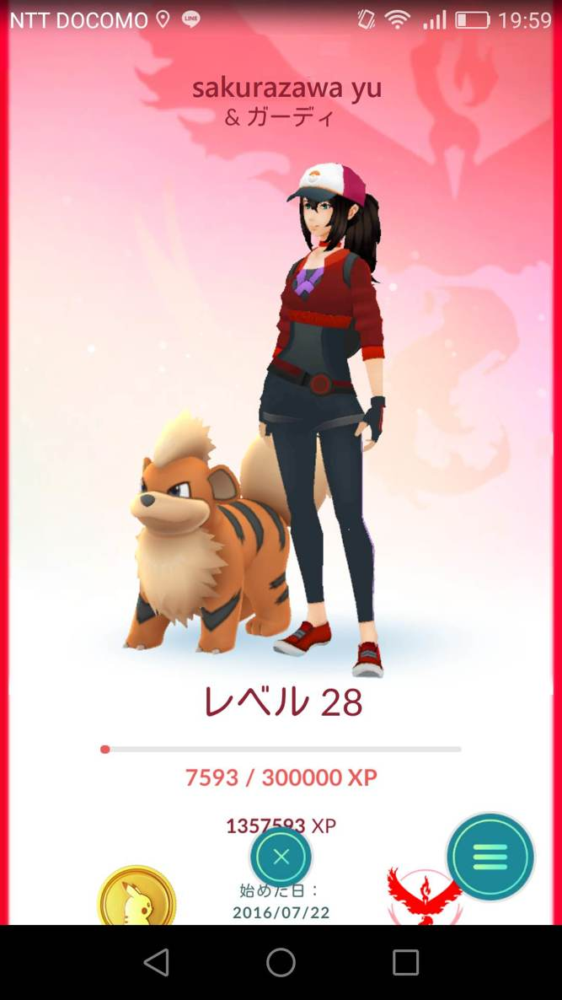

| ポケモンＧＯにはご用心 性転のへきれき | |
| 桜沢ゆう | |
| (2016) | |
桜沢ゆう
アルバイト募集
夏休みが残り少なくなってイライラしていた九月三日の朝、スマホでググっていたらこんな広告が目に飛び込んだ。ポケモンＧＯのアップデートのニュースを見て、どのポケモンを相棒に選ぶのが良いのかを調べようとしていたところだった。確かポケモン、相棒、選択というキーワードで検索した時だったと思う。
ポケモンＧＯをすれば給料をもらえるとは夢のような話だ。僕は夏休みには沢山バイトをして冬のスキーシーズンのために貯金をしようと思っていたのに、結局殆どバイトをせずに時間ばかりが過ぎてしまっていた。
僕にとってポケモンＧＯは諸悪の根源だった。七月二十二日、日本での配信が開始された日にスマホにインストールしたが、それ以来ポケモンＧＯに没頭するようになった。そもそもポケモンＧＯは歩くことが主眼のゲームであり、毎日長距離を歩けば身体にいいしダイエットもできると思って開始した。しかしトレーナー・レベルが上がってくると、もっとレベルを上げたいという欲望に憑りつかれた。
朝七時にアパートを出ていくつかの公園を歩き回り、夕方クタクタになって帰宅する。風呂に入ってテレビでも見て寝ようと思うのだが、もう一、二時間歩けば次のレベルまでアップできるかもしれないと思うと居ても立っても居られなくなって夜八時に再び家を出る。結局午後十一時に疲労困憊して帰宅しシャワーを浴びて寝るだけなのだが、ベッドに横になる前に翌朝六時半に目覚まし時計をセットする自分が恨めしかった。
そんな毎日が続いたが、トレーナー・レベルが三十になった瞬間、その場で「三十になったぞ！」と大声で叫んでしまった。公園で僕の周りにいた人たちは僕が三十才になったと叫んでいるのだと誤解したかもしれない。でも僕は年令より若く見えると友達から言われているので、周囲の人は僕が嘘をついているか頭がおかしいと思ったに違いない。いずれにしても公園で突然「三十になったぞ」と叫ぶ人が正常の域に入るとは思わないだろう。
その日の夜、僕はとても虚しくなった。
「この先には何があるのだろう？」
レベル三十になるまでに必要な累積ポイントは二百万だった。次のレベル三十一に上がるには更に五十万ポイントが必要だ。五十万ポイントとはポケモンを開始した人がレベル二十三になるのに必要なポイントよりも多い。ネットで見ると殆どの人がレベル二十一から二十三あたりでポケモンがイヤになるという。レベル三十になると、それほどの労苦をしてもレベルがひとつ上がるだけなのだ。
ポケモンＧＯの最高レベルは四十に設定されている。レベル四十に到達するまでに必要な累積ポイント数は二千万であり、現在の僕の累積ポイントの十倍だ。気が遠くなるような数字だ。僕はそれまでに廃人になるのが確実だと思う。
「もうポケモンは卒業しよう。このままだと僕は気が狂ってしまう」
そう思い始めた時にバイト募集の広告に出会って救われた気がした。仕事なら無駄とは言えない。ポケモンＧＯで人より上に行くには体力、気力、根性の三要素が必要だが僕は三要素とも備えているし、ポケモンＧＯに関する知識経験は誰にも負けない。
広告の「こちらをクリック」というリンクをクリックすると、「応募フォーム」が表示された。住所、氏名、年齢、職業、性別、身長、体重とポケモンＧＯのトレーナー・レベルを記入し、上半身の写真を添えて申し込むようになっていた。僕はスマホで自写した写真をアップロードして送信ボタンを押した。
送信ボタンを押した瞬間、ここ数日間心の中に鬱積していた重い焦燥感が風に吹き飛ばされたように消え去った。久しぶりに目覚まし時計をセットせずにベッドに横たわり重荷から解放された気分でぐっすりと眠った。
＊＊＊
翌朝目が覚めると時計は十時を回っていた。こんなに眠ったのはひと月ぶりだろうか。カーテンの隙間からの陽ざしが眩しい。そう言えば昨夜バイトを申し込んだのだった。あんなウマい話には大勢の応募者が殺到するだろう。いや、ポケＧＯでお金がもらえると思うようなバカな若者を集めるための詐欺の手口かもしれない。昨夜はある意味で僕は思い詰めていた。だから救いを求めたい気持ちが心のどこかにあって、あんな話に応募したのだ。
もし雇ってくれれば面白いし、ダメならダメで本当にポケモンＧＯから足を洗って元の健全な大学生に戻ろう。そうは思っても応募の結果がメールで届いていないだろうかとドキドキしながらスマホを見た。
「ポケモンＧＯのアルバイト募集にご応募いただきありがとうございました。貴方は厳正なる審査の結果適格者と認められましたのでお知らせいたします。つきましては仕事の内容と報酬等に関する説明会を下記の通り開催し、その上で仕事を開始していただきたいと存じますのでお越しください」
ヤッター！ 思わずガッツポーズをした。そりゃそうだろう。「厳正なる審査」とはどんな審査なのかは知らないが、ポケモンＧＯのマニアを数百人集めてもレベルが三十を超える人がそう何人も居るはずがない。僕が落とされるはずがないじゃないか。何事も極めることが価値になる時代だ。東京中で数百軒のラーメン屋を回った大学生が「ラーメン評論家」という肩書でテレビに出ているのを見たばかりだ。現時点でポケモンＧＯのレベルが三十ということは、そのラーメン評論家に劣らないほどの専門性と希少価値を意味するのではないだろうか。僕はある意味で道を究めた人間なのだ。モリモリと自信が湧き上がった。説明会は今日の午後三時に秋葉原駅から徒歩数分の昭和通り沿いのビルで開催されることになっていた。
＊＊＊
早めにアパートを出て上野駅まで行き、不忍池を回ってから秋葉原の説明会場まで歩いて行こうかと思いついた。不忍池にはミニリュウというポケモンが沢山出現することで知られており、ミニリュウはハクリュウに進化し、更にカイリュウという強いポケモンに進化する。数多くのミニリュウを集めて強いカイリュウを手に入れたかった。不忍池から上野駅を経て中央大通りを秋葉原まで歩くルートはポケストップ（ポケモンを捕まえるのに必要な道具をもらえるスポット）の密集地帯だから効率よくポイントを集められる。
「イヤ、ダメだ！」
昨夜ポケモンＧＯから卒業しようと心に決めたばかりなのに、僕は何ということを考えているのだ。頭をブルブルと左右に震って、愚かな考えを頭から追い出した。僕は目を閉じて深呼吸をしてから両手を胸の前で組み、夕暮れの砂浜に一人座禅を組んでいる自分を想像した。十分ほどするとポケモンＧＯに絡む欲望が覚めてきて、自分を客観的に振り返ることができるようになったという気がした。
僕をポケモンＧＯに駆り立てたのは、初期においては物珍しさと新しいポケモンと遭遇した時に味わえる興奮だった。ところがレベルが十を超えたあたりから「もっと上のレベルに行きたい」という欲望に憑りつかれた。それは見栄のための出世欲そのものだった。友達と会うと「ポケモンのレベルは幾つになった？ 僕はもうすぐ二十だよ」というと、「うわあスゴイな。お前にはとても敵わないよ」という答えが返ってくる。それが何とも言えない快感だった。もう一つの欲望はコレクターと同じ所有欲だ。ポケモン図鑑にある百数十のポケモンのうち、何種類のポケモンを捕獲したかを自慢しあうという他愛のないことだが、百を超える頃から必死になって新しいポケモンを追い求めるようになった。
本当に愚かしいことだった。出世欲、見栄、所有欲。従来僕が価値を認めていなかったことのために必死になる自分。もう二度と後戻りしてはならない。レベル三十一になろうと思うのは止めよう。
安らかな気持ちで二時にアパートを出た。スマホでポケモンＧＯを起動せずに外出したのはひと月ぶりだった。充電用の外部電源ユニットを置いて出たのでバッグも軽かった。秋葉原駅の昭和通り口の改札を出てメールに記されていたビルまで歩いて行った。それは昭和通り沿いの一階が飲食店になっている古い雑居ビルで、始めて訪れる人を神経質にさせるのに十分なほど薄暗い階段を四階まで登って行った。
「ポケモンＧＯ説明会場」という掲示はすぐに見つかった。ドアの外に置かれた細長い机で眼鏡をかけた太いオバサンが受付をしていた。
「桜里ですけど」
僕が名乗るとオバサンは「えーと」と言いながら名簿の中の名前を上から順にチェックして名簿の中段に僕の名前を見つけた。
「桜里里桜ですって、クククク」
名簿にプリントされていた僕の名前を見てオバサンが笑った。物心ついてから、というよりも、漢字が書けるようになってから何百回も笑われて育ってきた。このオバサンが悪いわけじゃない。味付け海苔の会社に触発されて上から読んでも下から読んでも同じ漢字になる名前を選んだ両親が悪いのだ。
「名簿の中に一人だけ女性がいると思っていたら、男性だったのね」
レオはレオナルドの略であり男性らしい名前の代表だ。英米人はＬＥＯを必ずリオと発音する。リズが女らしいのと同程度にリオは男らしい名前なのだ。このオバサンはデカプリオが女優だとでも思っているのだろうか。
僕はオバサンの質問を無視して十四番と書かれたバッジを受け取り、ポロシャツのポケットの上にそのバッジを付けた。中央の通路の左右に三人用の長机が七列並んでいて、既に十人ほどが座っていた。僕は他の応募者の様子が見えるようにと前から四列目の左端の席に座った。最後尾の列はスタッフ席らしく、書類やパソコンが置かれていた。
午後三時に説明会が始まった時にはスタッフ席を含めて四十二席がほぼ満席になっていた。審査を通った人が四十人近くいるということは応募者数はその倍、いや、数百人だったのかもしれない。三年後に就活をする時にもこんな風にスイスイと進めばよいのだが......。
スタッフを含め全員が男性だった。やはり審査基準はポケモンＧＯのトレーナーレベルに最重点を置いていたのだろう。ネットを見ていて現時点でレベル二十を超えている人は殆どが男性だからだ。ポケモンＧＯを楽しむ女性は大勢いるが、そこまでのめり込む女性は少ない。昨夜までの僕のような精神状態に追い込まれないという点において女性の方が正常かつ賢明な価値観を持っているということだろう。
「ただいまよりポケモンＧＯのアルバイトに関する説明会を開催します」
最後尾の席のスタッフがよく通る声で言うと会場が静かになった。
四十前後の背の高い男性が中央の通路を通ってホワイトボードの前に進んだ。
「みなさん、おめでとうございます。責任者の水野と申します。昨夜までに七百五十三名からの応募があり、厳正な審査の結果、四十五名を選んで説明会の招待メールを送った結果、三十九名の参加がありました。厳正な審査と言っても、住所、氏名、年齢、職業、性別、身長、トレーナー・レベルと写真の八項目による審査です。今回は若く、健康な男性だけが審査をパスしました。周囲の応募者を見て気づいたかもしれませんがほぼ全員が高校を出て二年以内の大学生かフリーターとなっています。正社員への登用のチャンスがあると書いた結果、四、五十代の失業者や定年退職者も百人近くの応募がありました、ウッフッフ」
連られて笑ったのは二、三名だけだった。水野の苦笑には不気味な印象が残った。
「まず、仕事の内容を説明します。今回の仕事はポケモンＧＯの代行業務です。ご存知の通りポケモンＧＯを始めるとき時にはメールアドレスとパスワードを登録します。このメールアドレスとパスワードがあれば別のスマホでゲームを進めることができます。世の中には早くポイントを稼いでトレーナー・レベルを上げたいという強い欲望とお金の両方を併せ持つ人たちが大勢存在します。その方々が我社のお客さまなのです」
なるほど。ポケモンＧＯに憑りつかれた金持ちが代行業者に金を払って自分の代わりに出歩かせてポケモンを捕獲させ、トレーナー・レベルを上げさせるというわけか。
「皆さんの仕事の内容というのは、お客様のＩＤでポケモンＧＯにログインし、出歩いてポケモンを捕獲することによりポイントを獲得するということです。毎朝、本社からその日に代行するお客様のＩＤとパスワードをメールで皆さんに送ります。午前零時に本社のサーバーからお客様のアカウントにログインしてその日の獲得ポイント数を記録して各人のバイト料を振り込みます。トレーナーレベルによってポイント数あたりのバイト料は異なりますが、例えばレベル十五の場合は二ポイントあたり一円です」
僕なら八時間で四万ポイントは稼げるだろう。一日八時間のバイトで二万円ということになる。時給二千五百円というのは美人女子大生がキャバ嬢のバイトをすれば稼げるかもしれないが僕には到底あり得ないほど割りの良いバイトだ。頑張って毎日十二時間働けば十日で三十万円になる！ 周囲に座っている応募者たちから軽いどよめきが湧き上がった。皆、目を輝かせていた。
「但し、今回採用する人数は十名で、四人に一人の狭き門ということになります。これから隣の小会議室で簡単な面接を実施します。四名を一組として五分間の面接です。前列から順に四名ずつ小会議室に入ってください。次の四名は小会議室のドアの前で待機してください。全員の面接が終わって採用者を発表するのは約一時間後になりますが、面接を終えた方はこの部屋でお待ちください」
水野は中央の通路を通って出て行った。スタッフが前列の端から四人と、その次の四人を小会議室へと誘導した。この順番で行くと僕は十九人目、ということは五組目の面接になる。もっと前の席に座っていたらドキドキしながら面接を待つ時間が短くて済んだのに、と後悔した。
面接では何を聞かれるのだろうか。ちょうど、就活中の三流大学の四年生が何度面接を受けても落とされるという連ドラを見ているが、面接では、何故その会社に入りたいと思ったか、とか、自分を雇うと会社にとってどんなメリットがあるのかという点について、アピールする必要があるようだ。僕がアピールすべきポイントは何だろうか？ やはりポケモンＧＯの実績を強調するしかないだろう。ポケモンＧＯの代行をする会社ならひと月余りでレベル三十を達成するのにどんな克己心と集中力が必要かは分かっているはずだ。そうだ、もう一つアピールすべき点は健康かつ真面目で誠実であるということだ。小中高校すべてで皆勤賞を取ったことをアピールしよう。
十分ほどすると最前列の応募者四人が帰って来た。真後ろに座っている四人はスタッフに誘導されて出て行ったばかりだったので、三列目の人たちが「どうでした？ 何を聞かれましたか？」と口々に質問した。
「ゴメン。面接の内容は待っている人には話さないようにと言われたので......」
スタッフが「静かに！ 面接の内容についての会話は禁止されています」と大きな声で注意したので会場がシーンとなった。
数分するとスタッフから声が掛かり小会議室の前まで連れていかれた。丁度面接を終えた四人が部屋から出てきて、待機していた四人が入れ替わりで部屋に入るところだった。出てきた四人は誰もガックリとはしておらず、うれしそうでもなかった。面接される側には成否がはっきりしないようなことを聞かれるのだろうか？
小会議室の中で何かしゃべっているのは聞こえるが話の内容までは分からない。時間が過ぎるにつれて鼓動が高くなってきた。こめかみにトクトクという音が聞こえ始めた時、ドアが開いて四人が出てきた。全員が顔をうなだれていた。どうしたんだろう？
「どうぞ、中に入ってください」
スタッフに促されて小会議室に入った。僕は前から三番目だった。部屋の奥には長机が置かれていて水野を含めて三人の男性が座っていた。三人とも四十代程度で近寄りがたい雰囲気の人たちだった。それ以外の机や椅子は取り去られていて、僕たち四人は面接官たちの前に並んで立たされた。
「一人ずつ一歩前に出て自己紹介してください。持ち時間三十秒で、自分についてアピールしてください。但しポケモンＧＯに関係する事をしゃべってはいけません。では左端のキミからどうぞ」
指差されたのは内気そうで色白な男性だった。先陣を切らされるのが気の毒なほどひ弱な感じの人で、恥ずかしいのか、顔が真っ赤になっていた。
「ぼ、ぼ、ぼく、Ｋ大学の一年の山際聡志です。アルバイトは初めてなので緊張しています。よろしくお願いします」
たったそれだけ？ 全く自己アピールにはなっていない。気の毒だが競争相手が一人減ったと思った。
「じゃあ質問だけど、キミはどうしてそんなに色白なの？」
水野が聞くと、山際はもじもじしながら答えた。
「母が色白なので遺伝だと思います。それに、僕、読書が趣味なので日光に当たることが少ないんです」
「なるほど。両手を真上に上げてその場で一回転してください」
奥の面接官に言われて、山際は手を上げて「こうですか？」と言いながら一回転した。
「はい、けっこうです。じゃあ、次は十四番の名札のキミ」
水野に指さされて慌てた。僕は次の次のはずなのに一人飛ばして先に指名されたからだ。
「ぼ、僕はＮ大学１年の桜里リオと申します。ええと、セールスポイントは小学校から高校までずっと皆勤賞を取ったことです。健康で素直なのが特徴です。ええと......」
しまった。「真面目で誠実」というべきところを「健康で素直」と言ってしまった。ポケモンＧＯについてしゃべってはだめだと言われたので、予定が狂ってしまったのだ。
「はい、スピーチはそのぐらいでいいよ」
しまった。これでは山際と同レベルではないか......。両隣の応募者の口元がニヤリとなって「勝ったぞ」と言っているような気がした。
「キミの好きな食べ物を二つ言ってくれ」
水野から予期せぬ質問が出た。
「は、はい......。ええと、母が作ってくれるコロッケと、それから、ええと、イチゴ・シュークリームです」
面接官三人が一斉にワッハッハと軽く笑ったので僕は耳の付け根まで真っ赤になった。イチゴシューが子供っぽいから笑ったのだろうか。いや、「母が作ってくれる」と言ったのがまずかった。この年でマザコンと思われたに違いない。単にコロッケと言うべきだった。
「その場でピョンピョンと飛び跳ねながらゆっくりと一回転して」
一番奥の面接官に言われて、僕は絶望的な気持ちのまま言われた通りにした。
「はい、けっこうです。じゃあ、次はキミ」
水野に言われて僕の右の男性がしゃべりはじめた。自己アピールとはこんなふうにするものだとでも言うように胸を張ってしっかりとしゃべっていたが僕の耳には入ってこなかった。「もう終わった」という気持ちと敗北感に包まれた僕にとって、残りの二人が何を言おうと興味はなかった。四人目の応募者が何をしゃべったのかも全く覚えていない。ただ、面接官の前で一回転させられたのは山際と僕だけだった。バカにされたような気がして気が滅入った。
面接室を出ると急に尿意が高まり、説明会場に戻る前にトイレに立ち寄った。山際も一緒だった。並んで用を足している時に山際が力のない優しい声で僕に言った。
「面接ってイヤだよね。思ってもいなかったことを急に聞かれるとドキドキして何も言えなくなっちゃう」
「そうだよね。僕はポケＧＯのことを言おうと思って準備していたのに、ポケＧＯのことはしゃべるなと言われて調子が狂っちゃった」
山際に言い訳しても何にもならないのだが......。
「ポケモンＧＯってそんなに面白いの？」
「面白すぎて弊害が大きいよ。僕はレベル三十だけど、山際君はいくつ？」
「僕は時々やるだけだけど、レベル七だよ」
「たった七なの？」
しまった。「たった」は余計だった。見下すつもりはなかったのに......。しかし山際の優しい笑顔は少しも崩れなかった。
「うん、そうだよ。桜里君はレベル三十ということは僕より二十三も上なんだ。すごいね」
山際の「すごいね」はレベル三十のすごさが全く分かっていない「すごいね」だった。七を四倍して二を足すと三十だと思っているのではないだろうか？ レベル七になるのに必要な累積ポイントは約二万に過ぎない。僕のレベル三十は二百万だから百倍苦労しないと到達できないのだ。
それよりも、ポケモンＧＯの初心者が一次審査を通って説明会に呼ばれたことが不思議だった。七百五十三名の応募から厳正な審査の結果四十五名が選ばれたと言っていたのはウソだろうか？ どんな審査基準だったのだろうか？ でももう僕には関係ないことだ。そして山際にも。僕たち二人の敗北者は奇妙な連帯意識を抱きながら説明会場の席に戻った。
しばらくすると全員の面接が終わった。早く面接結果を発表して僕たちを解放して欲しい。でも、水野が戻って来たのは更に十分ほど待たされた後だった。
「採用が決定した十名の名札の番号を発表します。該当者はこの部屋に残ってください。他の方は帰っていただいて結構です。ご苦労様でした」
水野はホワイトボードに数字を書き始めた。結果は見るまでもないので、僕はバッグを肩にかけて帰ろうと立ち上がった。
ところが、念のためにホワイトボードを一瞥したところ、十四という数字が含まれていたので僕は驚いた。まさか、面接であれほどの醜態をさらした僕を拾ってくれたのだろうか。そうか、やはりレベル三十が決め手になったのだ。僕は思わずその場でピョンピョンと跳ねた。右前方にもう一人ピョンピョンと跳ねている人が目に入った。僕は自分の目を疑った。それは山際だった。レベル七という初心者で面接で完璧にダメだった山際も採用されたのだった。
「採用手続きをしますので、合格者十人は前の方の席に座ってください」
スタッフから声がかかり、僕は山際と並んで最前列に座った。
「今から採用に関する書類を配ります。上から順に記入してください。バイト料の振込先の銀行口座を記入する欄がありますが、口座番号を覚えていない人は帰宅後メールで知らせてください」
手元に配られた「ポケモンＧＯ業務委託」という題の書類を見ると、最初に受託者、すなわち僕たちバイト応募者の住所、氏名、生年月日、メールアドレス、銀行口座・番号の記入欄があった。
僕は財布から銀行のキャッシュカードを取り出して口座番号などを転記した。
その下に「業務委託契約の明細」として、小さめの文字で詳しいことが書かれていた。その明細は裏面まで続き二十項目ほどが堅苦しい用語で書かれていて、最後に署名するようになっている。大学に進学するために上京する前の日に父から「書類にハンコを押すときには必ず内容を全部読め。他人の保証をする書類には絶対にハンコを押してはならない」と言われたことを思い出したので、最初から最後まで真面目に読んだ。特に不自然な内容は見当たらなかった。バイト代は毎週月曜日に前週の分を振り込むと書いてあった。
「ハンコを持っていない人は母印でも結構です」
勿論ハンコは持ち歩いていない。スタッフが前列から印肉を回して、各々が書類の末尾に署名した横に母印を押した。
スタッフが今日の日付の入った受付印を押しながら書類を回収して部屋から出て行き、数分後に書類の両面コピーを持って戻って来た。自分の分のコピーを渡されて、僕は「ちゃんとした会社だな、よかった」と少しほっとした気持ちになった。
「明朝までにお客様のポケモン・アカウントのログインＩＤとパスワードをメールします。それから一点だけ重要なことがあります。原則として毎日午後六時までにポケモン捕獲を終えて、その日実施した業務の内容についてお客様に直接面談して報告する義務があります」
十人からザワメキが湧いた。毎日報告に行く必要があるとは聞かされていなかった。もし遠方なら余計な時間がかかる。それに、六時までしかポケモン捕獲ができないのでは、一日に稼げるポイント数が思っていたよりも少なくなってしまう。
「どこで報告面談をするのですか？ 交通費は出るんでしょうか？」
しっかりとした感じの人が手を上げて質問した。
「もし交通費が出ても例えば相模原まで来いと言われると、下手をすると往復三時間かかりますよね」
その隣の人が続けて質問した。
「面談場所はお客様のご自宅その他お客様から指定された場所になります。申し遅れましたが、交通費実費及びお客様のご自宅まで往復する時間について、時給千円で計算した金額が、その都度お客様から現金で支給されます」
それなら文句はない。他の人たちも納得した表情だった。
「他にも何か問題が起きたり疑問があれば、私あてにＬｉｎｅでお問い合わせください。明日のポケモンアカウントのＩＤとパスワードをお知らせするメールに私のＬｉｎｅのＱＲコードを貼り付けておきますから友達登録しておいてください。それでは他にご質問が無ければ解散します」
参加者たちは席を立って帰り始めた。
「桜里君、だったよね。僕たち採用されてラッキーだったね」
山際から話しかけられた。トイレで話をした時と同じ、力のない優しい声だった。控えめな笑顔を向けられて、ほっとした気持ちになった。僕は山際に不思議な親近感を覚えた。
「そうだね。面接の時には百パーセント落ちたと思ったから、ボードに自分の番号を見つけた時には思わず跳び上がっちゃった。明日からのバイトが楽しみだね」
「楽しみだけど、夕方お客さんに会いに行かなきゃならないと思うと気が重いな」
「そうかな？ どうってことないよ。交通費と時給が出るんだよ。それに、どんなお客さんの代行をしているのかが分かったらポケモンをする時にも何となく励みになるじゃない」
「桜里君ってポジティブ思考ができるんだね。偉いなあ」
おだてているのではなく心からそう思っていることが声でわかる。他人の良いところを素直に褒めることが出来る人は意外に少ない。僕は癒された気持ちになった。
「ほっとしたらお腹がすいてきた。今日は奮発してダブルクウォーターパウンダー・チーズでも食べて帰ろうかな」
「マクドナルドに行くんだったら、一緒について行ってもいい？ 僕もマックを食べたい気がするから」
一緒に食事をすることについて、こんなに控えめな口調で意向を聞かれたことはない。
「勿論さ。じゃあ、行こうか」
僕たちは立ち上がって説明会場を後にした。歩きながら気づいたのだが山際と僕は全体的によく似ている。身長と目の高さ、肩の位置はほぼ同じで、二人ともどちらかといえば華奢な体格だった。先ほど抱いた不思議な親近感の理由が分かった気がした。
僕はダブルクウォーターパウンダー・チーズとミルクを注文し、山際はチキンクリスプと野菜生活を注文した。
「小食なんだね」
「チキンクリスプは三百六十キロカロリーだから一日千八百キロカロリーにコントロールするのに丁度良いんだ。どうしても多めになりがちだから」
「へえ、そうなの？ 僕はカロリー計算なんてしたことが無いよ。体重が増え過ぎたら二、三食抜いてお茶で済ませるとかで、すぐに元に戻るもの。続けて二食抜くとちょっとフラフラするけど」
「でも太らないようには努力してるんだね。今日合格した十人の中には太った人は一人もいなかったよね」
「そりゃあ、ポケモンＧＯで毎日歩いているからさ」
「僕は殆ど歩いていないけど......」
「そうそう、そのことだった。山際君も僕も面接では思うことを言えなくて失敗したじゃない。だから自分が合格していて意外だったけど、レベル三十だから通してくれたのかなと思ったんだ。失礼だけど山際君はポケＧＯは初心者みたいなのに受かっていたから驚いた。何を基準に面接をしたんだろう？」
「僕にも分からないけど、受かった人はみんな優しい顔をしていたよ。ガリガリしてなくて、いい感じの人が多かった」
「へえ、そうなんだ。山際君が飛び抜けて一番優しい顔だと思うけど、他の人の顔はよく見なかったな」
「アハハ、可笑しいな、僕が一番優しい顔だなんて。僕は桜里君がダントツで優しい感じだと思ったから話しかけたんだよ。誰でも自分の事って気づかないものだね」
「芸能とか水商売じゃないんだから、顔の優しさを審査基準にはしないだろう。ポケＧＯをするのに顔は関係ないもの」
「でも毎日お客さんに会って報告するんだから、会社としては感じの良い人を採用したいんじゃないかな。それに、予備審査で選ばれたのは十八、九才の男性だけだよ。今日来ていた三十九人はほぼ全員がジャニーズ系のイケメンだったと思わない？」
「僕、人の顔に関する記憶力は低い方だからよく分からないよ。確かにゴツイ感じの人は一人も居なかった気がする。でもちょっと待って。今の話を冷静に解釈すると、山際君は自分もジャニーズ系のイケメンだと思っているんだね」
「そ、そんな......」
色白の山際の頬が真っ赤に染まった。ちょっとからかっただけなのに、まるで少女みたいに反応されると僕の方が戸惑ってしまう。
「桜里君をイメージして言ったんだ。自分がイケメンだと思ったことは一度もないよ。女の子からも相手にされないし」
「女子にモテないという点では僕も負けないぞ。今日はモテない男どうし知り合えてよかったね」
僕は自分がモテないとは思っていなかったが、話のノリでそう言った。
Ｌｉｎｅのふるふるでお互いを友達追加して別れた。
＊＊＊
ピピピッ、ピピピッ。目覚まし時計が鳴っている。そうだ、今日からポケＧＯの仕事が始まるから六時半にセットして寝たのだった。カーテンを開けるとどんよりと曇っていた。絶好のポケモン日和だ。ポケモンＧＯは長距離を歩くから快晴だとバテてしまうし、雨が降って傘をさすと手元がおぼつかず命中率が落ちる。曇り日が最高なのだ。
スマホでメールを開くと「今日のお客様について」という受信があった。早速ポケモンＧＯを起動して「サインアウト」をクリックし、メールに書かれていたＩＤとパスワードを入力した。
saori278488という名前のトレーナーで現在のレベルは五となっている。名前から推測すると昭和二十七年八月四日生まれのサオリさんという女性である可能性が高い。六十四才だから自虐的に「ババア」という意味でsaori278488という名前にしたのだろう。よし、夕方までにレベル十まで高めて報告に行ってサオリさんを驚かせてやろう。最後に「しあわせたまご」を使って大量に進化させればレベル十一か十二まで持っていけるかもしれない。
「お客様との報告面談のロケーションについては正午ごろメールでお知らせします」と書かれていた。場所が分かっていれば午後六時ごろにその近辺に行くような徒歩ルートを考えて「仕事」を開始できるのに、と思った。どこに行くにも便利な秋葉原駅周辺でお昼を迎え、報告面談の場所をチェックしてから午後の行動計画を立てることにしよう。
トーストと低脂肪乳で朝食を済ませて七時半にアパートを出た。秋葉原までは十二キロだから歩くと二、三時間かかる。誤解を避けるために言っておくが、僕の平均歩行速度は信号待ちを考慮しても時速五・八キロメートルだから、ただ歩いていくだけなら秋葉原駅には二時間ちょいで行ける。ポケモンＧＯをしながら歩くと、時速は郊外でも八割、都心だと半分以下になる。アパートを出たところで二匹続けてポッポが出現し、僕は勿論一発で仕留め、グッドスロー・ボーナスを含めると合計二百七十ポイントを獲得した。ポッポを進化させる際に得られるポイントを考慮すると、約五百ポイントを獲得したことになる。昨日の説明会で聞いたバイト料の目安は二万ポイントで一万円だから、僕は既に二百五十円を手にしたことになる。
ということは電車代を節約して秋葉原駅まで歩くよりも、電車に乗ってできるだけ早くポケモン密集地域に到達する方が、収入的にもベターなのだ。僕は歩く方向を変えて駅に向かった。有楽町までＪＲに乗って日比谷公園に行き、何週かした後で銀座、日本橋、三越前、神田を通って秋葉原の中央大通りに行くというルートにしよう。月曜日の午前中だから日比谷公園の人口密度は低い。日比谷公園には適度にポケストップが配置されていて、身体が軽いうちに歩き回れば遭遇するポケモンに見合う量のモンスターボールを入手できるので、効率よくポイントを重ねることが出来る。銀座を抜けるときには歩行速度が落ちるが、ボールやズリの実を補充しながら秋葉原に行って、ポケモン狩りの本番に臨めば良い。
通勤時間帯の電車は満員で、直立姿勢を保つのも一苦労だった。僕はバックパックを胸側に掛けてひたすら混雑に耐えた。僕も三年半後に卒業して就職したら毎朝こんな苦労をして通勤することになるのだろうか。考えるだけでも気が滅入る。大人にはなりたくない。神様に一生十八才のままで居させてくださいと祈っても叶えられるはずがない。ポケモンＧＯの代行を職業にできないだろうか？ このバイトなら一日二万円五千円は軽い。ひと月あたり二十日働いて月収五十万円だから楽々食べていける。女子が結婚相手を選ぶ際の希望条件である年収一千万には届かないが、大学を出たばかりで年収六百万なら、女子も良しとするのではないだろうか。でも三年半後にポケモンＧＯがどうなっているのかは予測がつかない。
そんなことを考えているうちに有楽町駅に着き、改札に向かって歩きながらポケモンを起動させた。
ポケモンＧＯの欠点としてソフトウェアの完成度が低い段階で市場投入したということがある。スマホのボタンを押してから起動するまでに軽く一分以上かかるし、起動後にカメラやＧＰＳが絡むソフトウェアを使うと、ポケモンＧＯの再起動が必要となる場合が多い。電車に乗る際にポケモンＧＯのソフトウェアを完全に終了させないと速度制限ペナルティーの警告が出る。つまり、ポケモンＧＯをする時には、メール、ＳＮＳ、写真撮影、検索などをすることが面倒になるのだ。不便極まりないのにポケモンＧＯを起動させてしまう。それほどの魔力を持つポケモンＧＯが憎くなることがある。
思い通りにならないから益々好きになるという点では恋愛と共通点がある。僕の限られた恋愛経験を振り返ってみると、会話やメールで快く返事してくれる女子よりも、仲は良くても思うように返事をくれず約束をドタキャンしてくる女子を好きになってしまった時が一番重症だった。
交番の近くの出入り口から日比谷公園に入った。出社前のサラリーマンがスマホを見ながら歩いている。すれ違う人のスマホをちらっと覗くと、ポケモンＧＯの画面が殆どだった。ポケモンＧＯをしている人の男女比は昼間都内の路上で見るよりも圧倒的に男性が多いようだ。出社前の時間帯は女性の方が化粧などで忙しいからだろうか。
九時を回ると日比谷公園のポケモンＧＯ人口は急低下し、ポケストップ周辺が歩きにくいほど混雑することもなくなって、僕は快適にポケモン狩りをすることができた。同じ場所で十人がポケモンＧＯをしていても、ポケモンは十人各々のスマホ上に出現する。一匹のポケモンが現れると十人で取り合うわけではない。だから同じポケストップの周辺でポケモンをしている人たちに対して敵意を抱くことはない。また誰かがルアー・モジュールというポケモンをおびき寄せる道具を使うと、周囲の人たちも同じように恩恵にあずかれる。このようにポケモンＧＯは（ジム・バトルを例外として）平和と友愛を目指すゲームなのだ。ポケモンＧＯを捕獲した時に「一匹やっつけた」と言う人がいるが、あれは間違っている。ポケモンにボールを投げて捕獲し自分のものにするだけであって、絶対にやっつけたり殺したりはしない。捕獲したポケモンが不要になったら「博士に送る」という操作をして送り返し、替わりにアメをもらう。送り返したポケモンは再び世界のどこかにテレポートさせられて別のプレーヤーに捕獲され大事にされることになる。
日比谷公園の中には約四十のポケストップがある。お堀に近い交番の横から入り、桜門の手前を左折して、中央の通りを日比谷図書館の手前で左に曲がり、日比谷通り沿いに元の出入り口の手前まで戻るのが最も効率的な周回ルートだ。僕は一時間ほど公園内を自由に歩き回ってその周回ルートを確立し、お昼前までに周回ルートを約二十周することができた。ポケストップに五百回ほど立ち寄ったので、それだけでも約三万ポイントを稼いだことになる。
朝アパートを出た時点での計画では日比谷公園から銀座、日本橋、神田を通って秋葉原に移動する予定だったが、そのまま日比谷公園で居続けることにした。銀座を歩けばポケストップの密度は高いが、観光客を含め世界中の老若男女が通りをブラブラしている。日比谷公園の中なら歩きながらポケモンにボールを投げられるが、銀座ではポケモンＧＯをプレイしながら歩くのは止めた方がよい。老人を突き飛ばしてケガを負わせたり、せっかく爆買いしに来てくれた中国人に反日感情を抱かせるかもしれない。
もうひとつ怖いのはポケモンＧＯに夢中になって歩きスマホをする人を狙って意図的に体当たりする人たちだ。体当たりした瞬間に高価なカメラなどを落下させて賠償しろと要求してくる。強気に「僕だけじゃなく、あなたも悪いんだから」と言うと、「両方とも過失があったことを認めたのなら半額負担しろ」と言い返されて数万円を請求される。相手は毎日何十人もを相手に同じカメラを落としては半額を請求するので、とても良い商売になるわけだ。
この手口は以前ニューヨークで流行した「ボトルマン」と似通っている。酒屋の店員を装った人が観光客に巧妙に体当たりして、手に持っていた酒瓶を落とす。割れた酒瓶を指さして「二百ドルのシャンペインを配達していたんだ。弁償してくれ」と言う。観光客が「あなたにも過失がある」と言って支払いを拒否すると、「両方悪いから折半だ」と言って百ドルを請求する。しかしボトルマンの人数が増えすぎて、同じ観光客が一日に何度もボトルマンにぶつかられるようになり、誰も本気にしなくなって急速にすたれたという話を聞いたことがある。
日比谷公園で不便なのは昼食だ。コンビニ、マック、牛丼などの店舗が公園内には無いので一旦公園から出なければならない。正午になると日比谷公園のポケストップの周辺にはスマホを手にしたサラリーマンやＯＬで混雑し始めた。ＯＬといっても日本橋界隈で平日の昼休みにポケモンをしているＯＬと比べると明らかに服装が地味で年齢も上だ。日比谷公園の周辺の役所に勤務している女性が多いからだろうか。公園内が混んでいる間に僕も昼休みを取ろうと思い立った。内幸町側の交番の横の出入り口からコンビニの袋を持って公園に入ってくる人を何人か見かけたので、そこから出ると、通りを隔ててファミマが見つかった。僕は弁当とお茶を買って日比谷公園に戻り、ベンチに座って弁当を食べた。食事しながらスマホでメールをチェックすると「本日の面談報告のロケーション」という題のメールが入っていた。
「桜里里桜さんの本日の面談報告のロケーションとお客様のお名前をお知らせします。このリンクをクリックして内容をご覧ください」
と書いてあった。
クリックすると、
「お客様は船橋市三船町3-5-12の柿沼様です。グーグルマップでの緯度と経度は35.705025, 139.984578です。お客様との守秘契約の関係上、この情報をメモすることは禁じられています」
と表示された。
saori278488というＩＤから昭和二十七年八月四日生まれと推測したのはハズレだった。2784は船橋の略だったのだ。沙織さんが六十四才ではなく妙齢の美女である可能性が出てきた。グーグルマップで調べると場所が分かった。総武線の船橋駅から徒歩十分ほどの場所だった。ここからドア・トゥ・ドアで一時間弱だ。
都内ではないが船橋なら問題はない。弁当を食べてエネルギーレベルを回復した僕は午後のポケモン狩りを開始した。
さすがの僕も午後四時を過ぎると足が疲れてきた。そろそろ今日の成果の整理にかかろう。僕は「しあわせたまご」を使ってから捕獲したポケモンの「進化」の作業を開始した。しあわせたまごとは、一個使うと三十分間獲得ポイント数が倍になる魔法の道具だ。ポケモンを一匹進化させると五百ポイントを獲得できるが、しあわせたまごを使うと一匹当たり千ポイントになる。今日レベルが九に上がった時と十に上がった時にレベルアップボーナスとしてしあわせたまごを一個ずつ貰っていた。
進化の作業を終えると、レベル十五に上がっていた。今日僕が獲得したポイントは約八万点だった。ということは、四万円ものバイト料を貰えることになる。
ホクホクした気持ちで地下鉄日比谷駅まで歩き、西船橋で東西線に乗り換えて船橋まで行った。スマホの地図を見ながらゴミゴミとした駅前の歩道を進みパチンコ屋の角を左折して五分ほど歩くと住宅街に差し掛かった。小高い丘に突き当たって左折すると土塀に囲まれた住宅の門があった。グーグルマップに示された目的地はここのはずだ。柿沼と刻印された大理石の表札を確かめてドアホンのボタンを押した。
「はい」と男声が応答した。
「こんにちは。ポケモン代行の桜里と申します」
「どうぞ」
と言う返事の後でドアロックを解除するブザーが鳴った。僕はドアノブを回して引っ張り、塀の中へと進んだ。木立の間の道を十メートルほど進むとテレビのサスペンス・ドラマに出てくるような立派なお屋敷の玄関に着いた。こんな金持ちの家に入るのは生まれて初めてだ。僕はドキドキしながら玄関のドアを開けた。
玄関ホールに立っていたのは五十前後の大柄な男性だった。
「あのう、サオリさんにお目にかかりたいのですが。僕はポケモン代行のバイトをしている桜里と申します」
「どうぞ、上がりなさい」
サオリさんはこの男性の奥さんだろうか？ それともお嬢さん？ 僕が通されたのはアンティークな椅子がゆったりと配置された客間のような部屋だった。
「あのう、サオリさんは？」
「私がsaori278488だ。サオリ・フナバシ・パパの語呂合わせだ」
「あっ、そうなんですか。ポケモンＧＯには女性のトレーナー画像が設定されていたので女性のお客さんを想像していました」
「沙織は娘の名前なんだ」
「なるほど。沙織さんのお父様だからサオリ・パパにされたのですね。お嬢様は大学生かＯＬをされているんですか？」
言った後で失言だったと後悔した。こんな金持ちの令嬢ならＯＬではなく、弁護士・医師などの専門職とか、花嫁修業中かもしれない。
「沙織は事故で亡くなった」
「そんなことをお聞きして、すみませんでした」
「いや、私のような中年男性がこんなＩＤを使っていれば当然予想される質問だ。気にしないでくれ」
気まずい雰囲気を打ち破ろうと思って、僕はスマホを見せながら笑顔で言った。
「今日のポケモン代行について報告させてください。レベル十五まで上がりましたよ」
「十五だって！ 一体どんな手を使ったんだ？ 私はひと月余りかけてやっと五まで到達したというのに」
「朝から日比谷公園を回り続けただけです。僕自身は約四十日間で二百万ポイントを超えてレベル三十に到達しましたから、一日五万ポイントは楽に稼げます。今日はロケーションが良い分、多めに稼げました」
「すごいとしか言えない。君は超人的だ！ 気に入った」
「柿沼さんは毎日どのあたりを歩かれましたか？ この周辺にはポケストップが少ないようですが」
「船橋駅まで歩くか、スーパーまで行くか、後はこの家の庭を歩き回るかというところだ」
そんな歩行距離でレベル五まで来たことの方が不思議だと思ったが、勿論僕は愚かな質問をすることを思いとどまった。
「代行君、夕食はまだだろう？ ピザは好きかね？ 今から電話で注文するから、食べて行きなさい」
ピザという言葉を聞いてお腹がグーッと鳴った。
「で、でも......」
「分かっているよ。拘束時間に応じて時間給を払うということは。じゃあ先に渡しておこう。交通費と合わせてこれで足りるだろう」
柿沼は財布から一万円札を取り出して僕に渡した。
「これは多すぎます」
僕がおつりを出そうとしたら、
「いいじゃないか、取っておきなさい」
と言われた。
柿沼は手慣れた様子でスマホでピザを注文した。
「三船町の柿沼ですが、シーフード・デラックスのＬを至急お願いします。そう、いつものやつです」
「いつものやつ」ということはお得意様なのだろう。こんな金持ちがしょっちゅうピザの宅配を利用しているとは意外だった。
「シーフードのピザだからロゼでいいかな。チーズに着眼すれば赤の方が適切かもしれないが。もし君がシャンパンに拘るなら丁度今朝冷蔵庫に移したのがあるが」
「今おっしゃったのってお酒の事ですよね？ 僕、未成年ですからコーラとか無いでしょうか？」
「泡が出るのが好きなんだな。じゃあ取って来るよ」
柿沼は僕を残して部屋から出て行ったが、しばらくして緑色のガラスのボトルを手に戻って来た。柿沼はボトルのキャップシールをはずすとナプキンをかぶせ、コルクの上部を親指で押さえながら留め金を器用に緩めた。ナプキンの上からコルクを押さえながらボトルの底を回すと、スーッとコルクが抜けた。
柿沼は棚から柄のついた細長いグラスを二つ取り出して、ボトルから淡い黄金色の液体をグラスに注いだ。
「うわぁ、細かくてきれいな泡が出てますね」
「代行君と出会ったお祝いだ。美味しいんだよ」
グラスをチーンと合わせてから一口飲んだ。
「これ、アルコールの味がするみたいな......」
「そりゃあ、シャンパンだからね」
「僕、未成年で......」
「大学生なら飲む機会もよくあるだろう。選挙権だって年齢が引き下げられたんだから」
「そりゃそうですけど......。でもこれ、すっごく美味しいですね」
「私はワイン通を自認しているがシャンパンのことは良くわからん。面倒だからいつも一般的なブランドのやつをまとめ買いしている」
どんなブランドなのだろうとラベルを見た。
「ドム・ペリグノンというブランドなんですね。重厚な感じの名前ですね」
「フランス語読みするとドン・ペリニヨンだよ。日本ではドンペリという愛称で呼ばれている」
「ド、ドンペリですか！ テレビでよくやってる、ホストクラブで金持ちマダムが注文するやつでしょう？ 十万円以上するお酒じゃないんですか？」
「そりゃあ外で飲めばそれなりの値段だろうが、まとめ買いすれば安いんだよ。送料込みで一万数千円というところかな」
ピザを食べるのにコーラの大きい方のボトルを百本買える値段のアルコール入りソーダを飲むという金銭感覚に驚いた。
ドアホンが鳴ってモニター画面に冴えない学生風の男の顔が大写しになった。ピザの宅配だった。柿沼は塀の入り口のドアの解除ボタンを押してから玄関へと歩いて行った。間もなくピザの箱を手に戻って来た。
柿沼は棚の引き出しからピザカッターを出してピザを切り分けた。
「美味しい！ すっごく美味しいピザですね」
「気に入ってくれたか？ これはシーフード・デラックスだが次回は肉系のスパイシーなものにしようかな」
「でも、バイトの僕が何度もご馳走になっては......」
「そうそう、派遣会社には明日以降も毎日自動延長するように連絡をしておくよ。明日からもよろしく頼む」
「ありがとうございます。でも、一日ごとの更新になっていたとは知りませんでした」
「そのために夕方報告に来てもらうシステムになっているんじゃないか。写真と実物とは全然違う事も多いからね」
「写真って僕の写真のことですか？」
「そうだよ。派遣会社から届いた十人のプロフィールから一番気に入ったのを選ぶ。そして翌日現物を確認して継続するか、それとも別の代行君に取り替えてもらうかを返事するのさ。そして一週間以内に直接契約に切り替えるかどうかを返事する」
「直接契約？」
「代行君は派遣会社と委託契約書を取り交わしているだろう。『甲は本契約を第三者に譲渡することができる』という条項が入っている。勿論、甲とは派遣会社、乙が代行君のことだ」
「そう言えばそんなことを書いてあったような気がしますけど。柿沼さんが僕を直接雇う形になるわけですね。そうなると、派遣会社はピンハネできなくなって損しません？」
「勿論、契約譲渡の手数料を何十万か取られるよ」
「何十万？ それってポケモンのポイントのことですか？」
「アッハッハ、代行君は面白いことを言うねえ。消費税込みで五、六十万円だったと思うよ」
「そんな大金を払って直接契約してどんなメリットがあるんでしょう？」
「一週間以内に直接契約に切り替えないと派遣が終了する。そうなるとまた契約料を払ってゼロから出直しだ。代行君に再度会える可能性は殆どない」
「最初に契約料を取られるんですか？」
「契約料は二、三十万程度だ。十日ほど前に一人派遣されてきたが、プロフィール写真とは全然違っていてガッカリしたから取り換えてもらったんだ。二、三週間かかると言われていたが思ったより早く新しいプロフィール集が届いた。そして選んだのがキミだ。プロフィールの印象を更に上回る極上クラスだったから驚いたよ」
「はあ、そんなに褒められると恥ずかしいです。レベル三十まで頑張った甲斐がありました。前回の人は一日やって二万ポイント以下しか稼げなかったわけでしょう？ 僕なら千葉県の公園でポケモンＧＯをしても一日四万ポイントは稼げると思いますよ」
「代行君の素直で明るい話を聞いていると、私まで心が洗われる。良い人が派遣されてきて本当に良かった」
「素直で明るい」という形容詞は子供の時から何度も聞いて育ってきたが、これほど手放しで褒められた記憶は無かった。自分を評価してくれる人のために働けるのは幸せだ。明日は今日以上のポイントを稼いで、更に満足してもらおう。そうだ、今夜アパートに帰る前に都内のポケストップ密集地を一、二時間歩こうかな。
僕の実家だったらもっと安っぽいピザを注文して、父は第三のビール、僕たちはコーラというところだ。具がたっぷりと乗ったシーフードのピザと一万円以上もするシャンパン。同じピザでも全く別次元の美味しさだった。父の世代の男性と会話しても共通の話題が殆どないから楽しくないことが多いが、柿沼と二人で話をしていると何となく気持ちが落ち着く。父や叔父のような説教めいた話や昔の自慢が入った話をしないし、言葉の端々に僕を持ち上げて快く感じさせようとしている配慮がうかがえた。
すっかりリラックスして、ピザとシャンパンをゆっくりと楽しんだ。食べ終わったら日中の長距離歩行で蓄積された足腰の疲れが心地良く身体に広がって、身体全体がだるかった。お酒の弱い僕にしては少し飲み過ぎたが、身体が重い感じはせず、スーッと立ち上がることが出来た。
「そろそろ失礼しなくちゃ。今夜はぐっすりと寝て明日も頑張ります」
「寝るだけのためにアパートに帰っても、どうせ朝からポケモンＧＯをしに行くんだろう？ 無駄なことはせずに、泊まっていきなさい。お客さん用のベッドルームがあるから」
「でも、やっぱり一度家に帰って下着も着替えたいですし......」
「代行君、私の申し出を断って帰ったら、仕事が明日も更新される保証は無いよ」
「そ、それは困ります」
「ワッハッハ、今のは冗談だ。脅すつもりはないが、今夜は泊まりなさい。着替えは用意してあげるから」
「は、はい......。じゃあお言葉に甘えて」
初対面のお客さんの家に泊まることには抵抗があった。他に誰も居ない家でお酒を飲まされて二人っきりで向かい合っている。大柄で頑強な身体つきの柿沼に何かされたら華奢な僕はひとたまりもない。でも、もし何かあっても僕はすばしっこいから逃げられる自信はある。それに、一体何をされるというのだ？ 柿沼はどう見ても教養のある紳士だ。男性である僕に対して柿沼がヘンなことをすると思うこと自体、テレビの見過ぎじゃないか。
十二畳はありそうな広いベッドルームに案内された。クラシックな洋間の窓際にはライティングデスクが置かれている。シンプルで品の良いベッド、それに二人掛けのアンティークな座椅子が配置されていた。
「風呂はこの突き当りにある。パジャマは脱衣かごの上に出しておくよ。代行君は疲れているだろうから先に入りなさい。タオルは洗面所の右側の棚に入っているものを自由に使ってくれ」
「どうも、恐縮です」
早く風呂に入って寝ようと思い、バッグをベッドルームの椅子の上に残して風呂場に行った。浴槽をお湯で満たしている音がする。ティーシャツ、ジーンズのズボン、靴下、パンツの順に脱ぎ畳んで脱衣かごの上に置いた。
クラシックな家の造りからは想像できないモダンで広々としたユニットバスだった。お湯を止めて、洗い場に座ってシャンプーをしてから身体の隅々まで石鹸で洗った。温めのシャワーで泡を完全に洗い流してから湯船に浸かった。脚を伸ばして首まで浸かれる広い浴槽だった。清潔で、内装はこの家らしい高級感に満ちている。
「代行君の身体に合いそうなパジャマとパンツをここに置いておくよ」
風呂場のガラス戸越しに柿沼の声が聞こえた。
「いろいろ有難うございまーす」
僕もこんな家に生まれたら良かったのに。ふとそんなことを思ったが、お嬢さんを亡くしたとのことだったし、奥さんが居る様子も無い。もし旅行か何かで一時的に不在にしているのなら、ピザの宅配の常連客にはならないだろう。きっと奥さんに逃げられたのだろう。いや、奥さんも亡くなったとか......。いくら金持ちでもそんな不幸に見舞われてはどうしようもない。僕は中流でも家族が仲良く元気な家に生まれてラッキーだったのかもしれない。
湯船の中でくつろいでからハンドタオルを絞って身体を拭き風呂を出た。脱衣かごのパジャマの上にバスタオルが置いてあった。柿沼とは細かいところまで気が付く人なのだなと思った。バスタオルで身体を拭きながら脱衣かごに置かれたパジャマを見た。
ちょっと待ってよ。
これは白のちぢみ地に小さな赤いクマさんがプリントされたパジャマのようだ。ボタンが左前になっている。これは女物じゃないか。手に取ると七分袖で、パジャマのズボンも膝の少し下までしかない。さらに、パジャマの下に女物の黒いパンティーを見つけて唖然とした。
「柿沼さーん！ すみませーん！」
大きめの声で呼んでみたが応答は無かった。僕はバスタオルを腰に巻いて廊下を電気のついている部屋の方へと歩いて行った。
「柿沼さん、いらっしゃいます？」
ドアの外から言うと中から返事があった。
「代行君か。遠慮せずに入りなさい。スコッチでも飲みながら話をしよう」
「あのう、パジャマがちょっと違うみたいなんですけど......」
柿沼が中からドアを開けた。
「どうしたんだ？ なんだ、まだパジャマを着ていないのか」
「脱衣かごのパジャマは女物みたいなんですけど」
「まさか私のパジャマとパンツを代行君に着せるわけにはいかないだろう。大きすぎて、歩けないぞ。死んだ娘より代行君の方が少し小柄だが、娘のパジャマと下着なら着られるだろうと思って出しておいたんだ」
「でも女物では......」
「代行君、贅沢を言うんじゃないよ。早く着替えてきなさい！」
苛立ったようにドアをバタンと閉められた。
確かに僕は贅沢を言える立場にはない。柿沼以外に誰も見ているわけでもないから仕方ないと観念した。僕は脱衣かごの所に戻って黒いパンティーとクマさんのパジャマを着た。柿沼の言った通りサイズは僕にピタリだった。洗面所の鏡に映った僕の姿はまるで女子高生のように見えた。手櫛で髪を整えて柿沼が居た部屋に戻った。それは大きなソファーのある部屋で、壁には最新型の七十五インチのテレビが掛かっていた。柿沼はソファーの前のガラステーブルに足を置いて水割りを飲んでいた。
「代行君はプロフィール写真を見てイメージした以上に美しい人だな。さあ、ここに座りなさい。今、代行君にも水割りを作ってあげよう」
「未成年ですから、もうお酒はやめときます」
柿沼は僕の言葉を無視してウィスキーグラスに氷を入れて高級そうなスコッチと水を注いだ。
「代行君のような人が一緒に飲んでくれると心が休まるよ。キャバクラに行くよりマッチ・ベターだ」
ベタな英語混じりの言葉でキャバ嬢と比べるような言い方をされて僕はドキッとした。柿沼は僕を無理やり家に泊まらせ、女物のパジャマを着せて何かするつもりなのだろうか？ 紳士然とした優しそうな人が突然豹変して......。僕は思わず柿沼から遠ざかる方にお尻をずらした。柿沼は僕の動きに気付いたらしく、僕を見てニヤッと笑った。
「何もするつもりはないよ、代行君。それが証拠に私のココは小さいままだ、ハハハハ」
柿沼は自分の股間を指さして笑った。確かに盛り上がった様子はなかった。
「まさか、そんなことは思っていませんよ」
僕は顔を真っ赤にしながら柿沼の推測を打ち消した。
ムードを変えようとして聞きにくい事を質問してみた。
「あのう、お嬢さんはこのパジャマが合うほどまで大きくなってから亡くなったのですか？」
「去年交通事故で死んだんだ。大学四年だった。私はそれから女房と口論するようになって、女房は私に愛想をつかして出て行った」
「そうでしたか......。思い出したくないことを質問してすみませんでした」
「無性に娘のような若い女性と話したくなってキャバクラ通いをして遊んだりもしたが心にポッカリと開いた穴が埋まるはずはなかった。最近知り合いを介してポケモン代行の派遣のシステムを紹介されて登録してみたんだ」
「お気の毒に......。僕でよろしければ柿沼さんのポケモンをお手伝いしてレベルを二十代半ばまでは持ってこられます。他にできることがあればおっしゃってください。念のためですけど、僕はノーマルですからその点だけは誤解なさらないでください」
「代行君は時々面白い事を言うね。益々気に入ったよ」
柿沼は右横に座っている僕をしばらく見ていたが、突然僕の肩に手を回した。右肩を柿沼の大きな手で掴まれた僕はその場ですくみあがった。柿沼は僕をどうするつもりなのだろう。渾身の力を振り絞って逃げ出そうかと思ったが、もし今逃げたらこのバイトは終わりだ。僕は躊躇しながらじっとしていた。
「少しだけこうさせておいてくれ。お願いだ」
僕は肩をすくめながら耐えた。年配の男性に特有のもったりとした臭いに怯えた。もうすこしだけ我慢しよう。柿沼は肩を抱くだけで満足するかもしれない......。横目で見上げると、柿沼は目を閉じていた。
僕の肩に置かれた柿沼の手に心なしか力が増した。次の瞬間、柿沼はその大きな手で僕をぐっと自分の方に引き寄せた。僕の上半身は斜めになって僕の肩は柿沼の脇に強く押し付けられた。僕は本能的に窮地を逃れるために前方にすり抜けようと身体を動かそうとしたが、柿沼の力は圧倒的で、僕の身体は一センチとして動かなかった。
その時柿沼がささやくように言った。
「動かないでくれ、沙織」
自分の耳を疑った。柿沼を横目で見ると閉じた目から涙がにじみ出ていた。この人は死んだ娘の肩を抱いて座っている幻想を味わうために僕の身体を利用しているのだ。狂っている。どうしてもそんなことをしたければ秋葉原に立っているその筋の女の子にお金を払って連れて来るとか、デリヘルでも呼べば済むことだ。わざわざポケモン代行の男性を家に引き留めて娘のパジャマを着させるなどという、ややこしいことをするのはおかしい。何かが狂っている。
でも、涙を見て気の毒だとも思った。最愛の一人娘を事故で失った悲しみの深さは僕の想像を超えるものなのだろう。ポケモン代行の大事な客だから、もしこれ以上何もしないのだったら我慢してやってもいいかもしれない......。
長い長い時間が過ぎた。実際には数分だったと思うが、僕は何時間も柿沼の腕に抱かれていたような気がした。
柿沼は僕の肩に回していた腕をゆっくりと解き、僕たちは元通りの姿勢に戻って、数センチ離れてソファーに並んで座った。柿沼は何もしゃべらなかった。気まずい時間が過ぎた。
僕はソファーから立ち上がった。
「じゃあ僕、お先に寝させていただきます。おやすみなさい」
お辞儀をして退出しようとしたら、柿沼も立ち上がって「待ちなさい」と言った。僕は本能的にその命令に従った。柿沼は向き合って立つように僕の身体を回し、僕の両肩に手を置いた。
柿沼は僕を見下ろして優しく微笑んだ。
「ありがとう。キミは天使のように美しい」
僕の顎がガクガクと震えた。柿沼は僕にキスをしようとしている。どうしよう......。僕は目を閉じ乍ら唇を噛んだ。
しかし、次の瞬間、柿沼は僕の両肩から手を離して「おやすみ」と言うとソファーへと歩いて行った。
僕は「失礼いたします」と言って部屋を出た。心臓が音を立てていた。助かった。僕はよろめきそうになりながら部屋に戻り、中からドアをロックした。
電気を消してベッドに横たわったが頭が冴えて眠れなかった。ドアはロックしたが、きっと柿沼は鍵を使って開けることができるだろう。風呂を出たら裸で部屋に入って来て僕を襲うのではないだろうか。いや、もしそのつもりがあるなら、先ほど何度かチャンスがあったはずだ。柿沼は娘を妄想するためのツールとして僕を使っただけなのだ。娘代わりということなら襲ったりはしないはずだから僕は安全だ。それに柿沼に男色家の気配は無さそうだった。僕は二重の意味で安全だろう。そう思うと安心して眠くなった。
＊＊＊
唇に生暖かい息を感じる。ゴワゴワとした手が頬に触れた。眠い目をうっすらと開けると怪物のような男性の顔が迫っていた。
「ウワァッ！」
僕はベッドの上で咄嗟に体を回転させてダンゴムシのように体を丸めた。柿沼が僕を犯そうとして部屋に侵入したのだ。
「おはよう。声をかけても返事が無いから心配になって鍵でドアを開けたんだ。そろそろ起きなさい」
確かに、朝になっていた。
「す、すみません。寝過ごしちゃって」
「朝ご飯を一緒に食べよう。キッチンで待ってるよ」
柿沼はあっさりと部屋から出て行った。自分は何てことをしているんだ。バイトの身なのに寝過ごして朝ごはんも用意してもらうとは。柿沼が僕を犯そうとしているなどと本気で恐れていた自分が恥ずかしい。
洗面所で顔を洗ってからダイニング・キッチンに行くと、コーヒーで満たされたガラスポットがテーブルの真ん中に置かれていた。ハムエッグとトーストの朝食だ。柿沼はポットを手に取ってマグカップにコーヒーを入れてくれた。
「すみません。お客さまにこんなことまでしていただいて」
「娘もなかなか起きてこなくて、よく私が起こしに行ったものだ。目を覚まして私の顔を見ると身体をあっちに向けて丸くなって『キャー、エッチ』と言われたものだよ。さっき代行君が娘にそっくりな反応をするのを見て娘の事を思い出した。もっとも、代行君は『キャー、エッチ』とは言わなかったがな、アッハッハ」
何故だか恥ずかしくて顔が紅潮した。
「さあ、早く食べてポケモンＧＯをしに行こう」
「えっ？ しに行こうって、柿沼さんもいらっしゃるんですか？」
「そうだよ。代行君を見ていたら是非一緒に行きたくなったんだ。ダメかな？」
「ダメだなんてとんでもない。喜んでご案内します。特別にポケモンＧＯのやり方を伝授してあげます。ポケモンＧＯって、一見ポケモンが出て来たらボールをスワイプするだけのゲームに見えるかもしれませんけど、投げ方にも色々コツがあるんです。カーブを投げてポケモンを捕まえるとボーナスが出ることをご存知でした？ カーブの投げ方も教えますよ」
「ポケモンＧＯの話をする時には目がキラキラしているね。よろしく頼むよ」
朝食を食べ終えると、僕は食器を片付けようとしていた柿沼を制して、僕が全部片づけをした。
「じゃあ、着替えて出発の準備をしてきます」
僕は洗面所でパジャマを脱ぎ、昨日着て来た服を着ようと探したが見つからなかった。そうだ、確か風呂に入る前に脱衣かごに入れたんだった。僕はパンツ一枚で柿沼を探しに行った。
「すみませーん、柿沼さーん、僕の服はどこだかご存じないでしょうか？」
「ここにあるよ」
居間から声がしたのでドアを開けた。
「昨日は私服でプレイしたようだが、今日からはポケモンＧＯルックを着てやってもらう」
「ポケモンＧＯルック？」
「ポケモンＧＯで登録したアバターと同じ格好でプレイしてもらう。服、シャツ、パンツ、靴、バッグ、帽子とか。ここに全部置いてあるから身に付けなさい」
「アバターの恰好で人前に出るのはちょっと恥ずかしいですけど、まあいいですよ。バイト代をもらってやるからには僕もプロですからね」
黒のタイツの上に赤っぽいえんじ色のショートパンツをはいて、白っぽいシャツを着た。柿沼のポケモンＧＯにログインした時に表示されるアバターそっくりの格好だ。基本的に女性用の色だと思うが男性が着ても特に不自然ではない。
「しっくりこないな。アバターとは全然違う」
柿沼が顔をしかめて僕を見ていた。
「はあ、そうでしょうか」
「胸がペチャンコなのと髪が短いからダメなんだ。ちょっと待っていなさい」
柿沼は部屋を出て行ったがすぐに戻って来た。
「これを身に着けるんだ」
「待ってください。ブラジャーとウィッグで女装するなんて嫌ですよ。コスプレはサービスには入っていませんから」
「契約書に書いてあるだろう、業務委託中は服装その他甲の指示に従うと」
「そんなことを書いてましたか？ でも女装とは書いてないじゃないですか」
「いいか、ポケモンＧＯとはゲームだろう。雇い主が衣装を指定するのは当然だ。契約に違反するつもりなのか？」
ドスのきいた口調で詰め寄られて、僕は反論する勇気を失った。ウィッグをしていたら知人に見られても僕とは気付かれないだろう。僕はシャツを脱いで柿沼から渡されたブラジャーをした。柿沼はシリコンゴムで出来た偽オッパイを僕のブラジャーの中に突っ込んだ。ベトベトしたゴムが胸に貼り付いた感じがして気分が悪かった。その上にシャツを着るとポケモンＧＯのアバターと同じように胸が盛り上がっていた。肩よりは短い栗毛のウィッグを被り、その上に帽子を被った。バッグを背負って鏡の前に立つと、僕の姿はsaori278488のアバターそっくりだった。
「まあまあ期待通りだな。腰のくびれが足りないしお尻が小さすぎるが、今日の所は目をつむることにしよう。さあいくぞ、沙織」
「沙織って......」
「代行君と呼ぶのも変だろう。saori278488を代行してもらっている間は沙織と呼ぶのが自然だ」
「はあ......」
僕は柿沼のポケモンＧＯアカウントの運用代行をしているのであって柿沼の死んだお嬢さんの代役をしているわけではない。しかし柿沼が僕をお嬢さんの代役と思いたがっていることは昨夜から分かっている。多少のことは我慢しよう。
柿沼が用意したポケモンＧＯルックのスニーカーを履いて柿沼と一緒に家を出た。
ポケモンＧＯの地図を見ながら昨日来た船橋駅からの道を歩いたた。船橋近辺には土地勘が無く、下調べもしてこなかったのでポケストップの密集地やポケモンの出現しやすい場所がどこにあるかは全く分からない。柿沼を日比谷公園か上野公園に案内するのが無難だと思った。
柿沼はスマホの画面が見えるように僕の左斜め後ろ数十センチに並んで歩いた。僕はポケモンに遭遇すると立ち止まりスマホを柿沼が見やすい位置に持ち上げて右手の人差し指でボールをスワイプした。普段ならコイキングとかどうでもよいポケモンの場合は歩きながらボールを投げるのだが、柿沼に見せるために毎回立ち止まった。柿沼はその度に斜め背後から僕の肩に手を回して画面をのぞき込んだ。昨夜と同じ微かな口臭を漂わせた生暖かい息が僕の左の耳たぶを撫でる。首筋に虫が這ったような気がして、つい手元が狂ってしまった。
「もっと落ち着いて投げないとポケモンに当たらないよ。沙織はポケモンＧＯの上級者のはずじゃなかったのかな？」
柿沼は硬い胸板を僕の左肩に覆いかぶせながら、僕の耳元で揶揄する。
「すぐそばで見られているとつい手元が狂って......」
黙っていることはプライドが許さないので苦し紛れに言い訳をしたが、見られていたからボールが当たらなかったのではない。柿沼の息と、肩に回した腕と、背後から押し当てて来た胸のせいで手元が狂ったのだ。でも柿沼に対してそんなことは言えない......。
午前八時半の船橋駅は改札口を目指す時差通勤のサラリーマンやＯＬと、改札口から船橋駅周辺の職場へと急ぐ人たちがお互いに行き違っていた。通勤時間帯を過ぎればポケモンＧＯルックの僕はひと際目立つ存在だっただろう。僕は柿沼に頼んで先に歩いてもらい、山のように大きい柿沼の背中に隠れるようにして改札を通り抜けた。
総武線のホームに立つとサラリーマン（というよりＯＬ）には見えない場違いな恰好をした僕はチラチラと迷惑そうな視線を感じた。
電車が来てドアが開いた。ラッシュアワーは過ぎていて隣に立っている乗客と身体が触れ合わなくて済む程度の状況だった。電車に乗り込んでドアが閉まると、誰かにバックパックを迷惑そうに押されていることに気付いた。
「満員電車でバックパックは迷惑だな」
柿沼が首を傾けて僕の耳元に口を持って来て諭すように言った。僕に無理やりバックパックを持たせたのは柿沼なのに、と腹を立てながら僕はバックパックを背中から外して胸の前に掛け替えようとした。ところがシャツの中にそびえ立つシリコンの双丘が邪魔になって却って場所を取ってしまう。
「アッハッハ。私が持ってあげよう」
柿沼はバックパックを僕から取り上げて、手に提げるように持ってくれた。西船橋駅に着いて東西線への乗り換え客が下車したのを見計らって反対側のドア際の隙間へと移動した。柿沼はバックパックを網棚に乗せて、ドアに背を向けて立った僕と向かい合って防御壁のように立った。西船橋で乗車する客が大勢乗り込んできたが柿沼のお陰で僕は誰からも身体を押されることはなかった。
「乗り込む車両を間違えたかもしれない。もっと中央よりの車両に乗った方が楽だったな」
柿沼は僕の頭の上で言った。
「この路線って混むんですね」
僕は柿沼を見上げて言った。僕を見るために下を向いた柿沼の口が、僕の目の数センチ前に迫っていた。その時電車が揺れて、柿沼の唇が僕の額に押し付けられる形になった。
「すまんすまん、キスするつもりじゃなかったんだが」
笑いながら冗談っぽく言われた。僕は揶揄された気がして恥ずかしさと憤りで、耳の付け根まで真っ赤になってしまった。
「そんなに過敏に反応しないでくれ。父親が娘に変なことをするはずがないじゃないか」
耳元で言われて、柿沼の股間を膝で蹴り上げたいという衝動を覚えた。柿沼はロールプレイを楽しみたくて僕についてきたのだ。でもそれはアンフェアだ。破格のバイトを失いたくないから邪険には出来ない僕の立場を利用してキャバクラまがいのことを仕掛けて来る。それ以上にアンフェアなのは、その相手に女性ではなく僕を選んだということだった。
駅で人が乗り込んでくる度に柿沼は少しずつ僕に身体を近づけた。シリコンの胸が柿沼の肋骨の下に食い込むように押し付けられ、「やめて」と叫びたくなった。身体や顔をずらそうとすればするほど柿沼の身体が僕に密着して来た。電車が揺れた瞬間、柿沼の股間の硬いものが僕のおへそに突き付けられた感触がして、僕は思わず「ウウッ」と声を出した。
身動きが出来なかった。顔を横に反らし目を閉じて歯を食いしばった。柿沼は父娘ごっこをしながら「催した」のだった。それも男性を相手に。もし昨夜風呂上りに居間で並んで座っていた時に柿沼が催していたら、圧倒的な力で押し倒されてパジャマと黒のパンティーを引き下げられてお尻から犯されていたはずだ。男性にお尻の穴から挿入されてオナホール代わりにされたりしたら、僕は一生心に傷を負ったままになるだろう。初対面の客の誘いに乗って二人っきりの家に泊まった自分の不用心さを悔いた。でも、ここなら大丈夫だ。いくら力が強くても人前で僕を手籠めにすることは出来ない。電車を降りたら逃げよう。服とバッグを柿沼の家に残したままだが、お尻の貞操には代えられない。
間もなく電車は錦糸町に停車し、車内は一挙に人が減った。柿沼は僕から数十センチ身体を離した。
「大変だったね。ラッシュはコリゴリだな」
強姦に近いことをしておきながらその相手に紳士面してヘラヘラと話しかける柿沼の神経にあきれた。僕は柿沼の股間を睨みつけた。
「ああ、コレね。カード類で一杯になった財布をズボンのポケットに突っ込んできたんだが、ポケットの中でヨレてしまって......。もしかして、さっきコレが沙織に当たって痛い思いをさせたかな？」
柿沼の股間の硬いものは財布だったのだ......。何てことだ！ 僕は一人であらぬことを妄想して、柿沼を極悪人に仕立て上げていたのだった。よく考えると朝起きてから柿沼は僕に対して何も罪を犯していない。身体と身体の間隔が、僕が望むよりは近すぎたということ以外は。それも通勤電車の混雑の中で起きてしまったことであって、概ね柿沼のせいではない。
「さっき沙織を見ていて初めて分かったんだけど、小柄な人にとって満員電車は大変なんだね。特に胸が出ている人にとっては。私は頭が上に出ているし、身体が硬いから大した不便は無いんだが」
胸のことを指摘されて僕は自分が女装しているという恐ろしい事実を再認識し、再び顔が真っ赤になった。
「僕の胸は......」
反論しようとしたら、柿沼に「しーっ」と指で唇を塞がれた。柿沼は少しかがんで口を僕の耳に触れるほど近づけて小声で言った。
「沙織が『僕』と言うのはまずいよ。人前では『私』と言いなさい。それに、沙織の声は女性としては低めだから、出来るだけ高い声でしゃべるようにいつも注意していなさい。いいね？」
「はい、申し訳ございませんでした」
僕の口から機械的に謝罪の言葉が出てしまった。
秋葉原駅で山手線に乗り換えて上野まで行くつもりだったが、柿沼が「アキバで降りよう」と言い出した。
「中央大通りを上野公園までブラブラと歩こうよ」
「いいですよ。ちょっと暑いですけど」
中央改札口を出て、中央大通りの手前の道を北に向かって歩き始めた。ポケストップが次から次へと出て来るので僕は俄然忙しくなった。あっという間にバッグの中の道具の数が上限の三百五十を超えてしまい「持ち物がいっぱいです」と表示されるようになったので、当面使う必要のない「キズぐすり」や「げんきのかけら」を全部捨てた。捕獲したポケモンの数も上限に達したので、コイキング、ポッポ、ピードルなどを一つ一つ博士に送ってアメに替えてもらう作業をした。
「オイオイ、沙織。私の事を忘れてもらっちゃあ困るんだがね」
僕はハッと我に返った。ポケモンＧＯに夢中になったあまり、柿沼と一緒だったことを本当に忘れていた。
「すみません、僕、じゃなくて私、ポケモン病に罹ってしまったみたいです」
「レベルを上げるのはどうでも良いから、私にポケモンを教えることに時間を使ってくれ」
「はあ、でもバイト料は獲得したポイントに比例しますから......」
ハシタナイという気がしてダイレクトな表現をしづらくて口ごもりぎみに言った。後で、言わなきゃ良かったと後悔したが、幸い柿沼にはちゃんと聞こえなかったようだった。
「腕を組んでポケモンＧＯをしてくれ。そうすれば私にも画面がよく見える」
「腕を組むんですか？」
「そうだ。ほら、スマホを左手に持ったままで、私の右肘の下に沙織の左腕を絡ませなさい。もっと近くに立って。私の腕を沙織の腕とオッパイの間にしっかりと挟みなさい。そうそう。そして右人差し指でスワイプをすればいいんだよ。これで沙織の指の動きが私にも良く見える」
「そんな......。これじゃあ恋人どうしみたいじゃないですか」
「父と娘が仲良くして何が悪い？ 恋人どうしと思われても良いじゃないか。もっとも私と沙織ならエンコーと思う人が大半だろうがな、アハハハ」
「ご勘弁ください、柿沼さん。そんなことは契約書のどこにも書いていませんでしたよ。ポケモン代行という仕事の趣旨からも外れています」
「ほお、沙織が法律論を振りかざすとは思わなかったな。私が契約書の事を言ったから、真似をしてるんだな。よし、それじゃあ、ボーナスを出そう。今日一日言う事を聞いてくれたら、明日代行会社に連絡して私との直接契約に切り替えてあげようじゃないか」
「私にとっては直接でも間接でも同じだと思うんですけど」
「そんなことはないよ。私が代行会社に支払うのと同じ料金を沙織に払ってあげよう。代行会社の取り分だった金額も沙織のものになるから、頑張ったらひと月百万円ぐらいになるんじゃないかな」
「ひゃ、ひゃ、ひゃくまんえん？ ！」
それは僕にとって信じられない金額だった。美人キャバ嬢でも少しヤバイことをしないとそんなお金は稼げないのではないだろうか。
「もし沙織が望むなら、ポケモンＧＯのポイントに応じた歩合給をやめて固定給にしてあげても良いんだよ。私がポケモンＧＯをしたい時だけ一緒にプレイするということで、ポイントに関わらず月給百万円という取り決めでどうだ？」
僕はゴクンと唾を飲み込んだ。
「そうしたいんだね？」
「は、はい、柿沼さん。よろしくお願いします」
「よし、じゃあそれで決まりだ。但し、今日の仕事具合に満足した場合に限るということを忘れるな」
「はい、僕、じゃなくて私、頑張ります」
「もっと高い声でしゃべりなさい」
「私、頑張ります」
「それでいい。それでこそ私の娘の沙織だ」
はっきりと娘の沙織だと言われて心の整理がついた。これはお嬢さんの代役だ。もうポケモンＧＯの代行の仕事ではない。でも、細かいことはどうでもいい。柿沼に満足してもらうように代役を果たせれば月給百万円になるのだから。
僕はこんな風に腕を組むのは初めてだった。正確に言うと高校時代に付き合っていた鈴村順子が半分ふざけて腕を絡ませてきたことがある。塾からの帰りの夜道だった。たった数分間だったがドキドキしながら歩いたのを覚えている。でも、相手から腕を組みに来るのと自分が腕を絡ませて組みに行くのとでは態勢が全く異なる。僕は柿沼の肘の下にわざわざ腕を突っ込んで抱きかかえているのだ。そもそも肘の高さが違う。柿沼の肘は僕の脇の下の高さにあるので、僕は柿沼にぶら下がるような感じになる。それ以前の根本的な違いは相手が男性ということだ。僕は男性の身体が如何にごつごつして硬いのかを思い知った。同じ腕を組むと言っても、順子の時とは似て非なるものだった。
信号が赤になって立ち止まった時にポッポが出現した。僕がボールをスワイプしようとしたら柿沼が言った。
「カーブの投げ方を教えてくれ」
「いいですよ。ほら、まずボールの端にタッチしてくるくるとボールを回すんです。それで左斜め方向にスワイプすると、ほら、カーブになったでしょう」
幸い、ポッポの左端にボールが命中して、しばらくすると「やったー！」と表示された。ポケモンを獲得した時の基礎点の百点に加えて、十点のボーナスが表示された。
「カーブ・ボールで捕まえると十点余分にもらえるんです」
「たった十点か。まあいいだろう。私にもやらせてくれ」
柿沼は腕を組んだ僕の手にスマホを持たせたまま、利き手ではない左手を使ってスワイプした。ボールは曲がったものの大きく外れてしまった。更に三個のボールを投げたが全部外れた。
「ご自分でスマホを持たないとボールを正確に投げられませんよ」
「そうだな」
柿沼は腕を解いて僕の背後に立ち、僕にスマホを持たせたまま後ろから覆いかぶさるように自分の手で僕の左手をつかみ、右手でスワイプした。五度目にやっと命中したが、ポケモンは逃げてしまった。その間僕は背後から抱かれた格好で、青信号になった横断歩道の手前で立ったままだった。背後から通り過ぎる人たちからの迷惑そうな視線と、向こう岸から信号を渡ってくる人たちの呆れた好奇の視線にさらされて、穴があったら入りたい気持ちになった。
「柿沼さん、私たち通行の邪魔になってるみたいで......」
機嫌を損ねないように恐る恐る言った。
「柿沼さんはないだろう。父娘なんだから、パパと呼びなさい」
柿沼は僕の肩に腕を回して信号を渡りながら言った。
「はい、パ、パ、パパ。パパにはカーブ・ボールを投げるのは効率的に得策ではないかもしれないと思います」
自分を僕ではなく私と呼ぶことには大した抵抗はなかったが、柿沼をパパと呼ぶのは自分を柿沼の娘と呼ぶのと同じことであり、大きな抵抗感と違和感があった。
「沙織、昭和の娘じゃないんだから、パパに対して不自然な敬語を使うのはやめなさい。タメ口で、もっと女の子らしくしゃべれないのか？」
「パパにはカーブを投げるのはまだ早いわよ、とか言うんですか？ お客様に対して......」
「そうそう、まさにそんなふうなしゃべり方をしなさい。これは命令だ」
僕はとてもしゃべりづらくなって、次のポケストップで解説するときにはしどろもどろになってしまった。
「ポケストップでくるくると回転したら道具がパラパラと落ちて来ますわよね。全部をタップしないと貰えないと思っている人が多いんですけど、タップしなくてもＸのボタンを押すだけで全部がバッグに入るのよ」
「おいおい、タメ口でしゃべるのがそれほど苦痛なら敬語で言ってもいいよ」
僕はセンテンスを口に出すのが億劫になり、「ほら、コレ」とか、「見て」とか、単語だけで柿沼に説明するようになってしまった。
「沙織、ポケモンＧＯでポケモンと一緒に写真を撮れる機能があるのを知ってるか？」
「ええ、ＡＲというか、拡張現実モードにすれば現実の世界の写真の中にポケモンを一緒に写すことができますよ」
やはり敬語じゃないと女言葉は無理だ。
「自分で何度もやってみたんだがうまく行かなかったんだ。もう一度トライしようと思って、私の家の庭で次のポケモンが出てくるのを待っているうちにイライラしてきてギブアップしてしまったが」
「実は私にもできないんです。ジャイロスコープを備えたスマホじゃないとＡＲモードは使えないんです。私は大学入学祝いにスマホを買い替えたんですけど、四月にはポケモンＧＯは無かったからジャイロ付きかどうかチェックせずに買って失敗だったんです。きっと、パパのスマホもジャイロ付きじゃないからＡＲモードが使えないんだと思います」
「沙織はポケモンＧＯのマニアックな話になると実に雄弁だな。しかし、そういうことならスマホを買い替えればいいじゃないか」
「簡単に言わないでください。何万円もするんですよ」
金持ちはそこらへんの感覚がズレているようだ。
「パパが買ってあげよう。そこの角の大きな店に入ろう」
最新のスマホを買ってくれる！ 僕は有頂天になった。
「欲しい機種はもう決まってるんです。このメーカーの最新機種でＰ９という名前のスマホ。待ってくださいね。最安値はどの店か調べてみますから」
「時間が惜しいよ。パパが買ってやるんだから、黙ってついてきなさい」
「はい、パパ」
僕はこのまま柿沼の娘になりたいと思った。Ｐ９はすぐに見つかった。
「ねえパパ、この値段だと価格コムの最安値より十パーセントも高いし、大手直販店とかのポイントを考えると、かなり割高になるんですけど」
「沙織はつまらんことを考えなくてよろしい」
「はい、パパ」
僕が人から言われてこれほど素直に言うことを聞きたくなることは滅多になかった。
僕はその場で愛機ＧＲ５に入っていたＳＩＭを抜いてもらって、Ｐ９に差し込んでもらった。Ｐ９は既に充電されていたので、初期起動に数分かかったが、試してみたらスムーズにネットにつながった。
「パパ、ちょっと待ってくださいね。ポケモンＧＯのインストールとセットアップだけさせてもらっていいかしら？」
「好きにしなさい」
僕がスマホのセッティングにかかりきりになっている間に、柿沼はＰ９の箱や古いＧＲ５を僕のバックパックにしまってくれた後、数メートル離れた長椅子で僕をじっと眺めていた。セットアップを完了した僕は「パパ、お待たせしました」と言いながら柿沼に近づいた。柿沼が立ち上がり、二人で店を出て中央大通りを上野に向かって歩き始めた。
「パパ、本当にありがとう。大好きです」
僕は上目づかいに柿沼を見ながら一番高い声で心から言った。
柿沼は僕の感謝の言葉には全く反応せず、暗い表情で前を見て歩いていた。大好きとまで言われて照れているのかなと思っていたが、しばらくして道路の端に僕を連れて行き、冷たい口調で言った。
「座って代行君の様子を見ていたが、やはりキミには沙織の代役は無理だな」
僕は卒倒しそうになるほど驚いた。突然ショックに打ちのめされた。欲しいと思っていたＰ９を気前よく買ってもらって柿沼の娘になったかのように錯覚していた。柿沼は僕のことが目の中に入れても痛くないほど好きなのだと誤解していた。明日からの百万円バイトの夢が一瞬にして消えてしまった。
「パパ、何故なんですか？」
「もうパパとは呼ぶな」
「柿沼さん、どうして私にお嬢さんの代役が務まらないと思われたのか、教えてください」
「理由は簡単だ。スマホでsaori278488のアバターを表示させてくれ。そう、それだ。アバターを回転させて真後ろから見てみろ」
「はあ、何が問題なんでしょうか？」
「代行君はお尻が小さすぎるんだ。アバターはぐぐっと細いウェストから、パーッとお尻が広がっている」
「柿沼さん、元々分かっていたはずじゃないですか。アバターは女性で僕は男性ですから僕のお尻が小さいのは当たり前です。それにこれは漫画ですから、誇張されているんですよ」
「屁理屈はいい。とにかくさっき代行君のお尻を見ていてガッカリしたんだ」
「お尻の大きさが問題でしたら僕も対処するのは不可能です。さっきスマホを買った店のトイレで、ブラジャーとシリコンの詰め物を外してきます。それにウィッグも」
「待ちなさい。今日はまだ給料分働いてもらっていないよ。体型に関する不満は拭いようがないが、そこら辺の寸胴気味の若い女性だと思って我慢するよ。私にとしては若い女性と会話を楽むというシチュエーションが大事なんだから、夕方までちゃんと働きなさい」
「分かりました。寸胴のブスとしてお付き合いしますけど......」
数分前までの希望に満ちた幸せな気持ちは完璧に消失して、牛丼屋で人格の低い店長の下で夜勤をしているような気持になった。
「代行君、そんな顔をするな。私も代行君の貧相なケツに落胆したあまり感情的になってしまったが、代行君の上半身は結構レベルが高いんだ。だからプロフィールで代行君を選んだんだから。『代行君』と呼ぶのでは気分が盛り上がらないな。沙織とは呼びたくないが別の名前で呼ぼうか。代行君の下の名前は何だったかな？ 確か上から呼んでも下から呼んでも同じような文字だったという記憶があるが」
「里桜です。桜里里桜」
「ご両親の洒落っ気による命名だな。それならもっとシンプルに『桜』という名前にすれば桜里桜になったのに。アハハハ」
僕は柿沼が嫌いになりそうだった。
「里桜でも桜でも女らしい名前であることには変わりはないが」
「レオナルドの略がＬＥＯで米英人はリオと発音しますから、リオは非常に男性的な名前なんです」
「代行君、屁理屈はやめなさい。もしアルファベットでＬＥＯと書くなら男性的な名前だが、リオという音の日本語は女性の名前だ。代行君は山下リオという女優をしらないのか？ 友達にリオという女性はいなかったのか？ リオという男性に会ったことはあるか？」
僕は柿沼が大嫌いになった。
「僕は山下リオのファンです。理央、莉緒、梨央、里緒という知り合いは居ますけど、現に僕という男性が里桜という名前ですから、里桜は男性の名前なんです」
「分かった分かった。頑固な奴だな。とにかくこれからはリオと呼ぶから、リオもまた女らしい言葉に直しなさい。ついでに教えておくがオリンピック・パラリンピックを開催したリオ・デ・ジャネイロを英語に直訳すると"River of January"だ。リオとは川のことだ。とても美しい名前だ」
「......」
今日のバイト代のためならその程度の事を言われても我慢しよう。僕も大分前から自分の名前をＬＥＯの由来に引っかけて男らしい名前と説明することには少し無理があるとは思っていた。これからはＲＩＯはポルトガル語の『川』であり、流れる水のように美しい名前だと説明して、性別論は避けるのが無難だと思った。
「そう言えばひとつだけ方法があるな。リオのお尻を大きくする方法が」
柿沼がハッと思いついたような言い方をした。
「言っときますけど、脂肪注入の美容整形手術をするとか、女性ホルモンで一年かけて大きくするとかの冗談を言っても、私は笑いませんから」
「金を出して医療的な手法を使うのも良いが、私はそんなには待てない。リオの申し出は却下する」
「別に提案したわけじゃないですから誤解しないでください」
僕は口をとがらせて抗議した。
「いちいち突っかかるなよ。ちょっと寄り道するからついてきなさい」
柿沼は次の角を右折して御徒町の方へと進み、観光客でにぎわう通りを横切ると一筋目を左に入り、五階建ての古めかしいビルの階段を上って行った。
「シリコン・ブレストを買った特殊造形の会社が丁度近くにあったのを思い出したんだ。ここでお尻の形を補正するためのシリコン・ヒップを作ってもらうのが手っ取り早い」
柿沼が考えていたのが手術や薬とは無縁な方法だと知ってほっと安心した。
最上階まで階段を上がると古いビルには不似合いな、モダンな総ガラスの玄関があった。ＥＤと黒字で大きく書いた下に Extra Dimensions と英語で書かれていた。シリコンの疑似オッパイの会社としては大げさすぎる名前だなと思った。
「柿沼と申しますが悦子さんいらっしゃいますか？」
柿沼が受付の電話機で名乗ると、一分もしないうちに五十絡みの女性が出てきた。
「柿沼君、何かご用？」
「突然押しかけてきてゴメン。この間はシリコン・ブレストでお世話になったね」
「ああ、あれはお客さんのニューハーフさんの注文で余分に作ったやつだったから、お安くしといたのよ。どうだった？」
「悦ちゃんの作ったオッパイだから最高に決まってるじゃないか。ほら、この通りだよ」
柿沼は僕の胸を指さした。
「ウッソー！ この子が男の子なの？ 信じられないわ」
「そうかなあ。寸胴だしお尻が小さすぎるのに気づいてガックリ来たから、ヒップを作ってもらえないか悦ちゃんに相談に来たんだよ」
「柿沼君ったら口が悪いわね。こんなに可愛いニューハーフさんを寸胴と呼ぶなんて酷いわよ。お尻の脂肪を足せば、彼女はゴージャスな身体になるわ」
ニューハーフとか彼女とか呼ばれて僕は恥ずかしくて真っ赤になった。でもこんな格好をして言い訳しても説得力がないと思い、黙っていた。
「補正用のヒップの注文は多いからお手のものよ。完成度の高い製品を提供できるわ。３Ｄのデータを取って彼女にピタリフィットするものを作るわね。裸になってもらう必要があるけど」
「３Ｄで実寸するのか。シリコン・ブレストも身体にピタリのものを作れるわけだね。ついでに上半身のデータも取ってくれるかな？」
「お安い御用よ。じゃあ彼女、隣の部屋で裸になって」
僕が躊躇していると柿沼に「リオ、言われた通りにしなさい」と督促された。僕は悦子について隣の部屋に行った。それは写真館のスタジオを小さくしたような部屋で、グリーンの背景スタンドの前に直径数十センチの丸い台が設置されていた。ライティングとカメラも写真館と同じような感じだった。
「リオちゃん、撮影するから服を脱いでね」
僕はシャツから先に脱ごうとしたが、ボディーフィットのシャツが胸の出っ張りに引っかかってなかなか脱げない。四苦八苦していると悦子が呆れたように言った。
「女物のトップスはこうやって手を前で交差させて裏返しにするようにしないと脱げないわよ」
悦子は自分のティーシャツに手をかけてブラジャーが露出するところまで脱ぎ方をデモンストレーションした。突然女性にブラジャーを見せられてドギマギした。悦子の真似をしたところ、やっとシャツを脱ぐのに成功した。
「リオちゃんはまだ女としての経験が浅いのね。さあ、ブラも外してちょうだい」
背中に手を回してブラジャーを外そうとしたが手が届かない。必死でホックを外そうとしていたら腕がつってしまった。
「イテテテテ」
悦子は僕が痛さで身体を捩りながら腕を揉んでいる姿を見ておかしそうに笑った。
「いつからニューハーフをやっているの？ ブラジャーの外し方さえ知らないなんて。身体の硬い人は先に肩のストラップを外してから、背中のホックが胸に来るように回せばいいのよ。ほら」
悦子は肩のひもをずらして僕の腕を抜かせてブラジャーをグルリと回した。僕は「なるほど」と感心しながらホックを外すことができた。
「アレッ？ オッパイがくっついたままだ！」
ブラジャーを外しても、シリコンのオッパイは胸にくっついていた。手で掴んで前に引っ張っても離れなかった。
「どうしよう、剥がれない！」
僕が慌てていると悦子がシリコンの偽造乳房の端からゆっくりと剥がしてくれた。
「今日初めて使ったのね。初回は接着力が強いんだけど、二回目から段々剥がれやすくなるのよ。剥がすのに剥離剤が必要な強力な接着剤もあるけど、乳首がかゆくなる人もいるから、パートナーが性交中にどうしてもお乳を揉みたいとかこだらない場合は使わない方が無難なの。柿沼君には説明してあるけどね」
柿沼と僕の関係を悦子が誤解していることは明らかだった。僕は耳の付け根まで真っ赤になった。
ハーフパンツを脱ぎ終わって、「脱げました」と言ったが、「勿論下も全部脱ぐのよ。そのための３Ｄ撮影なんだから」と悦子に言われた。僕は仕方なくタイツとパンティーを脱いで全裸になった。
「毛があると正確なデータが取れないわ。一応柿沼君に確認して来るわね」
悦子は部屋から出て行ったが間もなく戻ってきた。
「ご主人のお許しを得たから」
と言いながら右手にゴム手袋をしてクリームの泡を手のひらに乗せた。悦子は僕の股間から肛門の周りを泡で覆った。まるでヘルス嬢が客の股間を弄ぶようなことをされたので僕のモノが元気にそびえ立ってしまった。
「うふふふ、ニューハーフちゃんの身体って面白いわ」
悦子は僕をその筋の人だと決めつけている。僕はいたたまれなくなって言い訳した。
「違うんです。僕はバイトでポケモンＧＯの代行をしているだけの普通の大学生なんです。アバターに似せたコスプレをしろと言われて、嫌々ながら応じただけなんです」
「分かった分かった。だから女装経験が浅いのね。もうニューハーフとは呼ばないから、失礼なことを言ってゴメンネ」
「いいえ、分かって頂ければ結構です」
僕は面目を保てて良かったと思った。
数分して悦子は僕の股間のクリームをタオルでぬぐい取り、更にクレンジングシートで何度か拭いた。股間から毛が消え去って小学生のようになった。アソコがすーすーした。悦子は僕の股間を手とか指と同じように扱う。僕にとっても悦子は病院の看護師のオバサンのように感じられる存在だった。僕のモノは完全に萎えて小さくなっていた。
悦子は荷造りテープのような幅広で肌色のテープを取り出して僕のおへその下に貼り、股間のモノを肛門の方に引っ張りながらテープを尾てい骨近くまで貼りつけた。毛を剃った女性のような股間になったのを見て我ながら驚いた。
「ターンテーブルに乗ってちょうだい」
悦子はグリーンのスクリーンの前に置かれた丸い台を指さした。
「これ、ターンテーブルなんですね」
僕は感心しながらそこに立った。
「できるだけ足を拡げて立つのよ」
言われた通りにした。悦子がドアの所まで行って「柿沼君、リオちゃんの準備が出来たから入っても良いわよ」と言うと柿沼が部屋に入って来た。今までどうして柿沼を部屋に入れなかったんだろうか？ 僕は悦子に裸を見せるのには抵抗があるが、男性の柿沼に見られてもどうってことはない。悦子の方では自分が僕のアソコを見たり触ったりすることは何とも思っていなくて、僕が柿沼に見られるのは恥ずかしいと思っているのだろうか？
「これがこの間会った時に悦ちゃんが自慢していた３Ｄデータ撮影装置なのか。リオが乗っている台を回転させて三百六十度のデータを取るわけだね」
柿沼はこの部屋のセッティングを一瞥しただけで３Ｄデータ撮影システムの全貌を理解したようだった。
「そうよ。回転式の３Ｄスキャナーなのよ。合計六十ショットを撮るから身体の凹凸も正確にデータ取りできるの」
「リオ、身体が動くと正確なデータが取れないからじっとしているんだぞ」
小学校の先生が生徒に言うような口調だった。そのぐらいは僕にだって分かっている。少しムッとしたが僕は笑顔を取り繕って「はい、分かりました」と答えた。シリコンの偽造ヒップを作るために３Ｄデータを取るということは、僕を今日一杯でクビにするつもりだった柿沼の気が変わって、少なくとも偽造ヒップが出来上がるまではバイトを続けられることになりそうだ。柿沼に気に入られるように言動に気を付けなければならない。
明る過ぎるほどのライトが灯って、「撮影開始よ。まっすぐ前を見たまま制止していて」という悦子の声がした。僕はライトが直接目に入らないように少し視線を上に向けて制止ポーズを保った。柿沼がしゃがみこんで僕のおへその下あたりをじっと観察している姿が視野の下端に入った。柿沼の表情は分からなかったが、僕は複雑な気持ちだった。肌色のテープに覆われた股間はある意味でパンツをはいているのと同じだから、裸を見られているという気分ではない。一方で、あるべきものが何もなく平板になった股間は、毛を剃った女性のように見えるのも厳然とした事実だ。柿沼は僕の下半身を見て何を思っているのだろうか？
撮影が終わって、僕は真っ先にパンティーをはいた。柿沼が部屋から出て行ってからテープを剥がしたいと思ったからだ。その考えが論理的に矛盾していることは自分でも分かっていた。柿沼も僕も男性なのだから、テープを剥がして露出させても恥ずかしくないのに......。
柿沼が予期しない質問をした。
「悦ちゃん、そのテープは貼ったままにはできないだろうか？」
悦子の答えを待たずに僕が訴えた。
「貼ったままだとオシッコやウンチができませんよ」
「一週間以内なら大丈夫よ。排尿と排便のためにテープに穴を開ける必要があるけど」
「じゃあ、それ頼むよ」
「いいわよ。リオちゃん、そのテーブルの上に足を開いて仰向けに寝てちょうだい。柿沼君、そっち側に立ってリオちゃんの足首をしっかりホールドしていてね」
悦子はメスのようなものを手にして僕のお尻の前に立った。
「き、切らないで！」
僕が叫ぶと
「大丈夫よ」
と悦子が言った。
「私は特殊メイクのプロよ。0.1mmの精度でカッターを使えなければ特殊造形の仕事はできないわ」
悦子がお尻方向に向いた亀頭から肛門にかけてカッターを走らせているのが分かった。チクリともせず、刃先が肌に触れることは全く無かった。その「手術」は一分ほどで完了した。
「出来たわよ」
台から下りて股間を手で触ってみたところ、大小便が出る場所のテープが切り取られていることが分かった。
「こんなだとオシッコがお尻の穴に向かって出ませんか？ お尻がビチャビチャになっちゃいそうですけど」
「女の子だから毎回ウォッシュレットできれいにするのよ。ビデの位置とは違うからオシッコをした後もお尻を洗う方のスイッチを押すのよ。それから毎晩お風呂では石鹸を使ってから十分にシャワーを使うのよ」
「分かってますよ、そのぐらい」
柿沼に聞こえないように小さな声で悦子に言った。
「疑似ヒップは何日で出来るのかな？」
「普通は一週間だけど柿沼君スペシャルで三日で仕上げてあげる。但し、ネイキッドなシリコン成型物を渡すだけよ」
「ネイキッドということは、例えばガードルの中にシリコン・ヒップを装着したような製品も作れるということ？」
「そうよ。見本があるから、試着してみる？」
悦子はガードルの内側に肌色のシリコン成型物が入っているものを持って来た。外から見ると普通のガードルのように見えるがずっしりと重い。柿沼に言われて試着した。非常にキツイのでウーウーと声を立てながら必死ではいた。僕の目にはお尻が大きすぎて不恰好に見えた。
「さすが悦ちゃんだ。これならどう見ても女の下半身だ」
「トイレに行く時に脱いだりはいたりするのが大変なことと、動いていると少しずつ下にズレてくるから時々トイレに行って上げ直す必要があるのが欠点だけど、リオちゃんならじっとしている限り女で通用するわよ」
「接着剤で貼りつけたらどうなんだ？」
「勿論可能よ。その場合は接着面に特殊加工をして、生体親和性の接着剤との接着性を高めるの。特殊な剥離剤を使わないと絶対に剥がれないぐらい強力よ。但し二週間に一度は外さなきゃだめ」
「もっと長くはダメなのか？」
「長期的に保ちたければ外科的にインプラントをすべきじゃない？ 股間も二週間が限度だからそれ以上保ちたかったら手術するのが筋だと思うけど」
「そりゃそうだな」
「ま、待ってください。手術は絶対にイヤです。例えクビと言われてもお断りします」
「リオ、早合点するな。手術するとは言ってない」
「じゃあ悦ちゃん、接着用に表面処理をしたものをお願いできるかな？」
「了解。シリコン・ブレストとシリコン・ヒップね。納期は特急で一週間後よ。接着剤はサービスするわ」
「この見本のシリコン・ヒップとガードルをそれまで貸してほしいんだけど」
「本当は困るけど柿沼君の頼みとあっては仕方ないわ」
僕はガードルをはいたままポケモンＧＯ用の黒のタイツをはいた。お尻が大きくなったのでタイツをはくのには苦労した。胸は先ほど悦子に教えてもらった方法でブラジャーを付けてからシリコン・ブレストを押し込んだ。
「悦ちゃん、今リオがつけているオッパイを、もっと強い接着剤で固定することは出来ないの？」
「そのシリコン・ブレストならできるけど、剥離剤を使って剥がすのにはコツがいるから自分で付けたり取ったりするのはお勧めできないわ」
「じゃあ、新しいのが出来上がる時に剥がしてもらえればいいんだよね？」
「良いわよ。じゃあくっつけるわね」
悦子は僕のブラジャーの右のカップに指を突っ込んでシリコン・ブレストを上手に剥がし、接着剤を付けてから元の場所に挿入した。次に左のオッパイも同じように入れ直した。
「十分間ほどそこに座ってじっとしていてくれる？」
僕は指さされた椅子に座った。悦子は柿沼を連れて部屋から出て行った。支払いをするためだろうか。柿沼が僕について変なことをしゃべらないかどうか心配になった。でもよく考えると、悦子に何と思われようと僕はどうってことない。
しばらくすると悦子と柿沼が入って来た。
「リオちゃん、壁の方を向いて立ってみて」
悦子は僕の背後から手を回してブラジャーの上からシリコン・ブレストを持ち上げるように掴んでユサユサと動かした。
「な、何をするんですか！」
「ちゃんとくっついてるわ。リオちゃん、これは剥離剤を使わないと取れないのよ。無理をすると皮膚が剥けるから絶対にそんなことはしないでね。お風呂では普通に石鹸を使っても大丈夫よ」
「分かりました」
オッパイをぶら下げたまま風呂に入るところを想像してゾッとした。
「柿沼君、揉むのは大丈夫だけど普通の女性の胸よりデリケートだから優しく扱うように」
「さっき説明した通り、娘代わりなんだから、いやらしい事をするつもりはない」
柿沼が頬を赤く染め乍ら言った。お嬢さんの代役としてポケモンＧＯ代行に雇ったことを悦子に説明したのだろうか？
「失礼いたしました。じゃあ一週間後に取りにお越しください」
僕はシャツを着てバックパックを背負った。柿沼と一緒にＥＤを出て階段を一階まで下りた。
「悦ちゃんは高校時代の同級生なんだ。特殊造形の分野では名の通ったプロなんだぞ。超一流のプロに胸とお尻を作ってもらったんだからありがたいと思え」
僕はちっともありがたいとは思わなかったが、柿沼の機嫌を取りたかったので「私って、とってもラッキーですね」と嬉しそうに言っておいた。
「おい、沙織。今朝と同じように腕を組みなさい」
再びお嬢さんの名前で呼ばれて、「やったー！」と言いたくなった。これできっと直接契約への切り替えは確実だ。
「はい、パパ」
僕は左腕を柿沼の肘に差し込み、柿沼の腕を僕の腕と乳房の間にしっかりと挟んだ。ぶら下がるようにして柿沼を見上げると、幸せそうな顔をしていた。
僕たち二人はエンコーをしている中年サラリーマンと女子大生にでも見られているんだろうと思いながら歩いた。
「悦ちゃんは本当に腕がいいな。沙織のお尻はアバターに負けないほどセクシーになった。私はゴージャスな娘を連れて歩けて幸せだよ」
「私も素敵なパパとデートできて嬉しいです。これからもずっと一緒に居たいなあ」
それとなく直接契約への移行を促したつもりだった。
「そろそろお腹がすいてきたな。昼飯にしよう。沙織の好きなものを何でも言ってみなさい」
「私はパパと一緒なら牛丼でもハンバーガーでもコンビニのおにぎりだけでも幸せです」
柿沼はすっかり機嫌をよくしたようだった。ちょうど通りかかった店の「うに丼特上：四千円」という貼り紙に柿沼が目を止めて、うに丼を食べに店に入った。
僕は昼食に四千円も使う人の気が知れなかった。それに僕は子供の時から生ものが苦手で、特にうには気持ちが悪いと思っていた。しかし、柿沼の手前、イヤそうな顔をするわけにはいかないので、できるだけ笑顔を欠かさないように食べた。特有の生臭さを消すため、ワサビを多めに入れたしょうゆをたっぷりとかけて食べた。うにを口に入れるたびにお茶で流し込んだ。
柿沼はうにが好物らしく満足そうに食べていた。上がりに熱いお茶を頼んでゆっくりと飲んでから店を出た。しばらく歩いていると、急にお腹が痛くなった。僕がお腹を押さえていると柿沼が心配して僕の顔を覗き込んだ。
「急にお腹が痛くなったんです。うにがあたったのかも知れません」
「うにがあたるはずがない。私は何ともないんだから」
「トイレに行きたいです」
「上野駅までは十分ほどだ。駅のトイレに行こう」
「十分も持ちません。せいぜい一分......」
「もうすこし我慢しろ」
柿沼は近くにコーヒーショップを見つけて僕の手を引っ張って入った。
「コーヒーを二つ。ああ『本日のコーヒー』でいいよ」
注文してから「トイレはあそこだ」と僕に言った。
僕は小走りでトイレに行ったが女子トイレのドアは開かなかった。先客がいるのだ。早くして、一秒でも早く出て来て！ 僕は祈りながらその場にうずくまった。ああ、もうダメ！ 本当に限界だった。
ドンドンドン、とドアをノックした。
中から「うるさいわね、今入ったばかりなんだから」と言う不機嫌そうな声が聞こえた。万事休す。コーヒー店の中でウンチを漏らすことになるなんて......。しかもこんな姿で。必死でお尻の穴を絞めたが、チョロッと出たのが分かった。お尻が少し生暖かい。ああ、もうダメ。
その時、反対側の男子トイレのドアが開いた。僕は恥も外聞も捨てて男子トイレに飛び込んだ。中から鍵をロックして便座のところでハーフパンツを下ろした。タイツを下ろそうとしたが、お尻につかえて動かない。親指をガードルに突っ込んで、ガードルとタイツを一緒に引き下げようと必死になった。しかし、どんなに力をかけてもお尻につかえてびくともしなかった。そうだ、幸いシリコン・ヒップは接着剤を使っていない。シリコン・ヒップと一緒にガードルとタイツを下げれば良いのだ。
僕はシリコン・ヒップとお尻の間に親指を差し込んで剥がしながら力を入れた。指がちぎれそうになるほど必死で力を入れるとやっとズルズルと動いた。助かった。そう思ったのも束の間だった。五センチほど下にズレたところで、下痢がドバっとガードルの中に排出された。大量の水下痢だった。ガードルの中だけには納まらず、タイツの太ももからハーフパンツも下痢でビショビショになった。下痢が潤滑剤になってシリコン・ヒップとガードルをスルスルと下げることが出来た。僕は下半身に来ていたものを全部脱いでトイレットペーパーで身体を拭いた。
トントン、とドアがノックされたのでトントンと叩いて中に居ることを知らせた。僕は臭いのを我慢しながら蛇口でタイツ、ガードル、シリコン・ヒップ、ハーフパンツを洗った。バッグの中にコンビニの ビニール袋が入っていたのを思い出した。濡れたハーフパンツだけはいて、残りのものをビニール袋に押し込み、硬く縛ってバックパックに入れた。
またトントントンとノックされたので叩いて知らせたが、「早くしろよ」といらだった声が聞こえた。その時、再び差し込みが来たので便座に腰かけた。もう一度水下痢が出たが、量はわずかだった。
ドアがしつこくドンドンドンドンとノックされた。もうこれ以上は待たせられない。僕は急いでお尻を拭いてハーフパンツをはいた。石鹸で手を洗っている間もドアの外から悪態が聞こえた。
僕がドアを出ると「ここは男子トイレなんだぞ」と怒鳴られた。二十代の背の高い男性だった。彼は中に入ると「クッサー」と大声で言ってドアをバタンと閉めた。
柿沼は席に戻った僕を心配そうに見た。
「大丈夫なのか？」
「漏れちゃった。早く店を出ましょう」
腰を浮かしたままそう言ってから、僕は店の出口へと歩いた。柿沼もすぐに来て勘定を済ませて外に出て来た。
「臭いな。本当に漏らしたのか」
近くを歩いていた二人の女性が僕に軽蔑の視線を投げかけた。僕は早くそこを離れたくて小走りに上野駅の方向に歩いた。柿沼が追いついて「沙織、ヒップはどうしたんだ？」と聞いた。
「言ったでしょう、漏らしたって。下痢で全部ビショビショになったから蛇口で洗ってバックパックに押し込んだんです。このズボンもびしょ濡れのままなの」
「すぐにタクシーに乗って家まで帰ろう」
「いつまた差し込みが来るか分かりません。タクシーの中で漏らすかも。私、もう死にたい」
柿沼は周囲をキョロキョロ見回していたが、「あったぞ」と声を上げた。
「早く来なさい」
最悪の気分で俯きながら柿沼の後を追った。柿沼が見つけたのは怪しげなホテルだった。
「空いてますか？」
「ご休憩ですか、ご宿泊ですか？ ご休憩は百二十分で六千円です」
「二時間で済むかどうか分からないな」
「三時間延長すると料金的には宿泊と同じになります」
「じゃあ宿泊で頼む」
僕はお腹にさし込みが来ないようにと祈りながら、柿沼がクレジットカードで支払いをするのを待った。柿沼がキーを受取った時には救われた気がした。柿沼にもたれ掛かるようにしてエレベーターに乗り込んだ。
「おい沙織、そんなにイチャイチャすると人から疑われるじゃないか。もっとも、私たち二人がラブホの玄関を入った時点でそう思われても仕方ないわけだが、アハハハ」
僕はとてもそんな冗談に付き合える状態では無かった。エレベーターを下りて柿沼が三○五号室のキーを回すや否や僕はドアをすり抜けて風呂場へと走った。お湯を入れながら裸になり、さきほど喫茶店のトイレの蛇口で水洗いした衣類とハーフパンツも浴槽に入れた。帽子とウィッグも脱いでバスタオルの棚の上に置いた。ボディーソープをたっぷりと使って洗濯をしながら下半身を洗った。お湯はおへそより下の位置で止めて、衣類を注いで絞った後で排水してから、もう一度入れ直した。それを二度繰り返して、やっと生き返った気持ちになった。
衣類を手で絞って風呂場のポールに干してから、もう一度浴槽にたっぷりとお湯を満たした。首まで浸かって目を閉じると「助かった」という気持ちで満たされた。でも身体の違和感はどうしようもなく、自分が自分では無い気がした。接着剤でくっついているシリコンのオッパイがお湯の中でユラユラしている。そして、おへその下にはなにも無い。これはどう見ても女の身体だ。
風呂場のドアが少し開いて「沙織、大丈夫なのか」という声が聞こえた。
「パパ、ご迷惑をかけてごめんなさい。やっと臭いにおいが取れたみたいです。でも服が乾くまで外には出られない。何か、着るものを買って来ていただけません？」
「沙織に男物の服は着せられないよ。かと言って女物の服を私が買いに行くと白い目で見られる。自分で女装するのかと疑われたら、私は世間に顔向けができなくなる」
「パパが私のサイズの服を買っても、自分で着るとは誰も思いませんよ。それなら、赤っぽいジャージーでも買えばいいんじゃないですか？」
「女っぽい色のズボンを私が買えると思うか？ 店員や周囲の客から陰でバカにされるに決まってる」
人にブラジャーや疑似オッパイをつけさせておいて、それは無いだろう、と思ったが、これ以上柿沼の機嫌を損ねるのは避けたい。
「乾くのを待って明日帰るのでも良いですよ。パパの思う通りにして頂ければ結構です」
「お腹は大丈夫なのか？」
「もう痛くないです。まだ下痢をするかもしれないけど、時間がたったら治ると思います」
「そうか、それでは正露丸でも買ってこよう。ジャージーは買えそうな雰囲気だったら挑戦してみるよ」
そこまでは少し開いたドアの隙間を通した会話だったが、ドアが半分開いて柿沼の顔が見えた。柿沼は僕の方を見ないようにしながら言った。
「恐縮だが、私もこれ以上小便が我慢出来そうにないんだ。ちょっと入らせてもらっていいか」
「勿論ですよ。パパまでお漏らししたら困るもの」
僕は両手で乳房を隠しながら答えたが、本当は男どうしなのに隠す方がおかしいような気もした。
柿沼は便座を上げて便器に向かって立つとズボンのチャックを下げて一物を引っ張り出した。それは巨大だった。僕は自分のモノ以外をまともに観察したことが無かったので、平均的な性器の大きさがどの程度なのかは知らない。思わず自分のものと大きさを比べようと思って下を見たが、僕のものはそこに無いことを思い出した。
「そんなにジロジロ見るなよ。勃ってきてしまったじゃないか」
柿沼が僕の顔を見下ろしている事に気づかなかった。
「見てないです。パパこそ私の裸をのぞき込んで！」
僕は目を逸らしながら言った。柿沼が用を足し終えてソレを指で振っているのを横目で見ると、本当に大きくなって黒光りしていた。僕はおへその辺りがこそばゆくなった。
「ウィッグを付けていないと沙織じゃなくてヨソの女に見えるから心臓に悪いよ」
柿沼はギンギンに勃った巨大なものをズボンの中に押し込んで風呂場から出て行った。間もなく「行ってくるぞ」と言う声とドアがバタンと閉まる音が聞こえた。
風呂から上がりバスタオルを胸に巻いてドライヤーをかけた。バスタオルが胸でしっかりと支えられていることに感心した。これなら解けて落ちる心配はない。鏡に映っている人が自分だとは信じられなかった。自分の手の動きの通りに鏡の中の女の手が動くのが不思議に思えた。お尻のテープの肛門の穴の周囲からペニスの先端にかけて悦子が開けた穴の部分に少し水が入り込んでいる。バスタオルで何度か押さえたが、まだ湿っていて気持ちが悪い。これから一週間、トイレに行くたびにウォッシュレットで洗うとこんな風にジメジメするのかと思うと気が重い。股を広げてドライヤーの温風を当てて乾かそうとしていたら急に熱くなって火傷をしそうになった。
白いタオル地のガウンが二つ掛かっていたので小さい方を着た。前を重ねてウェストの紐をきつく縛ったが胸が見えそうになって心もとない。お腹を冷やすと下痢がぶり返すのではないかと思ってベッドに寝てシーツを被った。ああ、自分が自分ではないように感じられて不安だ。仰向けに寝ると胸に重みを感じるし、左横を向いて寝るとお乳が重力で引っ張られる感じが半端ではない。左乳が腕に圧迫されるのも過去に経験したことのない感覚だった。シリコンでできたものを貼り付けているだけなのに、何かに触れて圧迫されると自分の胸を触られたように感じるのが本当に不思議だった。一週間も付けたままにしていたら乳首を触られても感じるようになるかもしれない。
胸と同様に、いやそれ以上に「自分ではない感覚」の原因になっているのは股間だった。「何もない」というのは「何かがある」よりももっと気になることだった。テープで押さえつけられたモノは存在感が消失し、僕の知覚の対象から外れてしまっていた。何もないから何も感じない。手を持って行って何もないことが確認されると、「ああ、もう無いんだ」という気がして胸をえぐられたような感じになる。生まれてからずっとそこにあったものが無くなるというのは自分の存在を否定されたような喪失感を生む。一週間後にテープを剥がしてみたら何もなくなっているかもしれない。きっとそうなるだろうという予感があった。
そのまま眠ってしまったようだった。風呂場から聞こえる水の音で目が覚めた。柿沼が帰って来て風呂に入っている。
ふと「僕はこんなことをしていて良いんだろうか」という疑問が頭に浮かんだ。割のいいアルバイトにあたってラッキーだったのは確かだが、二日目にして女装して外出させられた。ポケモンＧＯルックはズボンだからスカートをはかされるわけではなく男女大差ない格好だと受け止めて応じてしまった。でもシリコン・ブレストを付けることはスカートをはく以上に決定的な女装だった。それどころか、お風呂に入っていても胸にはオッパイがユラユラしていて女性のような股間になってしまった。これが一週間も続く。いや、一週間後に一度外して付け直す手はずになったのだ。今はガードルを脱ぐとシリコン・ヒップも外せるが、一週間後には僕の身体の凹凸にピタリ一致したシリコン・ヒップが接着剤で貼り付けられる。次の二週間は更に僕の身体は僕ではなくなる......。そして、夏休みはあと十八日で終わる。柿沼も分かっているとは思うが九月二十四日にはこの「コスプレ」から解放してもらう必要があることを後で柿沼に念を押しておかねば。
「やっと起きたか、リオ。お腹の調子はどうだ？」
沙織と呼ばれなかったので少し不安を感じた。
「はい、大分よくなりました」
「正露丸を買ってきたよ。飲みなさい」
腰にタオルを巻いた柿沼が正露丸の箱を枕元に置いてくれた。柿沼は買ってきたらしい缶ビールを開けて飲み始めた。
「薬を飲むのに水が必要だな。生水は良くないからビールで飲むのが良いだろう」
柿沼は口を付けた缶ビールを僕に渡した。
「いえ、未成年ですし、ビールはお腹に悪いから......」
「正露丸を飲み込むのに数十ミリリットル飲むだけだから心配ない。それとも私との『間接キッス』がいやなのか？」
冗談なのは分かっていたが断らない方が良いと思った。僕はベッドの上に座り、正露丸を三粒飲んでからビールを少しだけ口に含んでぐっと飲みこんだ。わざとビールの缶に唇をしっかりと付けて飲んだ。柿沼は満足そうに見ていた。柿沼が腰に巻いたタオルの真ん中が僕の方に向かって突き出ていた。先端の部分が湿っているのを見て僕はつい視線を逸らした。柿沼はそれに気づいてバツが悪そうな表情になった。
「リオがガウンからオッパイが洩れそうな格好を見せるから勃ったんじゃないか」
何もかも柿沼のせいでそうなったのだ。でも柿沼には歯向かいたくなかった。
「すみませんでした」
僕はガウンの襟を交互に引っ張って腰の紐を絞めなおした。
柿沼の様子が少しずつ苛立ってきたのが分かった。
「私は自分の欲望を抑えることが精神の安寧につながるという主義だ。七日ごとに射精をしているが、それはオナニーではなく頭を空にして新陳代謝のためにやっている。キミには娘の幻影を見て父娘の関係を楽しむつもりだった。それなのに、突然キミから性的な挑発を受けて私は困惑している」
「ちょっと待ってください、柿沼さん。私は言われた通りにしているだけです。挑発だなんてとんでもない」
「キミがどんな意図を持ってそうしているのかは問題ではない。私がこんな風になってしまったということがポイントなんだ。明日が七日目の射精日だが、キミのお陰で明日まで我慢するのは無理になった。どうしてくれるんだ？」
「私は何も悪いことはしていません。でも謝れと仰るなら謝ります。ごめんなさい。じゃあ、私はあっちを向いていますから、その間に射精をしてしまってください」
僕はベッドの反対側の端まで這って行って壁の隅を向いて座った。
「いい加減にしろ！ そんな女っぽい仕草で私を挑発するのか！」
「どこが女っぽいんですか？ 挑発なんて全然してないじゃないですか」
振り向くと柿沼の腰からタオルが消えていた。次の瞬間、柿沼が巨大な槍を僕に向けて飛びかかって来た。
僕は柿沼に背中を向けたままダンゴムシのように身体を丸めて身を守ろうとした。ポケモンＧＯで言えばサンドと同じ戦法だ。サンドは乾燥地に深い穴を掘って住んでいるポケモンだが危険が迫るとダンゴムシのように身を丸めるのだ。しかもサンドはピカチューに肉薄するほど可愛いポケモンだ。
「そうか、リオはバックから攻めて欲しいんだな」
「ち、違いますよ」
背を伸ばして顔を柿沼の方に向けた瞬間、柿沼はベッドに座ったまま僕の身体をボールのように持ち上げてキスをしながらベッドに仰向けに押さえつけた。馬乗りになると両手で僕のシリコン・オッパイを鷲掴みにした。
「お尻に入れて欲しいのか？」
「い、いやです。絶対にイヤ！」
「じゃあ前に入れてやろう」
僕は何をされるのか分からず恐怖に震えた。まさか柿沼の巨大な槍をおへそから無理やりに腹に差し込もうとしているのではないだろうか。そんなことをされたら死んでしまう。
「許してください。前には入るところはありません」
「口と、もう一ヶ所あるじゃないか」
「無いです！ 口だけしか」
「口が良いのか？」
「そんなの死んでも嫌です。許してください」
「じゃあ、残りの一ヶ所を使わせてくれ」
「ヒェーッ」
柿沼は腰を浮かせてから黒光りしている棒を僕の太股と股の間のわずかな空間に突っ込んだ。
「両脚をしっかりと合わせて私のモノを強く挟み込んでくれ。こしこれで射精できなかったら、残りの二つの穴のどちらかを使うしかない。分かったか？」
よかった、足で挟むだけで許してくれるのか！ 目をつぶって二、三分我慢すれば終わるだろう。後でもう一度シャワーを浴びて洗い流せばよい。今日ウンチまみれを経験した結果、僕の清潔感はどこかで麻痺してしまったのかもしれない。
「はい、どうかこの穴で済ませてください！」
僕は懇願するように言って太股を内転させながら両膝を強く合わせた。柿沼は勝ち誇ったようにピストン運動を始めた。乳房を掴んで捏ねるような動作を交えながら柿沼の身体が僕の上で舞った。こんなに幸せそうに踊る人間を見たのは初めてだった。嫌悪感が湧き上がらないのが不思議だった。僕の精神構造は崩壊の危機に直面していた。
「リオ、リオ、リオ！」
柿沼は激しく、そして愛おしそうに僕の名前を呼びながら果てた。倒れ込んだ身体が僕に覆いかぶさり、柿沼の恍惚とした顔の半分が僕の顔の上にあった。だらしなく開けた唇が僕の頬にあたっている。柿沼の重みで広がった乳房は、もう僕の体の一部になっていた。硬度はわずかに落ちても、それはまだ巨大なままだった。僕が身体を動かそうとすると「もう少し私を包んでいてくれ」と言われた。柿沼は時々痙攣するように力を入れてピクッピクッツと身体を上下させる。射精の後も性交は続いているのだ。
僕にとって長い時間が過ぎたが柿沼はまだ余韻を楽しんでいた。柿沼の重みで胸が苦しいが、もうこのまま寝てしまおうと思ったほど長い時間だった。
「リオ、お前はスッポンのようだ」
柿沼に『お前』と呼ばれたのは初めてだった。
「お前ほど淫乱な女に出会ったことはない」
僕は思わずクククと笑ってしまった。柿沼はそれほど女性経験が少ないのだ。逃げた奥さん以外の女性を抱いたことはないのに違いない。真面目で高学歴な男性には意外にそんな人が多いらしい。柿沼のようにそこそこの顔をしていて飛び抜けて高身長な人は却って女性から声が掛かりにくいのかもしれない。そして、太股に挟まれたのを『スッポン』と感じる程、逃げた奥さんのモノとテクニックは酷かったのだろう。ある意味で気の毒な人だ。
「お前はセックスのために生まれてきたような女だ」
僕は無駄な反論をする気はなかった。柿沼は僕を絶賛することによって自分がどれほど素晴らしい『女』と交わったのか、自分に言い聞かせているのだ。
「あなた、お風呂に行きましょう」
柿沼のプライドをくすぐろうという気持ちが働いたのだろうか。自分の口から『あなた』という言葉が出たことに呆れた。
「もっと締め付けてくれ。私のものがすっかり萎えるまで楽しませてくれ」
僕は声を立てずにため息をついてから太股を内転するようにしながら両膝を強く合わせた。まだ十分に大きかった。僕は柿沼の棒をお尻の方向へ引っ張り込むコツを会得していた。いつ終わってくれるのか分からない。僕は頭の中を空っぽにして眠ろうと努力した。
＊＊＊
柿沼の体重から解放された時に目が覚めた。ああ、身体が軽くなった。カーテンの外は暗くなっていた。僕は何時間柿沼に抱かれていたのだろう。買い物に出かけた柿沼が帰った時に時計を見なかったので、それが何時に始まったのか不明だった。
柿沼は僕の手を引いて起こし、風呂場に引っ張って行った。僕の身体を引き寄せたままシャワーをしている。柿沼が自分の顔にシャワーをあてるのは、僕にとって頭の上からシャワーを浴びせられることを意味する。さっきせっかく乾かした髪がびしょぬれになった。柿沼はボディーソープを掌にとって自分の股間で泡立てた。だらんとぶら下がった棒を泡を乗せた手でしごいて洗っている。しごくたびに先端が僕のおへその周囲をはたく。柿沼はもう一度ボディーソープを手に取り、両掌の間で泡立ててから僕の左右の脇に手を差し込んだ。脇の下から乳房を撫で上げるように洗われて、僕は思わず「ハァーッ」と声を上げてしまった。それは乳房自体が感じたのではなく、柿沼の長い小指が僕のウェストからおへその方向に走った結果の感覚だった。でも、柿沼にとっては同じことだったのだと思う。
柿沼は石鹸の付いた中指を僕の肛門からおへそへと走らせた。アーッ。予期せぬ攻撃を受けて僕は崩れ落ちそうになった。その感覚が体のどの部分から勃発したのか僕には分からなかった。柿沼は左腕を僕の脇に回して抱きかかえ、右手で同じ動作を繰り返した。僕はだんだん頭の中が白くなって何が何だか分からなくなった。腰から胸に掛けて激しい焦燥感が湧き上がり僕を絞めつけた。そうだ、これは早く射精をしたくてもできない時の感覚だった。僕の股間からなくなったモノが射精を欲しているのだ。気が付くと僕は脇を柿沼の手で引っ張り上げられながら床に崩れ落ちて膝をついていた。目の前に柿沼の大きな袋が垂れ下がっているのを見て僕は思わずのけぞった。柿沼の強大な棒は再び膨れ上がって反り返っていた。その瞬間柿沼は左手をさっと自分の棒に添えて僕の口の中に挿入した。
ウウッ。
柿沼は両手を僕の頭に持ち替えた。僕は両手で柿沼の太股を押して離れようとしたがびくともしなかった。柿沼がもっと奥まで差し込もうとしたとき喉につかえて「オエッ」となった。柿沼はそんな僕の反応は気に留めず、僕の頭を持った手と自分の腰をリズミカルに動かした。僕は喉の奥まで入るのを阻止しようと下を上あごに着けてできるだけ口を堅く閉じるのに必死だった。息ができなくて死ぬのではないかと思ったが、鼻で呼吸してその場を凌いだ。幸い柿沼は早漏だった。僕の口の中に嫌な味の粘液を大量に放出して、柿沼は果てた。
「リオ、ありがとう。お前の方から私のものを欲しがってくれて本当に嬉しかったよ」
柿沼は僕の頭を自分の股間に引き寄せたまま言った。
違う！ 床に崩れ落ちたら、たまたま柿沼のモノが口に届く位置にあっただけだ。それに僕の意思でくわえたのではなく、柿沼に無理やり入れられたのだ。僕が必死で押しのけて逃れようとしたのを覚えていないのだろうか。僕は口の中を柿沼の棒でふさがれたまま左右に首を振って柿沼の言葉を否定した。
「ウウッ、お前はまだ足りないというのか。悪いが私の年令では二回が限度だ。しかし、萎えるまではしゃぶらせてやろう」
違う、誤解だ！ 僕が首を横に振ろうとするほど誤解は深まった。柿沼のものがすっかり柔らかくなるまで僕は目を閉じて耐えるしかなかった。柿沼が風呂から出て行った後、僕はボディーソープで全身を念入りに洗ってから歯を磨いた。何度もうがいをしたが精液のにおいが消えなかった。僕はその殆どを飲み込んでしまったようだった。
ドライヤーで髪を乾かし棚の上に置いてあったウィッグを被った。ほぼ乾いていたブラジャーを身に着けた。まだ湿っているガードルはドライヤーをかけて乾かし、シリコン・ヒップを入れて苦労しながらはいた。とにかくこのラブホテルから早く出て行きたかった。こんな所にいると何をされるか分かったものではない。柿沼にとってここは日常から逃れる異質な空間なのだ。だから柿沼は人が変わったようにセクシャルな行動に出たのだろう。正常な空間に連れ戻すのが賢明だ。
シャツとタイツはバスタオルで踏み押しして水分を取り、湿ったままきれいに畳んだ。僕は下着姿で風呂のドアを開けた。柿沼は既に服を着ていた。
「さっきお前のために買ってきた服だ。これに着替えなさい」
ビニール袋の中に入っていたのはフリルだらけのメイド服だった。
「まさか、この服を着ろとおっしゃるんですか！」
「私が婦人服を買いに行けるはずがないだろう。コスプレの店の店頭にメイド服とセーラー服が置いてあった。フリーサイズと書いてあったが「小柄な娘にでも合いますか」と聞いて買ったんだ。きっと店員は私が女装するとは思わなかったはずだ。セーラー服を着せようかとも考えたがパンツが見える程短かったからリオには可哀そうだろうと思ってメイド服にしたんだ。もしリオがどうしても超ミニのセーラー服の方を着たいのなら買って来てやるが」
「これで結構です。とにかく早く帰りましょう」
僕は手早くそのメイド用のワンピースを着て、バッグに湿った服をつっ込んで帰り支度を整えた。
「リオ、ウィッグを外してくれ。お前はウィッグを外した方が色っぽい」
「お願いです。それだけはご勘弁ください。知っている人に見られたら一発でアウトですから」
「私はさっきのショートヘアのお前が好きなんだ」
「他の事なら何でも言うことを聞きますが、それだけは許してください。お願いです」
泣きついて頼んだ結果「そこまで言うんだったら仕方ないな」と言われて胸を撫で下ろした。
メイド服なのに白いソックスは無しで、しかもスニーカーを履いた僕の姿は女の子が見れば誰もがバカにするだろう。浴衣を着て革靴で出かけるのと同じぐらい変な格好だ。さすがにバックパックをすることは思いとどまり、手に提げてホテルを出た。五十才のサラリーマン風の男性がメイド服の十八才を連れてラブホから出てくる様子が衆目を引くのは当然だった。一番恥ずかしいはずの柿沼が意気揚々としているのには驚いた。ウィッグをして徹底的に変装している僕はどうせ誰にもわからないからさほど恥ずかしいとは思わなかった。タクシーに乗ってしまえば運転手以外の視線は気にしなくてよい。上野から船橋までタクシーに乗れば一万数千円かかるはずだ。それは僕の金銭感覚では『悪』そのものだが、ここは柿沼の金銭感覚に従いたかった。
大通りに出ても柿沼がタクシーを拾おうとしないので「もしや」と不安を感じて柿沼の顔を見上げた。
「青砥まで地下鉄に乗って京成線に乗り換えるのと、ＪＲ秋葉原乗り換え総武線を引き返すのとでは、リオはどちらで行きたい？」
「ええっ、タクシーじゃないんですか？」
「あの時はリオが歩けるような状況じゃなかったからタクシーと言ったまでだ。私はお前を連れて電車に乗るのが嬉しいんだ」
「あっ、イテテテ。またお腹が痛いような気がしてきました」
僕はお腹をおさえてしゃがみこんだ。
「大丈夫なはずなのに......。しょうがないなあ、タクシーに乗せてやろう」
僕は胸を撫で下ろした。
＊＊＊
タクシーが柿沼の自宅に着いたのは午後十時ごろだった。
「お腹は治ったか？ 今日は疲れただろう」
居間のソファーに腰を下ろすと柿沼はが僕にねぎらいの言葉をかけた。
「もう大丈夫です。旦那さまのお陰です」
メイド服を着ているからだろうか？ 僕の口から『旦那さま』という言葉が出てしまった。柿沼は一瞬驚いた顔をしたが、すぐに笑顔になった。
「少しくすぐったい気もするがまあいいだろう。今後リオは私を旦那さまと呼びなさい」
しまった。主従関係をエスカレートさせかねない呼称は避けるべきなのに......。でももう遅い。
「はい、旦那さま。それでは今夜は失礼いたします」
僕はメイド服の前に手を揃えて深々とお辞儀をした。ほら、言わんこっちゃない。つい召使みたいな言動になってしまう。旦那さまなんて呼ぶんじゃなかった。
「待ちなさい、リオ。約束通り、直接契約に切り替えることをこれから代行会社に通知してあげよう。明日からリオはひと月百万円で私から直接ポケモン代行業務を請け負うことになる」
「ありがとうございます。ただ、一つだけ条件があるんですけど、九月二十四日に後期が始まりますので、それ以降は昼間は大学に行くということは予めご了承ください。その分給料を減らされても結構です」
「何か誤解をしていないか？ リオが代行会社と締結済みの契約の権利義務を私が代行会社から譲渡を受ける。新たな条件を付けてリオが私と契約を締結するわけじゃない。リオすなわち乙は甲の指示によりいつでも役務を提供せねばならないと定められている。乙には拒否する権利はない」
「でも、私は大学生ですから......」
「最後まで聞け。契約の文言を変えたり条件を付けたりは出来ないが、私はリオが大学生だということを分かったうえで契約の譲渡を受けるんだ。ちゃんと考慮して大学に行かせてやるから心配するな。口約束だが、私の口約束は、どんな契約書よりも信頼できる」
「ありがとうございます、旦那さま」
「腹が減ったな。赤ワインを開けてチーズとクラッカーで夜食を食べてから寝るが、リオも一杯どうだ？」
「いえ、せっかく治りかけたところですから、何も食べずに寝たいです」
「そうか、それでは下がってよろしい」
「お休みなさいませ、旦那さま」
深くお辞儀をしながら、明日からは卑屈なしゃべり方はやめようと思った。
カーテンが風に揺れてそのたびに光のさざ波が壁に美しい陰影を作り出す。九月上旬の朝の陽ざしはまだ夏のままだった。昨夜は蒸し暑かったから網戸を開けて寝たのだった。
子熊のプリントのパジャマのまま洗面所に行き、顔を洗ってキッチンに行った。柿沼は朝食を終えてコーヒーを飲んでいた。
「おはようございます、旦那さま」
いけない、また旦那さまと言ってしまった。
「おはよう、リオ。お腹の調子はどうだ」
「あっ、忘れてました。全然痛くないです。治ったのかも」
「若いとは素晴らしいね。地獄から天国まで短距離走で届くんだから」
「えへへ」
僕は過度な主従関係を思わせる言葉遣いを徐々に修正することに成功しつつあった。
「リオ、その格好は何だ！ 自分の立場をわきまえろ」
突然柿沼が怒りだしたので僕は当惑した。
「も、申し訳ございません、旦那さま。パジャマのままでご主人さまの前に姿を見せたりして悪うございました」
一喝されて立場が逆戻りしてしまった。
「パジャマは良いんだ。分かっていないな。シリコン・ヒップを外した姿を私の前に見せるな。今すぐ部屋に戻ってガードルをはいて来い」
「はい、旦那さま」
僕は部屋に駆け戻り、シリコン・ヒップを入れたガードルをはいた。昨夜のメイド服を着るわけにはいかないのでパジャマのズボンをはいた。ズボンをはくのには苦労した。パジャマのズボンのゴムが伸びきった状態でやっとお尻が通った。憂鬱になった。
オシッコが貯まっていたのでキッチンに戻る前にトイレに立ち寄った。ズボンを下ろすのに一苦労した後、ガードルを下ろすのはその何倍も大変だった。きつすぎて指が折れそうになるほど下に引っ張ってやっと脱ぐことができた。ガードルが破れないかと心配したが破れそうな気配はない。女性用の衣料には最先端の素材が使われているのだろうか。それにしてもトイレは早め早めに行く癖をつけないと、また昨日のような悲惨な目に合うかもしれない。
尿意が高まっていたのに中々出なかった。後ろ向けにされた状態で強く引っ張って貼り付けられているので、どう力を入れたら尿が出るのか、コツが掴めなかった。ウンウンと言っているうちにやっとチョロチョロと出始めた。だんだん勢いがついてきたが、出終わった時にはお尻がビショヌレだった。ウォシュレットをビデ代わりにして洗ってから大量のトイレットペーパーを使ってお尻を拭いた。まだテープの開口部分が湿っていたが乾くまで座っているわけにはいかないので、また苦労してガードルをはいた。立ち上がってパジャマのズボンを上げ終えた時には一仕事終えた気分だった。
「随分時間がかかったな」
「本当に女って面倒ですね」
「仕方ないだろう、女になってしまったんだから」
僕は決して女になったわけではないが反論するのはやめておいた。
トーストに薄くマヨネーズを塗ったものを一枚だけ食べた。また下痢をしたらと思うと怖くてそれ以上食べられなかった。柿沼の分も合わせて食事の後片付けをした。
「旦那さま、今日はどこでポケモンＧＯをしてくればよろしいでしょうか」
一人で行って来いと言われることを期待していた。
「そうだな。今日は遠くまで行くのはやめよう。新聞を読み終えたら家を出るから着替えて待っていなさい」
「はい、旦那さま。ポケモンＧＯルックを着ればよろしいでしょうか？」
「あの格好は昨日で終わりだ。リオにはスカートが似合う」
「でも、メイド服は目立ちすぎじゃないでしょうか。メイド服の私を船橋界隈で連れ歩いていたら旦那さまの評判に傷がつくかも知れませんし......」
「アハハハ。今日もあのコスプレをさせられると思ったのか？ あれは仕方なく買ったものだ。あんな服を着て人前に出る女の気が知れない。すぐに捨てなさい」
そんなに酷いと分かったうえで僕に着させたのか......。
「はい、旦那さま。それでは何を着ればよろしいのでしょうか？」
「逃げた女房が置いて行った服ならどれでも勝手に着ても良いよ。沙織の服には色々思い出が詰まっているから、勝手に触って欲しくない。私が気が向いたら選んで時々着させてやる」
「奥様のお部屋に入って服を探してもよろしいのですね。そのお部屋はどこですか？」
「ついて来なさい」
柿沼の寝室に連れて行かれた。広い寝室の奥に三畳ほどのクローゼットがあった。何十着もの高級そうなスーツやワンピースが吊るされていた。目に入る服だけでも買えば総額何百万円もかかるのではないだろうか。旅行用のキャリーケースにでも詰めて持っていけば良かったのに放置して出て行ったということは、一瞬でもこの家には居たくなかったということなのだろう。
「ズボン・スーツはだめだぞ。スカートを選べ。私は居間で新聞を読んでいるから、着替えたら居間に来なさい」
「はい、旦那さま、かしこまりました」と言って柿沼を送り出してから、自分に似合いそうな服をいくつか手に取った。しかし、どれも重厚すぎるというか、高級すぎる感じだった。僕の母に、この中からどれでも一着あげると言えば大喜びするだろうが、僕にはどれもぞっとしなかった。しかし、どれか一着選ばざるを得ないので、僕は大人しそうなワンピースを選んだ。白地に小さな野草花がプリントされたＶネックのワンピースで前にボタンが付いていて苦労せずに着られそうだった。グレーのスエードのベルトがウェスト部分に付いている。やっと膝が出る程度の裾丈だった。ゆったりとしていて、着てみるととても楽だった。良い服を見つけたと思って居間の柿沼に見せに行った。
「旦那さま、ご覧ください。さすが奥様のお洋服だけあって、着るだけで貴婦人みたいな気分です」
僕は自慢げにくるりと回って見せた。スカートがふわっと広がって、しんなりと降りて来た。
「ク、クククク」柿沼が顔を伏せて不規則な息をし始めたので心配したが、すぐに大きな声で笑い始めた。
「お前、まるでオバサンだな。大きな胸とデカい尻の女が中年女性用の服を着るとこんな風になるのか、アハハハ」
僕はムカムカと腹が立ってきたが、鏡の中の自分を冷静に見ると、確かに太めのオバサンのようだった。ベルトの位置が悪いのか、胸が不自然に突き出ているように見えるし、お尻が実際以上に大きく、身体全体が鈍重に見えた。こんな格好で出歩くぐらいなら、まだメイド服の方がマシだと思った。
「お前って本当にセンスが無いなあ。仕方ない、私が選んでやろう」
柿沼に連れられてクローゼットに行った。柿沼が選んだ服を次から次へと試着したが、どれを着ても太いオバサンに見えた。僕は自分が嫌いになりそうだった。
「旦那さま、私もう、女物の服を着るのは嫌です」
「バカなことを言うな。そんなことは私が許さん」
「でも旦那さま......」
「ちょっと待っていなさい」
柿沼は僕を寝室に残して出て行ったが、二、三分して戻って来た。
「これは娘のワンピースだ。思い出の服の一つだったが、仕方ないからリオに着させてやろう」
白いレースのトップとハイウェストの黒のニットのスカートがドッキングしたシンプルなワンピースだった。袖を通して背中のジッパーを柿沼に上げてもらった。胸は少しきつめだったが、身体に吸い付くようにフィットした。それでいてゆったりしているように見える。
「ゴージャスだ！ まるで沙織が一回り豊満になって帰って来たようだ。リオ、お前は本当にセクシーだ」
鏡の中の僕は自分でもドキドキするほど女っぽかった。女性とは着る服によってオバサンに見えたり、若いセクシーな美女にもなるのか！ 失意のどん底に突き落とされたはずが、俄然ウキウキしてきた。
「今日はららぽーとに行って服でも買ってやろう。ここからららぽーとまでは往復でも四、五キロだから適当な散歩コースなんだ」
「でも旦那さま、そんな距離しか歩かなければポケモンＧＯは七、八千ポイント程度しか稼げないかも知れません」
「忘れたのか、出来高払いは昨日で終わった。今日からは私の命令に従うことだけを考えればいいんだ」
「はい、旦那さま、おっしゃる通りです。ついボオーっとして忘れていました」
一緒に家を出ると昨日と同じように柿沼の肘に差し込んだ左手でスマホを持ちポケモンＧＯをしながら歩いた。
「もっと腕を強く挟んでくれ。お前の乳房と腕に挟まれる感触が何とも言えないんだ」
「はい、旦那さま」
僕はもはやポケモンＧＯ代行ではなく「代行彼女」だった。恋人代行とかエンコーとは少し色彩が異なる。ラブホテルでの柿沼と自宅での柿沼は性癖が根本的に違うと思われる。自宅での柿沼が僕に求めているのは若い女性としてまるで娘のように柿沼に付きまとうということだと思う。昨日柿沼が言っていたことから推測すると週に一度、射精を介助する役割を担わされる可能性があるが、それ以外は毎日旦那さま、旦那さまと呼んで柿沼に子犬のように纏わりついていればいいだけだ。
ららぽーとのショッピング街に入ってからも「腕組みポケモン」を続けさせられた。平日の午前中のららぽーとは混雑しておらず腕を組んでいても人の迷惑にはならない。多分僕たちは年の離れた恋人ではなく父親と甘えっ娘に見えたと思う。柿沼は気に入った服が展示されているのを見つけるたびに立ち止まって「リオ、この服はお前に似合いそうだ」と言った。柿沼が気に入る服の傾向は、中学生か高校生が着るような可愛い服だった。お嬢さんは大学四年で亡くなったと言っていたが、お嬢さんもショッピングに来るたびに子供っぽい服ばかり勧められて辟易していたのではないかと思う。お嬢さんなら「そんな子供っぽいのはイヤ」とはっきりと断ることが出来ただろうが、僕はそうはいかない。女子中生でも恥ずかしがるような子供服に見えて「これではあんまり......」とたじろいでも「とにかく試着しなさい」と命令されれば「はい、旦那さま」と従わざるを得なかった。僕にとっても不本意なことに、試着させられた服のうちで僕の身体にフィットするのは半分程度だった。柿沼が選ぶ少女っぽい服は細身のものが多く、大人の女性の身体を模すために設計されたシリコン・ヒップとシリコン・ブレストを付けた僕の胸とお尻は大きすぎたのだ。
洋服だけでなく、靴、バッグ、髪飾り、ネックレス、時計、指輪、化粧品など、柿沼は「リオにぴったりだ」と言ってはどんどん買ってくれた。ららぽーとを出た時には持ちきれないほどの袋を下げていた。タクシーに乗って柿沼の家に帰った。
買ってきたものを居間のソファーの前に広げて、ひとつひとつ身に着けさせられた。柿沼はまるで自分が身に着けたいのではないかと疑われるほど、少女っぽい服や小物に興味を持ち、執着していた。柿沼は実は女装趣味か、ひょっとすると性同一性障害なのではないだろうか。巨大でゴツイ身体では袖を通すのは無理だし、仮に着られてもグロテスクだから、僕を代役として使っているのかもしれない。わざわざ男性を雇って女装を代行させるのは、そんな屈折した願望のせいであると考えると辻褄が合う。
もし柿沼が男色家でポケモンＧＯ代行会社などという複雑な仕掛けを通じてプロフィール写真によって気に入った若い男性を家に連れ込み、高給を餌に従わせようとしているのだとしたら、初めから僕の身体を求めてくるはずだ。しかしラブホテルの一件を別にすると、全くその気配はない。
色々考えると柿沼自身が女装趣味か性転換希望者であるという推測が当たっている気がした。
買ってきた服の中で僕が一番着たくなかったのは、フリルの付いたレースのズロースがスカートの裾から見えるブルーのワンピースだった。実際にその服を人前で着る勇気がある女子中生（あるいは小六女子）がいるのだろうかと疑ったが、「明日は渋谷に買い物に行くから、この服を着なさい」と宣言されて冷汗が出た。それは僕にとってシリコンで膨らませたブラジャーとガードルだけの下着姿で渋谷駅前を歩かされるのと同じぐらい恥ずかしいことだった。
素顔を見られたくないという気持ちが高まって僕は毎日少しずつ化粧が濃くなった。幸い柿沼は化粧には無頓着で、僕がアイメイクを多めに使っても気づきはしなかった。
毎日一緒にショッピングに出かけ、帰宅するとファッションショーさながら翌日着る服を決めるという毎日が続いた。柿沼は毎日二、三時間程度書斎にこもって何かをしていたが、仕事をしに外出するとか、ビジネスの相手と面談をするということは僕が来てから一度もなかった。友人からの電話や来訪は一切なく、親族からの連絡の気配もない。柿沼はスマホを持っていたが一度も着信音を聞いたことはない。指紋認証付きのスマホなので、柿沼の入浴中に覗くなどということは不可能だった。柿沼が外界とコンタクトしているとすれば書斎でのメールなど「ＰＣ＋インターネット」を通じたものだろう。
ある夜ソファーで並んでテレビを見ながら「旦那さまはどんなお仕事をなさっているのですか？」と質問した。さまざまな職業を追跡するルポ番組を見ていて、ＣＭタイムに差し掛かった時だった。柿沼は僕の頭に手を置いて「リオと遊ぶのが私の仕事だ」と答えた。優しくて重い言葉を聞いて、僕はその質問を二度としてはならないということを理解した。
＊＊＊
一週間が過ぎた。３Ｄスキャンで注文したシリコン製品を受け取りに行く日だ。柿沼は僕に白地に太い茶色の横縞のニットのワンピースを着るようにと命じた。悦子の店で服を脱いだり着たりしやすいようにとの配慮だろうと好意的に解釈した。白いハイヒールのストラップ・サンダルを履いて柿沼と一緒に家を出た。
御徒町駅で下車してしばらく歩きＥＤ社に着いたのは昼過ぎだった。
柿沼を待合室に残し、悦子は僕を連れてスタジオには行かずに廊下の奥の部屋に入って行った。
「ここが私の宿直室よ。ウィークデイはほとんどここで寝泊まりしてるけど」
それはワンルームマンションのような部屋で、僕のアパートよりは広くて豪華だった。
「お忙しいんですね。でもご主人は文句をおっしゃらないんですね」
「ご主人？ 私の主人は私自身よ」
そのように答え慣れているという感じの返事だった。
「すみませんでした。おひとりでしたか......」
「一人とは限らないわ。あんたみたいな可愛いツバメを飼っていてもおかしくないわよ。あっ、ゴメンネ。お客様を相手に『飼う』だなんて」
「僕はポケモンＧＯ代行でバイト代をもらって柿沼さんの命令に従う身ですから『飼われている』と言われても文句は言えませんけど」
悦子はフロアリングの上に厚手のビニールシートを敷いた。
「服を脱いでそこに寝てちょうだい。剥離剤を使うから」
僕はニットのワンピースを脱ぎ、ブラジャー、ガードルとシリコン・ヒップを外した。悦子は細いノズルの付いたプッシュ式のスプレーから甘いシンナーのような臭いのする液体をシリコン・ブレストの周囲に吹きかけた。右手に持った薄いヘラでシリコンを少しずつ剥がしていった。二十分ほどかけてやっと二つとも取り終えた。
「次はお尻のテープを剥がすから仰向けのまま両足首を手で握って足を広げていてね」
別のスプレーから少し違う臭いの液体を吹きかけながら、おへその下からゆっくりとテープを剥がしていった。
「ちょっと痛いけど我慢するのよ」
棒の付け根に差し掛かってからはヒイヒイ言うほど痛かった。僕はその痛みを感じるまで、自分にそんな棒が付いていたことを殆ど忘れていた。テープは棒を覆う柔らかな皮とは格別に親和性が高いのだろうか？ 液体をかけても中々外れなかった。皮から剥がし終えて、むき出しになった亀頭の部分に差し掛かった時、僕は痛みのあまり死ぬのではないかと思った。悦子は大声を上げそうになる僕の口にハンカチを押し込んで、亀頭と負けないぐらい痛い肛門まで一気に剥がし終えた。
「よく我慢できたわね、おりこうさん！ 新しいヤツを貼り付ける前にお風呂で洗ってきなさい。フェイシャル・クレンジングのチューブを置いてあるから、よく泡立ててやさしく洗うのよ。絶対にゴシゴシ擦ったりせずに泡だけで優しく汚れを落とすの。分かるかな？」
「さあ......」
「しょうがないわねえ。じゃあ私が洗ってあげる」
そう言って悦子がスカートを脱ぎ始めたので僕は慌てた。狭いふろ場で女の人と二人で裸になるわけにはいかない。
「い、いえ。やっぱり分かりました。泡を作って、タオルや手が触れないように泡だけでマッサージするんでしょう。テレビで見たのを思い出しました」
「リオちゃんはまだ射精できるのよね？」
「も、勿論です。男ですから」
「じゃあお風呂で出してきなさい。貼りなおしたらしばらく出せないから。二週間以上出さないと気が狂う人もいるそうよ」
「僕はそんなにスケベじゃないですから大丈夫です。それに急に射精しろと言われてもできません」
「悪いこと言わないから出しなさい。射精管理に関する本を読んだけど二週間射精を禁止したらどんな男でも奴隷になるほど苦しいらしいわよ。私が手でやってあげるわ」
悦子がそんな人だとは思っていなかったので僕は無性に腹が立った。
「結構です。おせっかいはやめてください」
柿沼の高校時代の級友である悦子に対して失礼過ぎる言い方をしてしまったかもしれないと少し後悔した。
その時にはそれ以上深くは考えなかった。悦子のアドバイスを無視したことを後で心底後悔する羽目になる運命にあるとは思いもしなかった。
風呂場に入るとフェイシャル・ホイップと書かれたチューブから歯磨きのようにペーストを絞り出して両手の間で泡立て、胸、尻と股間を擦らずに泡でマッサージした。シャワーをして風呂場を出ると悦子がバスタオルを広げて待っていた。悦子は僕の身体をバスタオルで拭いてソファーの前のテーブルの上に俯きに寝かせた。先ほど剥離剤を使った時のビニールシートは既に片付けられていた。
悦子は肌色の大きな塊を二つ箱から取り出し、刷毛で接着剤を塗って僕のお尻に置いた。「動いちゃダメよ」と言いながら場所を調節してからしばらく押さえていた。腕時計を見て「十分経過したから動いていいわ。と言って僕を立たせた。お尻が重みで下に引っ張られているのを感じるが、どこからどこまでが自分の皮膚で、どこがシリコンなのか分からないほど精巧にできていた。
「次は胸よ」
仰向けに寝かされて、今度は悦子の作業をつぶさに見ることが出来た。さきほど剥がしたものとは違って、新しいシリコン・ブレストは縁の部分にかけて非常に薄いシート状になっていて境目が分かりにくくなるように工夫されている。僕の肌の色と精巧にマッチングしているのでちょっと見にはシリコンとは分からないだろう。悦子は両方のシリコン・ブレストに接着剤を塗布してから手早く僕の両胸に乗せて、場所を微調整した。数十秒押さえると悦子が手を放しても動かなくなっていた。悦子は手早く縁の部分を指で押さえて強く接着させた。端っこほど薄く透明に近くなっているので入念に観察しない限り肌とシリコンの境目が分からない。
「だんだん肌に馴染むから明日には私が見ても境目が分からなくなるわよ」
「どこから剥がすか分からなくなりませんか？」
僕は心配になって質問した。
「剥離剤をスプレーしてしばらく置くと端っこが浮いてくるのよ」
「へえ、そうなんですか」
「特殊な剥離剤だから、私がこのボトルをなくしたら一生剥がせないわよ」
悦子は意地悪そうに口元をニヤッとさせて冗談を言った。
「次はリオちゃんの大事なところよ。さっきみたいに両足首を掴んでお尻の穴を私に向けてちょうだい」
一週間前に貼ったテープとは違う不思議な形状のシートの半分に接着剤を塗布し、悦子は僕のおへその下に貼り付けて両手で丁寧に押さえた。悦子が手を外して僕は驚いた。それは単なる肌色のシートではなく、毛が生えていた！ 女性の陰部を模して造られたシートだったのだ。完全にくっついた後で悦子はシートの残りの部分に接着剤を塗り、僕の棒を肛門方向に力任せに押さえつけながらシートを引っ張り、尾てい骨を覆う位置で一方の端を貼り付けた。左手でお尻の部分を押さえながら右手でシートの縁を押さえて仕上げた。
「良い出来だわ。リオちゃんのあそこは特別に小さいから、少ししか盛り上がっていないわ。これなら大浴場に行っても大丈夫よ」
その場に立って手を当てて驚いた。おへその下のどの部分からシリコンなのか自分の目にも分からない。いわゆるデルタの部分には毛が生えていて、こんもりとした割れ目がある。指を差し込もうとしたが、それは不可能だった。
「バカねえ。クリトリスとラビアはあるけど、膣はないわよ。リオちゃんの身体に穴を開けないと膣は造れないわ」
僕は恥ずかしくて真っ赤になった。
「これまでのテープと違ってオシッコとウンチのために開けた穴の回りが浮いていないからトイレの後でウォッシュレットの水が溜まってジュクジュクすることは無いわよ。普通の女性よりトイレットペーパーは少なくて済むんじゃないかな。シリコンの方が肌よりも親水性が低いから」
姿見の前に立たされてとても不安な気持ちになった。胸とお尻と股間は造り物には見えなかったからだ。鏡の中に映っている身体は女体以外ではあり得なかった。これからしばらくこの身体と付き合わなければならないのだ。
「服を着て良いわよ。柿沼君がお待ちかねのはずだから」
僕はガードルをはこうとしたが、きつすぎてお尻が通らなかった。これまではシリコン・ヒップが接着されておらず、ガードルの中に入れた状態で滑らせて上まで持ち上げることができたのだ。
「さっきのシリコン・ヒップよりは一回り大きいからそのガードルは使えないわ。ガードルなしでヒップアップした形になるように設計されているからショーツだけでも大丈夫よ。私のショーツを一枚上げるわ。柿沼君に新しいのを買ってもらいなさい」
悦子がくれた黒いショーツは僕にピタリとフィットした。
ブラジャーはホックを一番端で留めたがきつすぎて痛かった。
「さっきまでのお乳より２サイズ大きいから、そのブラは無理よ。私のブラは上げられないわ。とてもそんな巨乳は入らないもの」
「少し大きくなったような気がしていたんですけど、やっぱり大きいんですね。これまでも大きすぎてイヤだったのに、どうして勝手にそんなことをしたんですか！」
「ご主人さまがそうお望みなんだから仕方ないわよ。柿沼君がＦカップにしたいと言ったのを私が思いとどまらせてあげたのよ。感謝して欲しいわ」
「そうだったんですか。すみません、社長さんに文句を言ったりして......。でも柿沼さんは『ご主人さま』じゃなくて、単なるポケモン代行のお客様ですから誤解しないでください」
「どう考えてもご主人さまみたいな......。まあいいけど、とにかくリオちゃんのお乳に合うブラはここにはないから、ノーブラで行くしかないわね。この前の通りを上野方向にワンブロック歩いたところにランジェリーショップがあるから、そこでちゃんとサイズを測ってもらって買うのが良いわ。店員さんが見てもシリコンの胸だとは気づかれないから安心しなさい」
結局僕は悦子に貰ったショーツだけを身に着け、その上にニットのワンピースを着て待合室に行った。
「おお、素晴らしい！」
柿沼は賞賛の目を僕に向けた。驚くべきなのは肌と見分けがつかないシリコンであって、服を着た外観は先ほどまでと何ら変わりはないのに。
「気に入ってくれた？ 腰つきがセクシーでしょう？ 胸は柿沼君のお好きな巨乳にしておいたわよ」
「女性らしい驚くほど柔らかな線になった。それに胸がバウンスする様子が何とも言えない」
「リオちゃんの胸に合うブラが無かったから、今はノーブラなのよ。本物のお乳と違ってノーブラでも垂れ乳になることはないけど、肩がこるから、早くブラを買ってあげてね」
「さすが悦ちゃんだ。大満足だよ。一週間はこのままで大丈夫なんだね」
「シリコン側の接着面に特殊な表面加工をして、生体親和性の高い接着剤を使うことが出来たから、二週間ＯＫよ。次は二週間後に来てくれればいいわ」
「えっ、二週間もこのままなんですか？」
「一週間でも二週間でも同じことじゃないか。どうせその場で洗ってくっつけなおしてもらうんだから」
「次回は剥がしてから半日ほどお肌を休ませてから貼り付けたいんだけど。朝早めにリオちゃんひとりで来てもらって、夕方お返しするのでどうかしら？」
「じゃあそうしてくれ」
柿沼とＥＤのビルを出ると、まるで裸で歩いている感覚だった。ワンピースの下は小さなショーツだけなので、風がおへそまでスースーと通った。胸はユラユラするというよりはずっしりと重くて不安定だった。柿沼に腕を組まされると、今までとの違いが明らかになった。
「実にいい！ さっきまでは骨ばった腕と硬いブラジャーの間で私の腕が挟まれていたが、今はふわふわだ。むっちりとした感触が何とも言えない」
「悦子さんから、そこのランジェリーショップで測ってもらってブラジャーを買うように言われたんですけど」
「よし、買ってやる。しかしワイヤーの入っていない柔らかいブラジャーにしなさい。明日から着用してもよろしい」
「ブラをつけたまま店を出れば大丈夫ですよ」
「だめだ。今日はノーブラを楽しみたいんだ」
「でも足を踏み出すたびにユサユサするし胸が重くて大変なんですよ。悦子さんが言ってたでしょう」
「私がそうしたいんだ。素直に言うことを聞かないのなら一生ブラジャーは買ってやらないぞ」
「そんなご無体な......」
ランジェリーショップで柿沼が選んだブラジャーとショーツを三セット買ってもらった。店員は僕の胸がニセモノであるとは全く思ってもいないことが明らかだった。ノーブラのままで店を出て柿沼と腕を組んで歩いていると一週間前に泊まったラブホテルの前にさしかかった。ラブホテルの看板を見て僕は重大なことを思い出した。今日は柿沼の射精日だ。どうしよう。柿沼は僕をホテルに連れて行って、新しいボディーになった僕を相手にプレイを楽しむつもりでわざわざこの道を通ったのだ。
百万円の直接契約はあくまでポケモンＧＯの代行契約だったし、サービスをするにしても「お嬢さん代行」止まりだ。身体を売るつもりは全くなかった。男色家とか女装愛好家に身体を売るということなら月額百万円でも安すぎるぐらいだ。いや、僕は倫理的に身体を売ってお金を稼ぐつもりなど毛頭無い。
しかし、柿沼はラブホテルの玄関へと足を向けようとはせず、何事もなかったかのようにラブホテルを通り過ごした。よかった。やはり柿沼は紳士であり、あの時は僕が粗相をしてホテルに行くという異常な状況だったからああなったのだ。僕はほっと一息をついた。
そのまままっすぐ上野駅まで歩き、イタリアンの店で食事をしてからＪＲで船橋に帰った。
船橋の家に着いたのは午後四時過ぎだった。柿沼は家に帰ると「仕事があるからリオはゆっくりしていなさい」と言って書斎に入った。僕は居間でソファーに寝転がってテレビを見ていたが、外が暗くなっても柿沼が一向に部屋から出てこないので少し心配になった。五十才の男性が心臓発作で突然死することはあるのだろうか？ 父と同年令ということはそこそこ元気だとは思うが、僕は五十才が実際にどの程度老人なのかがよく分からなかった。
柿沼から書斎には入らないように言われていたので、柿沼の様子をうかがう目的で書斎のドアをノックすることは避けたかった。でもドアの外からは人の気配が全く感じられなかった。時計は午後八時を指そうとしていた。もし柿沼が倒れていたら一刻も早く救急車を呼ぶべきだ。僕は意を決して書斎のドアノブに手をかけた。
その時、突然ドアが開いて、僕はドンと尻もちをついた。
「どうしたんだ、リオ」
「旦那さま、よかった、生きてらして」
「まさか、死んだとでも思ったのか？」
「書斎には入るなと言われていたので我慢していたんですけど、外は暗くなるし、部屋の中から音は聞こえないし、旦那さまが中で倒れてないだろうかと心配で心配で......」
「それはすまなかった。上野で食事をしてすぐ電車に乗ったからリオも腹は減ってないだろうと思っていた。仕事に没頭していて急に腹が減ったから時計を見たら八時だったんだ」
「ご無事で本当によかったです」
「リオ、お前ってやつはなんて可愛いんだ」
柿沼は僕を抱きしめた。ノーブラの胸が柿沼の肋骨に押し付けられてムニュッとなっている。柿沼が胸の感触を楽しんでいることが雰囲気で僕にも伝わってくる。柿沼は右手で僕のお尻をまさぐってから腰に回してさらに強く抱き寄せた。
「こんなにくびれた女らしい身体を抱くのは初めてだ」
柿沼の逃げた奥さんが貧相な身体つきだったのと柿沼にそれ以外の女性経験が乏しいのは確実だ。
僕のおへそに固いモノが当たるのが感じられる。柿沼は信じられないほど固く大きくなっていてズボンがはちきれそうだった。しまった。ラブホテルの前では事なきを得たのに、結局家の中でこうなってしまった。一度家の中で交わってしまえば、それが当たり前になることは目に見えている。今日からは僕にとって家が地獄になるかもしれない......。
柿沼は僕を両手で軽々と抱き上げて寝室に連れて行った。柿沼の寝室に入るのもこれが初めてだ。今日からはこれが当たり前になるのだろうか。ベッドの上に身体を仰向けに落とされて、ニットのワンピースの裾をめくりあげられた。僕は両手でバンザイをして脱がされるがままにした。悦子からもらった黒い小さなショーツによって、恥ずかしい部分がかろうじて隠されているだけだった。柿沼は僕からショーツを剥がしとってから、僕が恥ずかしがる様子を楽しみながらゆっくりとズボンのベルトを外した。見下ろされながら、僕の目には否応なしに柿沼の巨大な胸板ともじゃもじゃした毛が目に入る。最後にパンツを脱ぐと、おへそにまで届きそうな巨大で真っ黒な棒と、そこから垂れ下がった大きな袋が僕の目の前に姿を現した。
「リオ、お前の身体は抜群に女らしい」
柿沼は僕の身体にまたがり、新しい巨乳を両手でつかんだ。
「しっかりと膝を合わせていなさい」
柿沼は僕の太股を膣に見立てて巨大な棒を差し込みピストン運動を始めた。柿沼のものの先端が僕の肛門の辺りにドンドンと当たる。そのたびに僕は声を上げながら柿沼の攻撃を受け入れるしかなかった。僕は自分が何故感じているのか理由が分からなかった。シリコンのお乳を掴まれても感覚があるはずがないのに、僕の身体の芯の部分から焦燥感のようなものが湧き上がって、身体中がジンジンしてくる。それは射精が近づいて来た時の感覚と共通点があったが、シリコンのシートの中に眠っている僕の本来の性器には何の感触もなく、まだそれが存在しているかどうかも不確かだった。「出したい」という気持ちが高まってくる。でも、僕のどこから何を出すというのだ？ 焦燥感がますます大きくなって僕の胸から頭を支配する。僕は気が狂いそうになって首を左右に大きく振りながらアーッと叫び続けた。
柿沼が声を上げながら果てたのが遠くに感じられた。焦燥感に喘ぐ僕にとってそれは何の助けにもならなかった。
「このままじっとしていてくれ」
柿沼は僕の両足を自分の足で挟んでしめつけた。柿沼の重い身体の下で身動きの取れない僕は、絶望に喘ぐだけだった。
柿沼が満足の吐息を漏らしながらベッドの上に座った時、僕は起き上がって柿沼の股間に飛び込んだ。出したい、出したい、という狂おしい欲望が高まったが自分の身体からは何も出てこない僕は、本能的に柿沼の身体から精液を絞り出そうとして、巨大な黒い棒にかぶりついたのだった。僕は必死でそのおしゃぶりに吸い付いた。柿沼のそれはすぐに硬さと大きさを取り戻した。早く出したい、出したい、との一心で頭の中が真っ白だった。柿沼の粘液が僕の口の中を満たしたのは、長い時間が過ぎた後だった。
「リオ、愛しているよ」
ベッドの上で強く抱きしめられた。でも、出したいという欲望と焦燥感は少しも収まらず、僕はいつまでも柿沼の腕の中で首を振りながら喘ぎ続けた。柿沼は僕の身体から大量のティッシューペーパーを使って粘液をふき取ってから僕をベッドに残してシャワーを浴びに行ったようだった。僕を一緒に連れていこうと声をかけたが僕は立ち上がれる状態ではなかった。僕は苦しみに喘ぎながらそのまま眠ってしまった。
目が覚めると柿沼の腕の中だった。二人とも裸のままでシーツを被っていた。窓の外は明るい。柿沼のモノが硬く大きくなってシーツをテントのように盛り上げている。僕は思わずその棒を右手で握った。すると昨夜の「出したい」という欲望がぶり返して来た。それに、トイレに行きたい。単純な尿意ではなく、股間にイヤな緊張感が盛り上がった。
そうだったのか！ 僕はその時ピンと来た。昨日悦子が言った通りだった。僕は一週間射精してない。先週テープを貼りつけられるまで、僕は少なくとも二、三日に一度はオナニーをする習慣だった。一週間もの間射精をしなかったのは、ここ三年ほどで初めてだった。テープに押さえられていたせいで何とも思わなかったが、多分僕は限界に達していたのだ。悦子に風呂場で出せと言われた時に素直にそうすれば良かったのに頑固に否定してしまった。本当に失敗だった。後悔したが覆水盆に返らずとはこのことだ。あと二週間射精をするのは不可能だ。悦子は二週間で気が狂うと言っていたが、僕の場合は一週間で既に狂いかけている。更に二週間このままにされると僕は本当に気が狂ってしまう。
僕は柿沼のモノを掴んだ手を震えるように動かしていた。目的や意図があったわけではなく無意識に手が動いた。柿沼は目を覚ますと僕の上に身体を重ねて「しょうがないやつだなあ」と言った。
「私は一週間に一度と決めてるんだ。欲望をコントロールできる人間でいるということが私にとって大事なんだ」
柿沼の硬くて巨大なものが僕のおへその周辺でピクピク動いている。それが僕の射精欲を煽り、僕は再び狂ったように首を左右に振った。
「どうしても吸いたいのなら吸わせてやろう」
柿沼はベッドの上に胡坐をかいて、僕の髪の毛を掴み、僕の口をオナホール代わりにして自慰を始めた。僕は時々オエオエッと言いながら無意識のうちに舌で嘗め回した。大量の精液でむせびそうになった時も僕の焦燥感は収まらなかった。
柿沼と一緒に風呂に行って頭から熱いシャワーを浴びた。どうしようもなくて、柿沼に抱き着いて泣いた。
「リオ、本当にお前が好きだ。自分でも信じられないほど好きだ。娘以外の女性に対してこれほど愛しているという感情を抱けるとは思っていなかった。娘の場合は抱くことはできなかったが、お前は抱ける。お前に比べると逃げた女房なんてブタ以下だった」
「違うの、旦那さま、違うの」
僕はタメ口で訴えた。
「どうしてこんなに狂おしい気持ちがするのか、昨夜分かったんです。悦子さんに言われた時にはそんなことはないと思ったんですけど、射精を一週間もしなかったからみたいなんです。どうしましょう。私、あと二週間も射精できずにいたら、きっと狂ってしまいます。助けてください」
「リオ、聞いてくれ。それはきっとリオの思い込みだ。リオは私が好きになったんだよ。一週間以上一緒に暮らしてお互いを知り、そして身体を触れ合う機会があった。昨夜二度目にもつれ合った結果、私たち二人の心が弾けたんだよ。お互いの心と身体を追い求める気持ちが抑えきれないほど高まったんだ。男と女がこうなったら、もうそれは運命というものだ」
「待って、旦那さま。忘れないでください、私は女じゃないんです。シリコンを剥がしてください。そうすれば私の性別が女でないことを旦那さまも思い出されますから」
「素直になれ、リオ。お前の中身は女だ。私たちは男と女として一緒になる運命なんだ。私は娘の代役として話し合える相手が欲しくてポケモンＧＯ代行の会社の話に飛びついた。彼らの話では高いバイト代をニンジンとして大勢の若い男性を募集して、写真と身長・体重によって細身でしなやかな美少年を選別するということだった。一回目は失敗だった。まるで色気が無くてガリガリと細いだけの男だった。その時点でもうやめようかなと思ったが二度目に送られてきたプロフィール写真集を見てショックを受けた。お前の顔や身長・体重は私が大学時代にあこがれていた女性とそっくりだったからだ。実際にお前が玄関から入って来た時にはもっと驚いた。実物のお前の顔は大学時代のあこがれの女性とは全く似ていなかった。だがそれ以上に私のタイプそのものだったからだ」
「じゃあ、そのうちにチャンスを見て抱こうと初めから思ってらしたんですね」
「それは違う。よく思い出してみろ。お前がウンチを漏らさなかったら、こうはならなかった。お前がお漏らししたお陰でラブホテルで触れ合う結果になってしまった。お前がいけないんだ。今朝だってお前から仕掛けて来たくせに、私が悪いような言い方をするな。ペニスをしごかれて目が覚めたら冷静でいられるはずがない。お前の顔を見たらヨダレを出しながら口に入れて欲しそうな顔をしていたから面倒だったがくわえさせてやっただけだ」
「......」
「どうなんだ？ まだ私が悪いと言い張るつもりか？」
「分かってください。射精欲が問題なんです。私、このままだと狂ってしまいます。何とかしてください」
「素直に私が好きだと認めて私のものになったら何とかしてやろう」
僕が返事をせずにいると、柿沼はさっさと風呂から出て行ってしまった。僕は一人でシャワーを浴びながら悩んだ。柿沼は興味本位で僕を代行として雇ったのが一緒にいるうちに本気で好きになった。僕が不用意にもそうなるように柿沼を刺激する行動をしたのは事実だが、元はといえばsaori278488のアバターの格好をさせたり、悦子のショップに連れていったりした柿沼のせいだ。でも、お互いにどちらのせいだと議論しても解決にはならない。僕にとっての喫緊の打開は事実上の射精管理状態から解放されることだ。そうすれば僕は悪戯に柿沼を刺激するような行動はしなくなるし、柿沼も冷静に僕を見られるようになる。
風呂を出てバスタオルを胸に巻き、ドライヤーをかけた。柿沼に刺激を与えないようにするため、奥さんの地味な服でも着てから柿沼ともう一度向き合って話をしよう。
そう思った時に柿沼が洗面所に来て僕の後ろに立った。
「あのう、お話が......」
「私から先に話させてくれ。さっきは一方的なことを言ってすまなかった。冷静になって考えたんだが、リオが男性の性欲を募らせて苦しんでいるのを放置するのはフェアじゃないことに気づいた。リオの苦しみを緩和した上で二人の関係について話し合うべきだと思う」
柿沼が僕の気持ちを代弁するかのような発言をしたので驚いた。
「やっぱり旦那さまは立派な方だったんですね。私の気持ちを分かっていただいてありがとうございます。よろしくお願いします」
「じゃあこれから悦子に電話で相談するから、リオはコーヒーを作って待っていてくれ。服は昨日買ったノースリーブのワンピースを着なさい。今日の下着は赤が良いだろう」
そのワンピースは脇からブラが見えそうな感じだし、それでいてローティーン向けのようなデザインなので抵抗があった。しかし柿沼から折れて来たのだから服のことは我慢しよう。それにしても下着の色まで指定されるのはかなわない。
柿沼は書斎へと去り、僕は部屋に戻って柿沼に言われた通りの服に着替えた。心配していた通り、鏡の中には胸とお尻が大きい小六の女子のような恰好をした僕が映っていた。憂鬱な気持ちでキッチンに行ってコーヒーメーカーでポット一杯のキリマンジャロ・ブレンドを作った。柿沼はコンビニで売っているようなヨーロピアンな苦みのあるコーヒーは好きではなく、香りを主体にした日本的コーヒーで、少し酸味のあるキリマンジャロが好みだった。
柿沼はいろんなことに小さなこだわりを持っている人だった。コーヒー、紅茶、水割りなどに使う水は、ミネラルウォーターではなく水道水を活性炭処理したものを使う。柿沼の意見によると利根川水系の上水道の質は悪くないが、概して殺菌処理が過剰だそうだ。柿沼は工業用の大粒の活性炭を大量に購入し、自分で酸と熱湯で煮沸してから洗浄・乾燥したものを使って飲料水を処理している。ペットボトルに数グラムの活性炭を入れて、その中に水道水を入れ、二十四時間以上冷蔵庫内に置いたものをコーヒーなどに使用する。僕がペットボトル全体の水が活性炭で処理されるようにと、ペットボトルを両手に持って振っていたら柿沼に制止された。
「ペットボトルの中の水は静止しているように見えるが、実は水の分子は激しく不規則に動いているんだ。一晩静置しておくだけでペットボトルの底に沈んだ活性炭は、ペットボトル全体の塩素化合物を実用上十分なほど吸着することができる。その点は実験によって確認済みだ」
「実験ですか？ 塩素化合物の測定の外注費用を使うぐらいならミネラルウォーターを何百本も買えるんじゃないですか？」
「外注なんてするものか。一番信頼性の高いセンサー、それは嗅覚と味覚だ。自分で飲めば活性炭の効果は一目瞭然だ。言っておくがミネラルウォーター代をケチっているわけじゃない。うちの水道水を処理したものが、スーパーで売っているミネラルウォーターよりおいしいということも飲めば分かる」
「うそでしょう！」
柿沼はコップを三つ出してきて水道水、活性炭処理水、ミネラルウォーターを入れて「自分で飲んで比較しなさい」と言った。言われた通りにしたところ、水道水がこれほど不味かったのかと驚いた。確かにミネラルウォーターよりも活性炭入りのペットボトルの水の方が美味しかった。
僕の常識を超える不思議な人だった。知識と経験、それに生まれながらの頭の良さという裏付けのあるこだわりを持っているのだろう。僕はこの家に来た経緯もあって柿沼を自分と並びの同性として観察したことはなかったが、尊敬すべき点のある人物だという気持ちを抱く機会は何度もあった。もし自分が十八才の女性だったら、年令が三倍近くも違う柿沼を恋愛対象と思う可能性はあるのだろうか？ それは無理だろう。十八歳の男性の僕がアラサーの女性を見て素敵だと思うことはあるし、三十代後半の美人女優を見て憧れを感じることもあるが、四十を超えた女性を恋愛対象として意識することは無い。
ボオーッとしてそんなことを考えていた。しばらくすると柿沼が書斎から出てきた。
「リオ、明日東京に行くぞ。悦ちゃんが手配してくれたよ。リオの悩みは明日解決するよ」
「ありがとうございます。私、一日ぐらいだったら我慢できます」
「じゃあ今日も一緒に出掛けるとするか。見たい映画があるんだ。漫画映画が大人の間で大ヒットしているらしい。男と女が入れ替わる話だそうだ」
「ああ、君の名はというアニメのことをおっしゃってるんですね。私も見たいと思っていました」
「その漫画映画を上映している映画館で一番近いのはららぽーとシネマだ」
「漫画映画というとオジサンみたいですよ。アニメと仰った方が......」
「最初は午後二時で次は四時半だがどちらがいいかな？」
「四時半だと帰りが暗くなりますから二時がいいですよね」
「じゃあ三時半に家を出て歩いて行こう。映画を見た後で食事をすればちょうどいい」
柿沼が僕に疑問形で言うのは心の中の思考過程を口に出すだけであって、僕の意見を求めているのではない。そのことは分っていたが、つい答えてしまう自分が愚かに思えた。柿沼と一緒にいるということはパートナーではなくアクセサリーになることを意味する。やはりそれは十八才の若者にとって健全な関係ではない。
悪い予感が当たって、出かけるときに大人っぽい服に着替えることは許してもらえなかった。こんな服で濃いメイクをすると余計に人目を惹くと思い、薄化粧にして睫毛はマスカラを薄く塗るだけにとどめた。ららぽーとシネマに着くと柿沼はポップコーンのバスケットと、コーラの小を一つずつ買った。
「コーラは一つだけしか買わないんですか？」
「女の子は長い映画を見るときにソーダを沢山飲むとトイレに行きたくなるからな。特にリオの場合はお漏らしの前歴があるから、私のを少しだけ飲ませてあげることにした」
「シーッ、旦那さま、周りの人に聞こえるじゃないですか」
僕は真っ赤に顔を染めて抗議した。
「女の子はポップコーンを食べると手がべとべとして洋服を汚すといけないから、リオが自分でポップコーンを口に運ぶことは禁止する。欲しくなったら私をつつきなさい。私がリオの口に入れてやる」
「えーっ、そうなんですか......」
はっきりイヤですとは言えないが人前でイチャイチャしたくない。僕はポップコーンは大して好きではないから食べないでおこうと考えた。しかし、館内に入って席に座ると柿沼は自分が食べるたびにポップコーンを僕の口元に持ってきた。僕が無視していると僕の顔を覗き込んで「あーん」と言う。隣の席の人からバカにした視線を向けられたので、僕は柿沼に「あーん」と言わせないために、口元に差し出されたポップコーンを全て口に入れた。
平日だというのに館内はほぼ満席だった。爆発的人気だとか興行収入が記録を作ったとか報道されると、我も我もと見に行く。愚かな大衆心理だ。でもポケモンＧＯもある意味で似たようなものかもしれない。アメリカで配信開始直後に社会現象になったという報道を見て、その十六日後に日本で開始された時には猫も杓子もポケモンＧＯのアプリを競ってインストールしたのだから。かくいう僕もその一人で、アプリをインストールしていなければ、今ミニスカートのワンピース姿で五十男と映画館に来ることはなかっただろう。
映画が始まった。今朝スマホで調べてストーリーは概ね分かっていたが、主人公の少年が朝起きると自分の胸に柔らかな丸いオッパイが付いているのを見つけるシーンにはドキドキした。男性が突然女性になる映画シーンは他にも見たことがあり、『君の名は』のそのシーンはマイルドで凡庸なものだと思ったが、まるで自分に起きたかのように胸が苦しくなり、思わず映画の中の主人公と同じように自分の胸をムギュッと掴んで夢か現実かを確認した。一番好きだったのは妹と一緒に巫女を演じるシーンだった。僕は子供の時から舞台で美しく舞い踊る女性に対する憧れを抱いていた。主人公が入れ替わる「三葉」という名前の女子高生は僕の化身のように思えたので三葉が巫女として舞う姿を見ていると自分が昔からあこがれていた舞姫になったような気がしたのだ。
柿沼を時々横目で見ると、目に涙をにじませていることが何度かあった。それは僕が涙を流すタイミングとは違っていたので冷静に観察することが出来た。やはり柿沼は良い人だったんだ、と思った。涙を流せば良い人だとは限らないが、横に座っていると柿沼の涙が人間らしい心から自然と浸み出したものだと分かった。むしろ僕の方が人間として変なのかもしれない。映画の中で起きていることが本当に自分の事だと思いながら見ている。そして、僕の心の中には『このまま元に戻らずに入れ替わったまま三葉として生きていければいいのに』という自分勝手な思いが強くなった。それは物語の意図とは外れた期待であり自己矛盾を招くものだった。
映画が終わって、長い長い制作関係者のリストが画面に流れている間、涙があふれ出して止まらなくなった。僕は三葉との入れ替わりが解けたまま数年も経ってしまったことが悔しかった。あの夜、三葉として湖のほとりで彗星に打たれて死んでしまうというのが僕が望んだ結末だった。
僕はどうかしてる。映画の中の世界と実世界がごっちゃになっている。しかも、僕は三葉のままで一生を送りたかったのにと悔やんでいるのだ。それは僕が柿沼に対して、いや自分自身に対して普段言っていることと決定的に矛盾している。僕は男なのだから女性のような服装をさせられたりシリコンの造形物をくっつけたりするのは不本意でありイヤだと毎日主張したり考えたりしている。深層心理では僕は一生女性の格好で暮らしたいと望んでいるのだろうか？ そんなことがあるはずがない。でも、この映画を見たおかげで、そう断言できる自信が無くなった。
館内が明るくなり、柿沼に促されて立ち上がった。僕たちは観客の最後尾について出口に向かった。柿沼が僕の肩を抱いて「リオ、お前は良い子だ。心の美しい、私の娘だ」と優しい声で言った。柿沼のコメントは全く当たっていない。僕は美しい心で美しい涙を流す良い子では無かった。他人に入れ替わったまま悲劇的な死を迎えることを望む利己的な人間であり、心の美しい娘ではなく邪悪な男性なのだ。そう思うと益々涙が止まらなくなり、泣きじゃくりながら歩いた。
「二階の中華レストランが人気なんだ。少し待たされると思うが、そこにしようか？」
「私、今は何も口に入りません」
僕は俯いたまま首を横に振った。
「そう言えばポップコーンはリオが半分食べちゃったものな。体重が二倍近く違うのに同じ量のポップコーンを食べたらお腹が一杯になるさ。じゃあ私は帰ってからビールでも飲むことにするか。気候も良いし、腹ごなしに歩いて帰ろう」
ららぽーとの正面出口を出て大通りの歩道を北へと歩いて行った。京葉道路の下をまっすぐと進むはずなのに、柿沼は僕を右に押し出すようにして手前の信号を右折した。
「旦那さま、ここは直進じゃないでしょうか？」
「船橋のことは私に任せろ」
確かに柿沼は地元の道を熟知しているようだった。
人気のない薄暗い方向に入っていく道だな、と思っていると、柿沼が左の塀の手前の建物に押し込むように入って行った。それはどう見てもドライブイン形式のラブホテルだった。
「こ、こんなところにどうして......」
柿沼は僕を無視してラブホテルにチェックインした。
「娘が食べ過ぎで気分が悪くなったのでちょっと休ませることにしたんです」
聞かれてもいないのに、柿沼がフロントの男性に言い訳していた。
ド派手な部屋に入るといきなり柿沼は僕を両手で抱き上げてベッドまで運んだ。短いスカートが下に垂れてお尻が丸見えだ。誰も見ている人は居ないが恥ずかしかった。
柿沼は僕を抱いたままベッドの縁に腰かけ、軽くキッスして言った。
「三葉、お前が好きだ」
柿沼は両手を僕の背中に回して硬く抱きながら、さきほどより少し強くキッスした。
「一生離さないぞ。三葉、ずっとそばにいてくれ」
息が出来ないほど強くキスされて頭の中が段々白くなっていった。本当にこのまま三葉になるような錯覚に襲われて、もうどうなってもよいという気持ちになった。
三葉の身体が柿沼の腕の中で歓喜の喘ぎを上げていた。そう表現するのが最も実態に近いと思う。僕は思考力を失ってなされるがままだった。いや、受け身でいたのではなく、柿沼の巨大なものを乳房や股や尻の間で挟んだり舌と唇と喉で味わうことを子供のように楽しんでいたのかもしれない。というのは、戯れていた時間の大半において、僕の身体は柿沼の上で舞っていたからだ。その原動力の一つは射精できないことから来る焦燥感だった。胸と太股とお腹の中から昨夜や今朝以上に激しい焦燥感が湧き上がった。焦燥感は、もう僕が耐えられる限界を超えてしまって、絶望的な歓喜に近い感覚になったのだと思う。ついに僕は気が狂ってしまったのだった。
柿沼が歓喜の喘ぎとともに果てた後も三葉の身体は動きを止めなかった。射精を終えて感じやすくなっている柿沼のモノを三葉は口と手で執拗に攻め続けた。「ヤメテ！」と女のような声で柿沼が許しを請っても攻撃は続いた。三葉はフラフラになった柿沼を風呂に引っ張って行って、シャワーの下に立たせると、柿沼の足元に跪いて、柿沼がその場に崩れ落ちるまで舌と口と歯で柿沼を翻弄した。
風呂から上がってバスローブを着た二人はベッドに直行した。仰向けになって両足を大きく開き、左手で左足首を握って、右手でおへその肛門の間を何度も激しく叩いた。
「な、なにをするんだ、リオ！」
「旦那さま、指と舌でソコを責めて！ 私もう死にそう！ 今夜射精できなかったら舌をかみ切って死んでやる！」
柿沼は僕の股に顔を埋めて、シリコンのシートの開口部分に舌を這わせた。それは肛門と尿口という最も敏感な部分だった。お尻を震わせながら「もっと、もっと、もっと強く！」と叫ぶ。尾てい骨から脳天へと電気が走り、胸の中が熱くなった。シリコンのお尻がジンジンした。ああ、気持ちいい！ 僕は行きそうだった。柿沼は舌の次には鼻で同じ所を責め、次に両手で僕の胸を掴んで同じ場所を膝で小さく蹴り上げ続けた。そのたびに僕の脳天が熱くなる。出る、もうすぐ出る。柿沼は僕が行きそうだと分かっていて、僕の唇を息が出来ないように口で塞いで、右手の指で肛門から尿口の周囲を激しくマッサージした。僕はついに行った。窒息して貧血気味になったことも手伝って意識が飛んでしまったのだった。
目が覚めたのは柿沼の腕の中だった。僕たちはシーツの中で裸で絡み合ったまま寝ていた。行けてよかった。そう思ったのは束の間だった。まだ全身が火照ってイライラしていた。焦燥感はさっきよりも更に高まっている。どうしたんだろう。やっと出せたのに。一回だけでは出し切れなかったのだろうか。僕は股間に手をやった。おかしいぞ。おへそと同じように乾いていた。精液はもう乾いたのだろうか？ 柿沼がティッシューペーパーを使ってきれいにしてくれたのだろうか？ 僕はそうではないことに気づいた。射精はしなかったのだ。僕が行けたと思ったのは男性としてではなく、女性のように行っただけなのだった。
僕は柿沼の胸にキッスしながら、フニャフニャになった長い棒を少しでも大きくしようと手を動かした。柿沼が眠そうに「勘弁してくれ、今何時だ？」と言って枕元の時計を見た。
「まだ一時じゃないか」
僕は棒を持った手をピストンしながら「して、もう一度して！」と懇願した。
「私を殺す気か？ 頼むから寝させてくれ」
「射精できなかったみたいなんです。もう一度行かせてください。今度こそ出させて」
僕は泣きながら懇願した。柿沼は僕の上に覆いかぶさったが、すぐに動かなくなり、スースーと寝息を立て始めた。僕は「して、して」と言い続けたが、力果てて眠ってしまった。
朝が来ると、僕の身体から極度の焦燥感はなくなっていた。すっきりはしないが冷静でいられる状態まで回復していた。今日悦子のところに行き剥離剤で股間のシートを剥がしてもらって射精できる。それまで数時間の我慢だ。朝の光を見ると理性で考えることが出来た。
「風呂は別々に入ろう」と柿沼が先にシャワーを浴びに行き、僕が交代でシャワーしている間に着替えていた。柿沼のペニスを見たり触ったりすることが僕の射精欲を不用意にかきたてるきっかけになるのは確かだった。柿沼のズボンは僕の身体を見ても膨らまなかった。昨夜、年令不相応なほど何度も出したので元気が残っていないのだろう。
ホテルを出て家に帰らずに船橋駅の手前のマクドナルドで朝マックしてから総武線の快速に乗った。
「秋葉原まで普通列車で行って乗り換える方が早いんじゃないでしょうか？」
「いちいち細かい意見は言わんでもいい」
柿沼は僕に文句を付けられるのが嫌いだということは分っていた。僕は黙ってついて行こうと反省した。きっと、東京で乗り換えるか、それとも新日本橋で降りて御徒町までタクシーで行くつもりなのだろう。ところが柿沼は錦糸町で列車を降りて改札へと歩いて行った。「悦子さんの会社は錦糸町に支店があるのですか？」と質問したかったが、叱られるのは嫌なので黙ってついて行った。
数分歩いて到着したのは、築後四十年以上であることが確実な白壁の木造家屋で、「白田医院」という地味な看板があった。
「悦子さんのお店で剥がしてもらうんじゃなかったんですか？」
そのくらいの質問は許されるはずだと思った。
「剥がして、すぐにもう一度張るのは耐久性の点で勧められないから二週間はそのままにしておくべきだというのが結論だ。悦ちゃんは別のニューハーフから同じ相談を受けたことがあって、その時には性欲を抑制する注射を打つことで解決したそうだ。同じ病院を悦ちゃんが予約してくれたんだ。医者には電話で詳しく説明しておいてくれたそうだから心配はいらない」
「性欲を抑制する注射などというものがあるんですか。まさに今の私が必要なお薬ですよね」
「昨日予約させていただいた柿沼と申しますが」
受付のお婆さんに言うと「はいはい、すぐにお呼びしますから、それまでそちらの椅子でお待ちください」と言われた。他に誰も患者がいないのが不思議だった。
「リオ、医者から何を言われても黙っているんだぞ。悦ちゃんからは辻褄を合わせるために適当な作り話をしてあるそうだから」
僕は大丈夫なのだろうかと不安を感じたが、その不安は診察室に入ると倍加した。診察室で座っていた医者は軽く八十才は超える老人だったからだ。
「こんにちわ、サオリちゃん」
僕は敢えて名前を訂正しようとは試みず、「おはようございます、先生」と答えた。
「最近のニューハーフさんは本当にすごいね。どう見ても本物の女の子だ」
悦子はそんな作り話をしたのか。僕は辟易して「ありがとうございます」と答えた。
「注射はお尻が良いかね、腕が良いかね？」
お尻のシリコンに注射をされても効かないから「腕でお願いします」と答えた。ノースリーブのワンピースだから手間はかからない。白田先生はアルコール綿で僕の左の上腕部を拭いてから、震える手で注射をした。僕は観念して目を閉じたが、意外に痛くなかった。注射は一本ではなく、もう一本あった。
「ご希望通り、ドグマチール200㎎とペラニンデポー10㎎を注射しておきました。ドグマチール錠100㎎一日二錠を一週間分処方しておきます。一週間後に再度来院してください」
「ドグマチールが向精神薬でペラニンデポーがホルモンですか？」
と柿沼が質問した。
「そうです。ドグマチールは男性の性欲によるイライラを押さえるのに効果がある抗うつ剤です。胃薬でもあり食欲が出て元気になります。副作用として多いのは女性化乳房で、ニューハーフさんの場合は問題ではないですが向精神薬ですので性欲減退の効果が確認できたら服用を中止します。中長期的にはペラニンデポーによって根本的に解決されるでしょう」
白田先生が柿沼に答えた。
柿沼が「よく分かりました、ありがとうございました」と言ってそそくさと立ったので、僕も「先生、ありがとうございました」と言うと、白田先生は僕の手を握って握手しながら「はい、お大事に」と言った。
「女性化乳房とか女性ホルモンとか言ってたみたいですけど、変なお薬じゃないでしょうね？」
診察室を出ると僕は小声で柿沼に聞いた。
「イライラの症状に対して即効性のある薬と、より安全で持続性のある薬を併用するという意味で非常に合理的な選択だと思う。さすが悦ちゃんが勧める医者だけのことはある」
「性欲を押さえても、既に溜まっている精液はどうなるんですか？ やっぱり股のシートを剥がして射精すべきじゃないんですか？ 持続性のある効果を出すには女性ホルモンを続けるわけでしょう？ 乳房が女性化したら困りますよ。本当に大丈夫なんですか？」
「悦ちゃんと私がお前のためを思って色々考えた結果ここに連れてきてやったということが分からないのか？ お前はいつも不満や不安をそうやって私にぶつける。いちいち文句を付けられるのは不愉快だ！ だいたい最近の若い女は権利ばかり主張して我慢するということを知らない」
柿沼が怒りだしたので僕はそれ以上の発言を差し控えた。柿沼が善意でやってくれているのは確かだ。柿沼は賢くて何でも知っているから、つい質問をぶつけてしまうが、医者ではないのだからすべての質問に答えられるはずがない。僕は柿沼に機嫌を直してもらおうと、何も言わずに腕を組んで歩いた。
総武線に乗って船橋に帰った。スーパーに立ち寄って野菜や果物、それに豆腐、こんにゃくなどの植物性の加工食品ばかりを購入した。
「悦ちゃんの話だと動物性の食品やスパイスなどの刺激物は男性の性欲を刺激するらしいから、今週は菜食主義で通すことにしよう。家に帰ったらお香でも炊いて静かに読書でもしなさい」
「あのう、ポケモンＧＯの『おこう』でも良いでしょうか？」
それは柿沼に笑ってもらおうと思って言った冗談だった。
「ポケモンＧＯは動物を捕まえたり戦わせたりするし、他人を上回るトレーナーレベルを自慢したいという男性的な欲望が強いゲームだ。しばらくポケモンＧＯを起動することは禁止だ」
柿沼から真面目な顔で答えられた。ポケモンＧＯ代行として雇われたのに、それで良いのだろうか......。
船橋に着いて家に帰ると、柿沼がお嬢さんのクローゼットからエスニックなマキシ丈のワンピースを持ってきた。
「これからは、ゆったりとした露出の少ない服を着るのがいい。お化粧するのはやめなさい」
「どうしてですか？」
「リオが心安らかに女らしい気持ちで過ごすためと、私がリオから受ける性的な刺激を最小限にするためだ。ここ二、三日の状況を思い起こすと、私がリオのお陰で勃起したことが引き金になって、リオが性的興奮状態に陥ったと考えられる。つまり私自身がリオが来る前と同じ落ち着いた毎日を取り戻せば良いんだよ」
「はあ、私のためにそこまでしていただいてありがたいとは思いますけど......」
それでは高いバイト代を払って僕を置いておく意味が無いはずだが、そんな質問をしても得にならない。
「私のアマゾンのタブレットを貸すから、女性向けの本なら何冊でも好きなものを買いなさい。キンドルの電子書籍をタブレットで読んでもいいし、本や雑誌を家に配達してもらってもいい。とにかくリオの脳を男性としての思考から完全に遮断することによって、性腺の働きを抑えるんだ」
柿沼から渡されたアマゾンのタブレットで検索窓に「女性向け」と入力したところ、男性同士がキスしている表紙の本ばかりが表示された。ボーイズラブのコミックだった。
「こんなのを買えば良いんですか？」
僕は半分茶化そうとして柿沼に画面を見せた。
「と、とんでもない。これだから日本の出版業界は異常だと言われるんだ。コミックばかりが売れるのは先進国では日本だけだ。日本の読者はもっと小説を読むべきだ」
「ボーイズラブコミックを買うのはやめて、ボーイズラブノベルスの方を買うべきだと主張されるわけですか？」
「とにかくボーイズラブ関係は買っちゃだめだ。これだこれ、この本を注文しなさい。カートに入れるのボタンを押しておくぞ」
それは「女性の品格」というＰＨＰの新書本だった。
「ええっ？ こんな本、読みたくありませんよ」
「業務命令だ。真っ先にこの本を読んで、千文字以上の感想文を書いて私に提出するんだ」
柿沼はアマゾンのタブレットを操作していくつかの本を選び注文ボタンを押した。
「キーワードの選択が下手だから意図しない本ばかりが表示されるんだ。ファッション雑誌を中心に十冊ほど注文しておいたから明日には届くだろう。ファッション雑誌の場合は読書感想文を書けと言われても困るだろうから、サマリーを書いて提出しなさい。一冊千文字以上だぞ」
柿沼は僕にそのように宣告してから書斎に閉じこもった。明日から興味のない本を読まされてレポートを提出しなければならないと思うと気が重い。でも給料をもらっている以上業務命令なら仕方がない。
＊＊＊
柿沼は書斎に籠っていても、食事時の一時間ほど前にはキッチンに来て料理をする。手際よく素材を調理して、短時間で食事を用意する様子は見事だった。柿沼の頭の中には調理方法や手持ちの素材のリストがきっちりとインプットされており、最も効率的な方法で調理が実行される。僕はテーブルを拭いたり、食器を出したり、洗い物をする手伝いはさせられたが調理はさせてもらえなかった。
掃除や洗濯などの家事も柿沼は基本的に一人で何でも片付けた。時々僕に手伝いを指示することもあったが、僕は一般家庭で言うと「子供」のような立場に置かれていて、たまに用を頼まれるという程度だった。家事の主体は「親」すなわち柿沼にあり、僕は非常に楽な生活を送ることが出来た。給料をもらいながら身の回りの世話までしてもらうという状況は不自然だと思ったが、僕はそれに甘えていた。
僕の射精欲によるイライラは完全に解消された。ドグマチールという薬の効果が主体だと思うが、菜食主義の食事をして、一日の大半を女性誌を読んで過ごし、柿沼とお互いの刺激を極力避けるというライフスタイルも役立っているのかもしれない。
風呂は柿沼が先に入り、僕は遅めに風呂に入って風呂を出たら自分の部屋に戻ることになった。ネグリジェ姿で柿沼の近くに来ると性的な刺激が起きる可能性があるという理由だった。僕はネグリジェ姿で居間のドアを開けて「旦那さま、おやすみなさいませ」とドアのところから柿沼に行ってからすぐ寝に行くようにと命令された。まさに父と娘のような生活だった。
それは九月二十一日になっても変わらなかった。その日はららぽーとの帰りにラブホテルに行ってから七日目にあたる日であり、柿沼が射精をすべき日だった。同じラブホテルに連れていかれるのだろうか、それとも柿沼の寝室に呼ばれるのだろうかと、ドキドキしながら一日を過ごしたが、何も起きなかった。入浴の後でおやすみなさいませと挨拶をした後、柿沼が部屋に訪ねてくることもなかった。柿沼は自分で用を足したのに違いなかった。
その翌日は白田医院に通院する日で、柿沼と一緒に朝一番で診察を受けた。白田先生は僕の顔を見て言った。
「とても穏やかな顔になったね。肌も表情も先週とは見違えるほど女らしくなった。もうドグマチールを飲む必要はないよ。このまま治療を続けていけば、あなたなら一年後には美しい女性の身体を手に入れることが出来るだろう」
ペラニンデポーという注射を一本だけされた。今後は注射のために二週間に一度通院するようにと言われて診察が終わった。
白田医院を出てすぐ、気になっていたことを柿沼に質問した。
「一年後には美しい女性の身体になると先生がおっしゃいましたけど、注射はいつまで続けるんでしょうか？ 早くストップしないと男性の機能がなくなるんじゃないでしょうか？」
「半年以上続けると不可逆的な変化が睾丸に起きるそうだ。数カ月なら心配ない」
柿沼の口調には何かすっきりしない感じがあった。僕に隠していることがあるのではないだろうか？ その場で質問を重ねると、また柿沼が怒りだすと思ったので、船橋の家に帰ってからコーヒーを作り、テーブルで向かい合う機会を作った。
「うるさくアレコレ質問して旦那さまを煩わせるのはいけないとは分かってるんですけど、ひとつだけ質問してもよろしいでしょうか？」
「何だ？ 言ってみなさい」
「睾丸が元に戻らなくなるのは半年後にしても、それまでにお乳がすごく大きくなったりしないでしょうか？ 女性ホルモンには色々な副作用があると聞いたことがあります。先生に肌が見違えるほど女らしくなったと言われたということは、たった一週間で肌に変化が出たということじゃないでしょうか？」
柿沼は何も言わずに僕の目を見ていたが、コーヒーカップに目を落として、じっとコーヒーの表面を凝視していた。僕に何と答えるべきか考えをまとめているように見えた。僕は答えを催促するとよくない結果を招くことが分かっていたので黙って柿沼の言葉を待った。柿沼が口を開いたのは数分後だった。
「この一週間、私は自問自答していたんだ。『私はリオをどうしたいのか？ 』ということを。映画を見た後でリオに愛を告白したが、あれは私自身にとっても衝撃的だった。自分に恋愛する能力が残っていたということに驚いたんだ。白田医院に連れて行った日から私は求道者のように身体と心から肉欲を消した日々を送った。そして初心に帰って客観的にリオを見ようとした。
リオがうちに来た直後は死んだ娘が戻ってきたと錯覚させてくれることがリオに魅かれた一番の理由だったと思う。上野のホテルでは一転してセックスドールとしてのリオに私の身体が反応してしまった。映画を見た時にはリオの人間性に魅かれて、その後ラブホテルではコケティッシュでムンムンするほどの色気に圧倒された。元々コケティッシュで色気のあるタイプの女は好きではなかったのに、私はリオの虜になってしまった。
この一週間、肉欲から自らを解放した状態でリオのことを想ってみた。そこで到達した結論は自分でも驚くほどシンプルなものだった。それは私がリオを妻にしたいということだった。お前は頭はよくないし、知識も貧困だし、ゴチャゴチャ言ってしょっちゅう私を苛立たせるし、特に何の役にも立たない。でもそんなお前の表情、仕草、幼稚さ、やさしさ、何もかもすべてが私にとって好ましいんだ。一生妻としてそばに置きたいと確信した。昨夜、そう思ったうえでリオの顔や身体を頭に浮かべると、身体の中にリビドーが湧き上がって、極めて自然に勃起してきた。昨夜ほど健康なオナニーは二十年ぶりだったかもしれない。私は身体の芯から若返った気がしたんだ。
リオ、もう一度言う。私はお前を愛している。妻になってくれ」
柿沼の言葉の途中から僕のこめかみの血管は張り裂けそうに音を立てていた。胸が締め付けられたような気持で、ドキドキしていた。自分以外の人がこれほど真剣に自分の事を考えてくれたのは初めてだと思った。でも喜びよりはとまどいの方がはるかに大きかった。
「そんなに愛していただけるほどの人間じゃないと思いますが、柿沼さんが好きになったのは桜里里桜じゃなくて私の幻影です。桜里里桜は心も身体も戸籍も男性です。結婚は出来ないし柿沼さんの恋愛対象としては不適格です」
「そんなことはどうにでもなる。女性ホルモンの注射をするだけでも、白田先生が言った通り一年後には美しい女性になるだろう。手術によってそれを早めることができるし、戸籍も変更できる。戸籍の上で柿沼里桜になれるのは早くて来年だろうが、すぐにでも事実上の妻にしたい」
「無理ですよ、そんなこと。父母が聞いたらショック死します」
「ご両親には来週にでもご挨拶に行こう。驚かれるだろうが、説得は可能だと思う。ご両親と一緒に公証人役場に行って、私が死んだらリオに全財産を相続させるという遺言を書くことで誠意を示したい。現時点での純資産は三十億ほどだから、利子配当だけでも優雅に暮らせる」
「でも、僕、女の人と結婚するつもりだったのに......」
自分の事をつい「僕」と言ってしまった。
「そんな気の迷いは手術をして性器が男性から女性に変わったらすぐに消えてしまうよ。嘘だと思うなら、来週にでも手術を手配しよう。そうだ、手術は早い方が良い。手術の後でご両親にリオを貰いに行く方が賢明かもし知れない」
「やっぱりイヤです。僕の中身は男です。柿沼さんは賢くて立派で尊敬していて父親のように『好き』ですけど、女性に対する『好き』とは全然意味が違います」
「ラブホテルで私のペニスに食いついたのを忘れたのか？ あれも本当のリオなんだよ。潜在意識の中に埋もれていた女としての本性が衝動によって表に出て来ただけだ。射精を抑制されて気が狂ったなどと言うのは言い訳に過ぎない。お前は女になりたいと望んでいるんだ。それに、私の妻になったら柿沼里桜になれて、上から読んでも下から読んでも同じ名前からはおさらばできるんだぞ」
「そんな一方的で勝手なことばかり上から目線で言う柿沼さんは嫌いです」
僕は腹が立ったのできっぱりと言った。
柿沼は珍しく僕に頭を下げながら言った。
「すまなかった。リオを自分のものにしたいあまり、つい言葉が行き過ぎてしまった。今すぐ返事をしろとは言わないから、一晩じっくりと考えてくれ。私はリオを必ず幸せにする。決して後悔はさせない」
柿沼は書斎へと去った。
僕の頭の中は大混乱していた。女装をしたり女性のような言葉で柿沼に仕えていたが、それは飽くまでポケモンＧＯ代行のバイトとしてだった。確かにホテルで一線を越えた行動を取ってしまったことは認めざるを得ない。でも、どう考えても、女になってしまおうという気持ちは無かった。破格のバイト代に魅かれて、本来なら引き受けないことを引き受けてしまったというのが真相だ。月給百万円という途方もないニンジンに釣られて自分を見失っていたのだ。
「待てよ」と僕の心の中の悪魔がささやく。女子の婚活の際の条件は「年収一千万」だと言われる。しかし実際に一千万もの給料を稼げる人は大企業の課長以上というのが相場だ。二十代前半で年収一千万なら、日本中の美女が選り取り見取りの入れ食いになるのではないだろうか。柿沼は三十億の相続人にしてくれると言っている。三十億円とは年収一千万円を三百年間続けた場合の総額だ。純資産三十億とちらつかせれば、どんな美女でも手に入る。仮に僕が性転換していてもきっとお金に目がくらんで寄ってくるんじゃないだろうか......。
とんでもない。自分が女になってしまったらお終いだ。柿沼の妻になるということは、自分の存在が百パーセント否定されるのと同じだ。あのデカい身体に覆いかぶされてオナニーの道具にされるということを意味する。仮に毎月何十万円を使っても良いと言われたところで、女の子をデートに誘うことはできないし、女物の服やバッグを買っても全然うれしくない。まあ、僕専用のレクサスを買ってくれるとか、新型のスマホが出るたびに買い替えさせてくれるとか、パケット代を気にする必要が無くなるとか、映画の配信サービスも全部入会させてもらえるとか、色々メリットはあるだろう。そんなことを考えると食指が動きそうになるが......。しかし、とどのつまりは「お金のために魂を売る」ということだ。
頭の中がグルグル回り続けた。夕食の際、柿沼は「プロポーズに対する返事は明日の夜までに聞かせてくれ」と言っただけで、その話題に二度と触れることは無かった。
僕は眠れない夜を送った。
翌朝、寝不足の僕は惨めな顔をして柿沼と向かい合って朝食を食べた。一週間前からスキンケア以外の化粧品の使用は禁じられていたので、目の下のクマをメイクで隠すことはできなかった。
柿沼のプロポーズについて、もし柿沼が対話の機会を与えてくれたら楽なのにと思った。男と女ではどちらが楽しいとか、もし結婚したら夫と妻の関係はどうなるとか、僕の性格は男と女のどちらに向いているとか、両親との関係はどうなるとか、色々な角度で繰り返し話したら、プロポーズを受けるにしても断るにしても、お互いにとって良い結論が出せるような気がした。僕はこれほど重大な悩みを押し付けられて一人で答えを出すことを強いられたのは生まれて初めてだった。僕はそんな立場には向いていない。もし「絶対に言うことを聞け。断るのは許さない」と言われて抱きしめられたら「はい、旦那さま」と答えた可能性が高かったと思う。
夕方が来ても僕の頭の中はグルグルと回りっぱなしで思考能力が低下していた。プロポーズを断った場合、勿論ここにはいられなくなる。僕の殺風景なアパートに戻って以前の生活を再開することになる。今の生活は楽で贅沢なだけでなく何かしら華がある。かけがえのないものを捨てるような気もする。「お任せいたします」と答えるだけでこの胸の苦しみから解放される......。
夕食を食べ終えて一緒に後片付けを済ませてから、テーブルに柿沼と向かい合って座った。
「プロポーズの返事を聞かせてもらう時が来た。リオが一晩考えた結果としての返事を尊重したい。参考のために予め言っておくが、さきほどバンコックの著名な専門医に電話をして手術の仮予約をした。手術は今日から五日後だ。リオがプロポーズを受けてくれたら、明日の夜のフライトで新婚旅行を兼ねてバンコックに飛ぶことになる」
「五日後に性転換手術......」
僕は絶句した。プロポーズを受けてもいいという考えに傾いていた僕だったが、足元をすくわれた気になった。そんなことは絶対に受け入れられない。
「お断りします」
僕は握りこぶしを固めてキッパリと拒否を表明した。
「私は柿沼さんを尊敬し、お慕いしています。でも、性転換手術を受けるつもりはありません。結婚のお話はお断りします」
柿沼は目を大きく見開いて驚きの表情で見ていたが、やがて放心したようにガックリと頭を下げた。
「きっとオーケーしてくれると思っていたのに......」
こんなに弱々しい柿沼を見たのは初めてだった。今にも泣きだしそうな、小学生のような様子だった。僕は柿沼を抱きしめて「さっきのはウソです。私を奥さんにしてください」と言いたい衝動に駆られた。
柿沼は僕に背を向けて書斎に行ってしまった。しばらく待っていたが書斎に閉じこもったまま戻ってくる気配はなかった。僕は自分の部屋に戻って荷物をまとめた。荷物と言っても、九月五日にこの家に来たときの服とバッグだけだ。半月余りの間に柿沼に買ってもらった服、化粧品、靴、ハンドバッグ、時計、ネックレス、指輪などを持って帰る権利はない。それらは全部女性用で、持って帰ったとしても役に立たない。僕はそれらのものをきれいに畳んで整理した。やるせない気持ちで風呂に入り、死んだように眠った。
最後の朝が来た。この部屋とはもうお別れだ。ベッド、クラシックなチェアー、窓の外の木の枝、レースのカーテン、愛着のあったひとつひとつのものに「さようなら」と言った。さようなら、僕の大切な思い出。さようなら、素敵な夏休み。
ネグリジェを脱いで、昨夜ベッドの横の小机に畳んで置いた服を着た。いや、着ようとした。でも、お尻が大きすぎてズボンのチャックが締まらない。シャツは何とか入ったが、胸の部分が今にも破けそうだった。仮に着られてもこんな格好で外を歩けるはずがない。鏡を見ると、胸の大きい女の子が細身の男性用の服を無理に着た滑稽な姿が映っていた。
まず御徒町の悦子の店でシリコンを剥がしてもらうことが先決だ。僕は昨日のエスニックなワンピースを着た。胸、ウェスト、ヒップにゆったりとフィットしていて落ち着く。元の生活に戻ると二度とスカートをはくことは無いだろう......。
キッチンに行くと柿沼は二人分の朝食を用意してくれていた。
「おはようございます、旦那さま」
柿沼は僕の目を見ずに「おはよう」と低い声で答えた。
「着て来た服に着替えようとしたら入りませんでした。悦子さんのお店でシリコンを剥がしてもらうまで、このワンピースをお貸しください」
柿沼は僕の言葉には興味を示さないまま事務的な口調で言った。
「朝食を終えたら家を出る。今日までの給与は日割り計算をして今日中にお前の銀行口座に振り込んでおく」
トーストを少しだけかじったが喉を通らなかった。
柿沼が食べ終えてコーヒーカップが空になった時、僕は立ち上がって後片付けをしようとしたが、「片づけは結構。そのままにしておけ」と言われた。もう僕はこの家の家族ではないのだ。とても寂しい。
ズボンとシャツをバッグに押し込んで肩にかけ、僕のスニーカーを履いて家を出た。チグハグな格好だった。
「本当に色々ありがとうございました。一生思い出に残る夏休みを過ごさせていただきました」
心からそう言ったが、柿沼はひとことも返事してくれなかった。
大通りに出ると柿沼はタクシーを拾って、江戸川区の地名を運転手に告げた。
「御徒町に行くんじゃないんですか？」
「契約上の手続きを行う場所に行くんだ。昨夜あれから連絡を取って手配をしておいた」
「契約上の手続きって何ですか？ 御徒町にはその後で行くということですか？」
「着いてから詳しく説明するから黙っていなさい」
運転手に聞かれたらまずいのだろうか？ 契約上の手続きと言うが、柿沼と僕の直接契約になっているはずだから、何故柿沼の家で手続きをしなかったのだろう？
タクシーが着いたのは古い工場が並ぶ一角にある鉄骨の建物の前だった。こんな工場で何をするのだろうか？ まさか、柿沼は僕をここで殺すつもりではないだろうか？ 足がすくんだ。柿沼は僕の左手首を痛いほど強く握って、引っ張るように階段を上って行った。
ドアを開けて受付デスクのブザーを押すと、黒いスーツ姿のずんぐりとした男が出て来た。
「柿沼と申します。十時からポケモンのイベントがあるのはこちらですね。少し早く到着してしまいましたが」
「昨夜エントリーされた方ですね、こちらにお入りください」
男は僕たちを会議室に案内した。ドーナツ状の円卓に十二席が配置された立派な会議室だった。古い工場のような建物の中に、テレビに出てくる大企業の役員会議室のような立派な部屋があることに驚いた。
「旦那さまがわざわざイベントに参加するほどポケモンに興味をお持ちだとは思いませんでした。まだsaori278488のアカウントにログインしたままですから、イベントの間は私のスマホを使われます？ それとも旦那さまのスマホからログインされますか？」
「スマホは使わん」
「ポケモンのイベントの後で別の場所に行って契約上の手続きをするんですね？」
「説明しておこう。これはポケモンのトレーディング・イベントだ。リオも知っているように現在のバージョンのポケモンＧＯではポケモンは捕獲、孵化、進化でしか手に入らないが、近い将来は他のトレーナーとポケモンを交換することができるようになる。今日のイベントはバーチュアル・リアリティーの世界でのポケモン交換会だ」
「へえ、そうなんですか。でも会議室でポケモンの交換を合意しても、スマホの中にどうやって取り込むんですか？」
「スマホの中の交換ではない。生きたポケモンの現物を交換するイベントだ」
「生きたポケモン？ そんなの、居るんですか？」
「ここにいる。ポケモンＧＯ代行契約に基づいてお前をポケモンとして所有している」
「へんなの！ 私はトレーナーの代行であってポケモンの代行をしているわけじゃないですよ」
「契約書をよく読んでみろ。乙はポケモンＧＯに関する一切の代行を甲の指示通りに行うことになっている。ポケモンになるのがお前の本来の仕事だ。私にとってお前は見たくもない存在になった。だから他のポケモンと交換することにした」
「バカにしないでください。もう契約は終わりです。こんな気違いじみたイベントには付き合っていられませんから、僕はここで失礼します」
僕は憤慨して椅子から立ち上がったが、「待て」と手首を掴まれた。
「契約は自動更新条項付きの一年契約だ。乙が契約期間中に解約する場合は、残余期間の委託料の倍額を違約金として支払う義務が生じる。約二千三百万円を支払えるのか？ お前は未成年だからご両親から取り立てるしかないかな？」
「ウソです、契約書にそんなことは書かれていません」
「誰か賢い大人に読んでもらいなさい。法的には完璧な契約書だ。それに、一人でここから逃げ出したら、一生シリコンがくっついたままになるぞ。悦ちゃんのところに行かないと剥がすのは無理だから」
「ひどい！」
「私にもプライドがあるんだよ。命をかけて誠心誠意プロポーズしたのに、上から目線でにべもなく一蹴された。愛想が尽きて当然だ」
「......」
ドアが開いて三組の参加者が入って来た。三組とも五十代から六十代の男性とポケモンＧＯルックの若くて華奢な男性との組み合わせだった。そのうち一人だけが女性のアバターに合わせた服装だった。その人物は、僕と同じ説明会で採用された十人のうちの一人だった。彼も僕に気づいて女の子のように両手を胸の前で振った。僕は右手を軽く振って合図した。
十時になって黒のスーツ姿の男が「それではポケモンのトレーディング・イベントを開催いたします。五名様から参加申し込みがありましたが、四名様にて開始させていただきます」と宣言したのと同時にドアが開いて、もう一組が入って来た。大柄なアラフォーの女性が真っ黒でヨレヨレのホームレスのようなワンピースを着た少女を連れていた。その大柄な女性は黒い革のズボンと男物の青いストライプのカッターシャツ姿だったが、肩の筋肉が盛り上がって、ポケモンで言うとゴローンのようなゴツイ顔だった。少女は何日も絶食したホームレスのように弱々しく、自分の足で立っていられるのが不思議なほどだった。うなだれていて顔はよく見えない。
「五名様全員がそろいました。それではお手持ちのポケモンの服を脱がせてこちらにお預けください」
服を脱ぐと聞いて戸惑っていると柿沼に叱られた。
「聞こえなかったのか？ 早く裸になれ」
僕は仕方なく服を脱いだ。
「ポケモンは全裸でご提出ください。下着も靴も無しでお願いします」
「勘弁してくださいよ。まるで奴隷の品評会みたいじゃないですか」
隣の席の若い男性が不満げに言うと、オーナーの男性が右手で頭を叩いた。
「奴隷は人間だがお前はポケモンだ。ポケモンＧＯの中に服を着たポケモンが出て来るか？」
他のオーナーたちとスタッフがアハハハと笑った。
僕は手を上げて「ポケモンでもエビワラーはミニのワンピースを着ているし、ルージュラもドレスを着ています」と反論しようかと思ったが、何を言っても裸で品定めされる運命にあると分かっていたので思いとどまった。
トボトボと黒いスーツの男のところに歩いて行った。ポケモンたちは全員が細身で華奢だった。身長も僕と同じか少し背が高い程度で、男性の平均よりは小柄だ。僕は最後に裸になって僕たちのところに来た少女を見てあっと驚いた。胸は平らで股間には荷造り用のテープがおへその下から尾てい骨を覆っていた。その少女は男性だったのだ。三人のポケモン男性たちはその少女と僕の身体をジロジロと見ている。僕は動転していたので自分の身体が他のポケモン仲間と違ってシリコンで女性化していることを忘れていた。三人のポケモン男性の股間が天狗の鼻のようになっているのを見て、僕は思わず後ずさった。
その時、少女ポケモンが顔を上げて僕と目があった。僕はアッと驚いた。それは説明会場で友達になった山際聡志だった。山際も僕に気づいて近寄って来た。
「桜里君じゃないか。女のポケモンが居たから驚いていたんだけど桜里君とは気づかなかったよ。性転換しちゃったんだね。すごいなあ」
「ち、違うのよ。私......」
女言葉が口から出てしまったことに戸惑い、言い直そうとしたら黒いスーツの男から注意された。
「そこ、静かに！ ポケモンの間での私語は禁止だ」
僕たち五体のポケモンは一番から五番までの番号札を首に掛けられて、ドーナツ状の円卓の真ん中のスペースに入らされた。
「ポケモン各々のプロフィールについてはお手持ちの配布資料をご覧ください。五番のポケモンのオーナーの方、股間のテープについて補足説明をお願いします」
大柄なゴツイ女性が「はい」と言って口を開いた。
「資料に書かれている通り、オスのポケモンです。性器を肛門の方向に曲げて、布製の荷づくりテープで貼り付けてあります。貧弱ながら男性として機能します。私は見たくないのでテープで隠してあります。一日二回だけテープを剥がしてトイレに行かせます」
「この場で剥がすわけにはいきませんか？」
「剥がすと痛がります。それに、トレードが成立しなかった場合に貼り直すのが大変なので。これでも良いとご興味のある方との交換を希望します」
「ご説明ありがとうございました。それでは一番のポケモンのオーナーの方、説明をお願いします。資料によるとオスのポケモンのようですが、性転換手術を実施済みでしょうか？ うちの交換会ではメスのポケモンを扱った経験がありませんので......」
「いえ、手術はしていません。精巧なシリコン・ブレストとシリコン・ヒップを接着して体型を補正しています。五番の方と同じようにカバーしてあるだけです。シリコンの接着面は生体親和性の接着剤が完全接着するように特殊な表面加工をしてあるので、御徒町にあるショップで特殊な剥離剤を使わないと剥がれません。剥がす費用はショップに支払い済みです。貼り付けておく期間は二週間が限度ですので、オーナーさんが継続使用を希望される場合は二週間に一度ショップに連れていく必要があります」
「胸と尻以外もメスに見えますが、性器は機能するんでしょうか？」
大柄な女性が柿沼に質問した。
「ええ、非常に貧弱な性器ですが射精可能です。実はテープを貼って一週間後に射精欲で気が狂いかけたので翌日医者に連れて行って性欲抑制剤と女性ホルモン製剤を投与しています」
「ということは薬を止めれば射精の欲望が盛り返すわけですね？」
「投与を開始してまだ十日も経っていないので間違いなく回復すると思いますが......」
「分かりました。私としてはそのポケモンの身体が射精管理された場合に苦痛を感じるかどうかは、大事な評価項目なので」
「なるほど。そういうことなら過剰なほど感度が高い身体だと思いますよ。先日は殆ど発狂していましたから」
柿沼がニヤニヤしながら答えた。
「それではポケモンは各々近くに居らっしゃる会員様と向き合ってください。三分おきに向かって右の会員様へと移動します。会員様はポケモン一体あたり三分間ご自由に品定めをお願いします。触っていただいて結構ですが、ポケモンに傷をつけた場合はトレードが成立しないと賠償請求を受ける可能性がありますから、節度を持ってお取り扱い願います」
僕の目の前のオーナーはシリコン・ブレストや股間の割れ目に興味があるようで、シリコンの縁の境目がわからないことに感心していた。乳首をつまんで感じるのかどうか試したり、割れ目に指を走らせたりしていたが、それは珍しいものに対する興味であって僕をトレードで取得したいと考えている様子は見えなかった。
他のオスのポケモンのオーナー二名も同じような感じだった。乳房を持ち上げたり掴んだり、お尻をひねったり、割れ目に指をつっこもうとしたり、一人目のオーナーと同じようなことをしたが、本気で興味はないのが明らかだった。「やっぱりオスじゃないとね」と小声でつぶやいていたのを聞いて、僕と山際は対象外と思っていることが分かった。
大柄な女性は前に立った僕の顎を指で上げて、もう一方の手で首から喉を揉むように触診した。大きく口を開けるように言われて、口の中を指で探られた後「歯並びはいいみたいね」と言われた。首筋、耳の裏、脇、おへそなどを摘まんだり、押したり、撫でたりしながら「一応オーケーかな」と独り言を言っていた。僕を五感を持った人間というよりも人格のないポケモンとして扱う傾向において、柿沼を含む他のオーナーより際立っていたことが気になった。
最後の三分は柿沼の前に立った。元のオーナーが最後になったポケモンは僕だけで、他のオーナーは目の前のポケモンの評価に余念が無かった。
「残念ながら外観的にはお前が飛び抜けてベストだな。手放すのは身を切られる思いだ」
「私も」と言いかけた僕の口を柿沼は手で覆った。
「もう決めたことだ。私は後ろ足で泥をかけられたポケモンを許せるタイプの人間じゃない」
三分ごとのラウンドが終わり、個別交渉が始まった。柿沼は大柄な女性のオーナーと目配せをして隣りの席まで行った。一分もしないうちに二人は立ち上がって握手をした。その女性が大柄だとは分かっていたが、身長が柿沼と変わらないのを見て驚いた。だから山際を連れて入って来た時に山際があれほど貧弱に見えたのだ。
僕と山際のトレードが成立したようだった。
他の三人のオーナーもしばらくして三人で握手した。三角トレードが成立し、三体のオスのポケモンの新しいオーナーが決まった。
しばらくの間、オーナーたちは黒いスーツの男や他のスタッフから話を聞いたり、書類にサインをしたり、忙しそうにしていたが、三十分ほどして手続きが完了したようだった。黒いスーツの男が閉会を宣言してトレーディング・イベントが終了した。僕は柿沼の隣の席に戻って下着とエスニックなロングのワンピースを着ようとしたが、柿沼から遮られた。
「その服はもうお前のものじゃない。下泉さんのところに行け」
バッグと靴だけを突き付けられた。あの大柄な女は下泉という苗字だと分かった。
僕は下泉のところに行った。
「あのう、服は......？」
「これを着なさい」
山際が来ていた粗末なヨレヨレの黒のワンピースを指さされた。下着が見当たらないので恐るおそる質問すると「ポケモンが下着？ バカなことを言わないで」と一蹴された。僕は山際のものであったワンピースを着た。下泉が立ち上がってドアの方に歩いて行ったので僕もついて行った。
下泉が振り返って「その汚いものは捨てなさい」と言った。
「これ、私物が入ってるんですけど」
「そこの机の上に出しなさい」
バッグの中身を机の上に並べた。
「スマホと財布は契約終了まで私が預かっておく。他のものはここで捨てるから」
「困ります」と抗議したら、頬を平手で叩かれた。痛いという以上に、叩かれたことがショックだった。
「その靴も今すぐ脱ぎなさい」
「他に靴はないんですけど」
下泉が右手を上げたので僕はすぐに頭を下げて「ごめんなさい」と言って叩かれるのを回避した。
「ポケモンに靴は要らない」
下泉に耳たぶを引っ張られ、僕は惨めな姿で会議室から出た。手ぶらのホームレスのような姿の僕は、観念して裸足で下泉について行った。階段に小さな石のかけらが落ちていたり、木がささくれ立っていると足の裏が痛い。一ヶ所だけ釘が少し出ていて、僕は「痛いッ」と声を出してしまって下泉に睨まれた。「叩かれる」と直感したので「ごめんなさい」と深くお辞儀をした。建物の外に出ると舗装道路にも沢山の小石や異物が落ちていることを思い知らされた。しかし、下泉が無線キーを取り出してすぐ横に駐車してあったＢＭＷのランプが点いたのでほっとした。僕が助手席のドアを開けようとすると、下泉に頭をポカッと叩かれた。
「バカなポケモンね。こっちでしょう」
下泉は後ろのトランクを開けて僕を押し込み、バタンと閉めた。
大変な人が僕のオーナーになってしまった。下泉は僕を人間だと思っていない。いや、それ以上に酷い。ポケモンが命のある生物だとも思っていないのかもしれない。山際もこんな風に扱われてきたのだろうか。だから魂の抜けたホームレスのように見えたのだ。さっき下泉と一緒に歩いていて分かったが、いつも裸足で歩かされていたから、下泉はずっと下を向いて歩いていたのだ。それに、頭や顔を殴られるのが怖くて、常に卑屈な姿勢でいることが癖になっていたのに違いない。ああ、僕は大きなミスを犯してしまった。柿沼から大事にされて奥さんとして贅沢で人間らしい暮らしができるはずだったのに、どうして断ってしまったのだろう。多分僕は柿沼からちやほやされて思いあがっていたのだ。時間を戻してやりなおしたい。でも、後悔しても元には戻れない。僕は毎日こんな見すぼらしい服を着せられて、靴を履くことも許されずに、下泉の召使として働かされることになるのだろう。
真っ暗なトランクの中で揺れに耐えながら自分の運命を呪った。
しばらくして高速道路を走っていることが分かった。そんなに長い時間ではなかったが、真っ暗なトランクの中に転がっている僕には、それが何分だったのか何時間だったのかは不明だった。やがて車はどこかに到着した。シャッターが開閉する音が聞こえた。トランクが開いて「降りなさい」と言われた。そこはコンクリート造りの駐車場でもう一台分の駐車スペースが空いていた。
駐車場からの小さな階段が建物の入り口になっていて、右手が洗濯機の置いてある広い洗面所、その奥が風呂場になっていた。
「その雑巾で足を拭いてから服を脱ぎなさい」
「ここで裸になるんですか？」
と聞いたところ、頬に平手が飛んできた。
「不要な質問はしない。何でもすぐ言われた通りにしなさい」
言われた通りにしながら「ごめんなさい」と頭を下げた。すると、先ほどより何倍も強く平手で殴られて、僕は床の上に倒れた。
「私を友達とでも思ってるの？ ごめんなさいじゃなくて、お許しくださいませ、ご主人さま、でしょう」
僕はうろたえて「申し訳ございませんでした、お許しくださいませ、ご主人さま」と言って頭を下げた。
突き飛ばされるようにして風呂場に行くと、いきなり頭からシャワーをかけられた。
「つ、冷たい。それ、水ですけど」
というと、シャワーのヘッドで頭を叩かれた。
「ポケモンなんだから水のシャワーで当たり前でしょう」
スポンジに石鹸をつけて足の裏や股間、脇の下を擦られた後、もう一度冷水のシャワーを浴びせられた。乾いた雑巾で髪と身体を拭かれた。僕は何度も「自分でやりますから結構です」と言い出そうかと思ったが、何か言えばきっと叩かれるという気がしたので黙っていた。
下泉について廊下を歩いて行った。さっき脱いだ黒いワンピースを着ようかとも思ったが、やはり汚い気がしたので、裸のままだった。下泉はいつ着るものを出してくれるのだろうかと待っていたが、その気配が無いので僕は勇気を出して督促した。
「ご主人さま、私は何を着させていただいたらよろしいのでしょうか？」
「不要な質問はしないようにと言わなかった？」と下泉が僕のほうに歩いてきたので僕はその場にうずくまって防御の姿勢をとった。
「叩きすぎて痣が残るのはイヤだから今回だけは勘弁してやるわ。今後私から聞かれたことに返事する以外は不要な発言はしないこと、良いわね？」
「はい、かしこまりました、ご主人さま」
でも、服は何を着ればいいのだろう？ 質問をすることもできず、チラチラと下泉の目を見上げていたら、「ポケモンは外出時以外は裸よ。当たり前でしょう。前のオーナーから甘やかされていたのね」と言われたので、やっと事情が呑み込めた。
それから下泉は居間のソファーに座ってパソコンを開いた。メールチェックをしてから何か長い文章をタイプしているようだった。その間、僕は何をすればいいのか分からず、下泉から少し離れた場所にじっと立っていた。
「目障りね。そのあたりの目につかないところでゴロゴロしていなさい」
僕は指さされた場所に横になり下泉にお尻を向けて丸くなった。ずっと立っていなくても良いと分かったのでほっとした。でも、いつまでこうしていれば良いのだろうか。考えると不安になるので頭の中を空っぽにして目を閉じていたら眠ってしまった。
目が覚めると下泉が台所で焼きそばのようなものを作り終えたところだった。しまった、寝ていたので手伝えなかった。殴られるかもしれない。恐るおそる立ち上がって、手近な所に置いてあった布巾を広げて食卓を拭いた。僕が起きたのに気づいた下泉が近寄って来て、頭をポカリと叩かれた。
「お許しくださいませ、ご主人さま、これからお手伝いさせていただきますので」
「余計なことをしないで。前のオーナーはポケモンを台所に入れたり食卓に触らせたりしていたの？」
「はい、お手伝いをしていました」
「あきれたわ。ポケモンは動物なのに。うちではポケモンが人間が食べるものに直接、間接を問わず触るのは厳禁よ。今度こんなことをしたら、室内では飼えなくなるわよ」
庭で飼うとでも言うのだろうか。僕は怖くなって「おゆるしくださいませ」と深くお辞儀をした。ポケモン代行の契約相手という立場の人間なのに、人間として扱ってくれないとはおかしい。でもそんなことを口に出すとどんな目にあわされるのか、考えるのも怖かった。
でも、ポケモンを汚いものと認識しているということは、食卓で食べさせてもらえないのだろうか。床にお皿を置いて食べろと言われたらショックだ。いい匂いがして唾が出て来た。お腹がグーッと鳴った。下泉は布巾を洗って食卓を拭きなおした。大皿を一枚だけ食卓において、フライパンの中身を全部その皿に盛った。僕の分はどこなんだろう？ まさか、下泉が食べながら、スプーンで食べさせられるのではないだろうか。それではペットじゃないか......。
その心配は杞憂に終わった。下泉はテレビのスイッチを入れて、お昼のニュースを見ながらお皿の上にあったものを全部残らず食べてしまったからだ。僕のお腹がグーッと鳴って、恨めしそうに見上げてているのに気づいた下泉が言った。
「うちでは毎日一回午後三時に餌をやる習慣よ。覚えておきなさい。そもそもポケモンが焼きそばを食べられるはずがないでしょう。ポケモンが食べるのは木の実だけよ」
僕は下泉が冗談を言っているのだと思って笑顔を見せた。しかし、食べ物をくれそうな様子は全く無かった。下泉は本気で僕に「木の実」だけを食べて生活させようとしているのだろうか？ 山際のやつれた顔と身体を思い出して、背筋がぞっとした。もしかすると本気なのかもしれない。
三時になった。下泉は棚の中から袋を取り出して、小さな計量カップで中身をすくった。「おいで」と手招きされて僕は嬉しくなって飛んで行った。僕がカップを受け取ろうと手を伸ばしかけた時、下泉はカップの中身を床にバラまいた。アーモンド、ピーナッツ、カシューナッツ、レーズンなどが下泉の足元に散乱した。箒か掃除機を取りに行こうとする気配は無かった。僕は死にそうなほどお腹がすいていたので、これは拾い集めて食べろということなのだなと観念して、拾い始めた。頭にげんこつが飛んできた。
「木の実を手で触らない！ ポケモンは口で拾って食べるのよ」
下泉を見上げると本気で言っていることが分かった。僕はしかたなくナッツやレーズンを一粒ずつ唇で挟んでは舌で口に運んだ。こんなに少ない量の木の実を一日一回しか食べさせてもらえずに生きていけるだろうか......。一粒ずつ口で拾っては奥歯で噛んでいると、悲しくなって涙が出て来た。これはポケモン代行なんかじゃない。質問もできず、手も使えず、裸でゴロゴロしているだけのペットだ。代行じゃなくてペットそのものにされてしまったのだ。一年契約で、ちゃんと毎月百万円を振り込んでくれるのだろうか？ 契約書には甲と乙が合意した対価を払うと書いてあっただけのような気がする。しかし、僕が金額を質問したら、それこそボコボコにされるかもしれない。しばらく様子を見るのが得策だ。
「水は必ず洗面所の隅のブルーのバケツに口を付けて飲みなさい。言っとくけど、手で蛇口やバケツを触ったりしたら承知しないわよ」
このようにして、僕は下泉のルールをひとつひとつ学んでいった。食事が一日一回というのが最もつらいことだった。他のルールも僕にとっては理不尽で悲しいことばかりだったが、要するにポケモンは犬や猫と一緒で、与えられた餌を食べる以外は主人に気に入られるように可愛く忠誠を示していれば良いという考え方だった。ポケモンの手足は汚いので、基本的に何も触ってはいけない。食事に関係するものには決して触れてはならず、ドアノブとか蛇口に手を触れることも許されない。従って手の用途は非常に限られている。困ったのはトイレだった。僕の前のポケモンだった山際は股間をテープで覆われていて、朝夕一回ずつ下泉がテープを剥がして排尿・排便をさせてもらっていたようだ。僕の場合は排尿・排便の穴が開いたテープなので、自分でトイレに行かせてもらえれば問題はない。しかし、ドアノブやウォシュレットのボタンに触れることは厳禁だった。トイレに行きたくなったら下泉に訴えてドアを開けてもらい、終わるとウォッシュレットのボタンを押してもらって、お尻を拭いてもらった。
夕方、日が落ちる前に「ポケモンＧＯの時間よ」と呼ばれた。何だろうと思ってついて行くと、裸足のまま庭に立たされた。僕は木の陰に隠れてから庭の真ん中に飛び出すように言われた。下泉の足元にはサッカーボールが数個置いてあって、僕が木の陰から飛び出すと下泉が僕をめがけてボールを蹴った。下泉のキックは正確で僕は強いボールを胸や股間に当てられて何度もひっくり返った。その度に下泉は「ナイス」とか、「グッド」、時には「エクセレント」と言いながらガッツポーズをした。「私は二十代はナショナルチームに所属していたのよ」と言ったが、真偽のほどは不明だ。でもサッカーの国際試合に出たことがあっても不思議ではないほどの腕前だった。
三十分ほどのポケモンＧＯゲームで僕は頭のてっぺんまで土まみれになり、クタクタになった。下泉も「良い汗をかいたわ」と満足げだった。そのまま風呂場に連れていかれるのかと思ったら、階段を下りて駐車場の方に連れていかれた。駐車場の端のドアを開けて「お座り」と言われた。それは二メートル四方の窓のないコンクリートの部屋で床にはムシロがしかれていて、古いタオルケットが畳んで置かれていた。僕がムシロの上に座ると、首にカチャリと金属製の首輪を付けられて鍵をされた。その首輪についている鎖は部屋の隅に固定されたアンカーから伸びていた。下泉はドアを開けたまま出て行ったがすぐに水の入った洗面器を持って戻って来た。それは僕の飲み水なのだと理解した。
「じゃあね」
下泉は鋼鉄製のドアをバタンと閉めた。外から鍵をする音が聞こえた。
下泉家でのポケモンの一日について全貌がやっと分かった。朝、冷水で身体を洗われてから、夕方まで「室内ポケモン」として過ごし、ポケモンＧＯゲームで汗だくになった身体のまま、この「ポケモン小屋」で一夜を明かすのだ。いや、ポケモン小屋というよりは監獄だ。鎖で首をつながれた上に鋼鉄製のドアに鍵をかけられている。絶対に逃げられないように万全の措置が講じられているのだ。一日の半分以上この監獄に閉じ込められるのか......。僕をポケモン小屋に押し込んでから下泉は熱いシャワーを浴び、空腹を美味しいワインと食事で満たすのだろう。僕は毎晩長い長い夜をムシロの上で一人寂しく過ごさなければならない。そこら辺の家の飼い犬と同じではないだろうか。そうだ、僕は犬にされてしまったのだ。
絶望と後悔に押しつぶされて眠った。
ガチャガチャ。ドアを鍵で開ける音がした。朝が来て下泉が起こしに来たのだ。まだ眠かった。僕の身心は疲れ切っているのだろう。もし下泉が黙って旅行に出かけるとか、夜中に強盗に入られて殺されたら僕はどうなるのだろう。鋼鉄のドアの中で鎖につながれたまま干からびて死ぬのだ。
下泉は僕の首輪の鍵を外して「来なさい」と言った。駐車場から家に入るドアを開けたが真っ暗だった。まだ朝にはなっていないのだ。下泉は僕を風呂場に連れて行くと、浴槽のふたを開けて残り湯を桶に取り頭から浴びせた。コンクリートの上のムシロで凍えていた僕は行き返った心地だった。下泉は僕の髪にシャンプーを付け、スポンジにボディーソープを付けて隅々まで洗ってくれた。僕が髪を自分の指で泡立てようとすると手の甲をパシッと叩かれた。「ポケモンは手を使わないの。私のネコなんだから私にされるままにするのよ」
僕が黙っていると「分かったの？ 分からないの？」と聞かれたので「分かりました、ご主人さま」と答えたら頬を平手でピシャリと叩かれた。痛くはなかった。僕は叩かれた理由が分からなかったので首をかしげて下泉を見上げた。
「お前はネコのポケモンだからニャース。メスのニャースね。メスのニャースは人間の言葉はしゃべれない。もし人間の言葉をしゃべったら舌を引き抜くしかないわ」
舌を引き抜くという言葉を聞いて、太ももから胸にズキンと痛みが走った。
「さっき、コンクリートのポケモン小屋に入れられて怖かった？」
僕は心から「ニャーン」と返事した。
「これからはずっと家の中で飼って欲しいの？」
「ニャーン、ニャーン」
「百パーセント良い子にしていたら家の中で飼ってあげるわ。私の言葉に少しでも背いたらポケモン小屋に逆戻りよ」
「ニャーン、ニャーン、ニャーン」
下泉は僕を寝室に連れて行った。
「ベッドの上で手と膝をついてお尻を出しなさい。私がすることに対して少しでも嫌そうな顔をしたらポケモン小屋行きよ」
「ニャーン」
次の瞬間、お尻にビシッと激しい痛みが走った。イターイ！ 下泉が右手に鞭を持っていた。
「反抗的な目に見えるけど、嫌なの、それとも、もっとして欲しいの？」
「ニ、ニ、ニャー」
「よろしい。もっとして欲しいのね。心配しないでも電気ムチで軽くシバくだけだから傷は残らないわ」
鞭が振り下ろされるたびに僕は歓喜の表情でニャーンと言わなければならなかった。その攻めは単純で執拗だった。下泉は僕の全身の反応を楽しみながら鞭をふるい続けた。
一時間も続いただろうか。下泉はやっと鞭を棚の上に置いて僕を仰向けに寝かせて僕の隣に横たわった。下泉は右の中指で僕の肛門をいじりながら
「次は何をして欲しい？ 蝋燭をたらして欲しい？ それとも逆さづり？」
下泉が本気で言っていることは分っていた。僕は言葉をしゃべれないのでニャーン、ニャーン、ニャーンと許しを請い続けた。
「分かったわ。楽しみは明日以降に取っておいて欲しいのね」
僕は安堵してニャーンと答えた。
「じゃあ、今日は寸止めで眠らせてあげるわ」
寸止めとは射精の直前で刺激を止めるテクニックのはずだ。僕は射精が出来る状況ではないのに、何をしようというのだろうか？
下泉は僕のお腹の上に馬乗りになって、両手で首を掴んで緩く絞めはじめた。
「血の流れを半分止めただけよ。気持ちいい？ 次は全部止めるわ。頭の中が真っ白になって天国に行くのよ。でも、本当に死ぬ直前に緩めてあげる。たまに死んでしまうネコもいるけれど、すごく気持ちが良いらしいわよ」
僕は恐怖で顎がガクガクした。「イヤなの？ ポケモン小屋に行く方が良いの？」と聞かれて、必死で首を横に振りながらニャーン、ニャーンと答えた。段々頭の中が白くなった。このまま死ぬかもしれないと思った。スーッと意識がなくなった。
＊＊＊
水の音が聞こえる。小川のほとりでうたたねしているような錯覚。あれは雨どいを流れる水の音だ。下泉の小ぶりな乳房はひんやりとしていて、思わず頬で温めてあげた。僕はちゃんと生きて朝を迎えたのだった。
下泉のニャースとしての退屈な朝が始まる。何もさせてもらえないし何もできない。胸の重みを和らげようと背を丸めてゴロンと横になると怠惰な時間が過ぎていく。動くとお腹がすくので無駄なことはしない。ご主人さまの気に障らないように、でも崇拝と畏怖の気持ちを忘れずに横目で薄目を開けて見上げながらうつらうつらしている。
お掃除ロボが近づいてくると進路から逃げる。僕を目指して来るように見えて途中で進路を変えたり、僕が当たらない場所に移動するとわざわざ当たりに来たりする。でも僕にとっては床の掃除をしてくれる大事な仲間だ。彼が掃除してくれないと僕はナッツやレーズンと一緒に床の上の埃を吸うことになるからだ。お掃除ロボが仕事を終えると僕はまた暇になる。時々暇すぎると感じたらご主人さまの足元に身体を摺り寄せに行く。ご主人さまは満更でもなさそうに煩わしがって、それでも足の親指で頭や耳の裏を撫でてくれる。
夕方のポケモンＧＯゲームの時間が来る。待ちに待った楽しい時間だ。サッカーボールが命中すると痛いし、転んで泥だらけになるがゴロゴロと一日を過ごした僕の身体が目いっぱいに弾けることができる。ご主人さまの笑顔や笑い声を聞くと従属した一体感を感じて幸せな気持ちになる。ゲームが終わってご主人さまにお風呂に入れてもらった後は、お腹をすかせたままご主人さまが夕食を食べるのを部屋の隅から羨ましく眺めて、後はベッドタイムまでゴロゴロしている。
ベッドタイムは地獄と天獄の間を行き来する時間帯で、思い出すだけで胸が苦しくなる。ご主人さまはペットに痛みや恐怖を与え、それを快楽に変える天才だった。そのためのあらゆる手法とテクニックに精通していて毎晩駆使する。クリエイティブな頭脳からどんどん新しいアイデアが湧いて来て、いささかの迷いもなく実行する。それがご主人さまだ。
平和で危険な毎日が過ぎた。僕はこのままご主人さまのポケモンとして短い幸せな一生を送るのだという思いが固まった。短い一生になるのは確実だろう。寸止めのはずが少し首を長く締められてそのまま昇天し庭の隅に埋められてポケネコの小さな墓標が残るだろう。寸止めではなく、ご主人さまが新しい思い付きを実験するときに誤って死ぬかもしれない。いずれにしても僕は快楽の極致で死ぬと思う。もう、それでいいような気がしてきた。
そんな幸せは永遠に続くと錯覚したが、この世において幸せがいつまでも続くということはないようだ。
下泉のニャースになって一週間後、僕のシリコンの乳房の端の一部が少し剥がれてささくれだった。せいぜい二ミリか三ミリの剥がれだったが下泉は見逃さなかった。下泉は様々な溶剤を試し、あるブランドの除光液にジェルリムーバー、アルコール、少量の酢を混ぜると剥がれやすくなることを突き止めた。数時間かけて僕の身体から乳房、ヒップ、フェイクの割れ目シートが取り除かれた。僕は自分の身体がこんなにも軽くてスリムだったのかと驚いた。胸が平らになるだけでこんなに軽快な身体になれるとは思いもしなかった。
シリコンに覆われていた部分の皮膚は異様に白く、そして肌荒れしていて、ところどころがしもやけのように赤くなっていた。荒れた皮膚にヨードチンキを塗られて僕は悲鳴を上げた。下泉にとって僕が痛みに悶える様子はたまらないらしく、下泉の治療は長い時間続いた。
悲鳴の中で、長期間死んだも同然だった僕の股間の芋虫が、まるでポケモンが進化する時のように一段と大きく生き返った。僕の右手は無意識に天狗の鼻のようになったものを掴んだ。その瞬間、下泉に右手を強くひねられた。
「ポケモンが手を使ったらどうなると思ってるの？ 罰として今日から三日間木の実は与えない。勿論、その棒を手以外のものに擦り付けたり圧迫して刺激することも禁止よ。万一射精したら即刻その場で枝切りばさみを使うことになるわよ」
二週間余り抑えられていた欲望が爆発的に開花した。僕にとって不都合なことに射精への渇望は下泉から与えられる痛みや辱めによってますます高まった。このままだと僕の頭が遠からず制御不能になるのは確実だと思った。僕は顔や腕をご主人さまに擦り付けて助けを乞うた。
「無意識のうちに何かに触れたり、私に触られたりして、意に反して射精をしてしまった場合でも枝切りばさみの刑よ。でもそれじゃあちょっと可哀想だから解決策を用意してあげましょう。前のポケモンと同じ方法だけど」
そう言いながら下泉は今にも暴発しそうな僕のモノをぐっと握った。ああ、もうすぐ出る、と思った瞬間、下泉は手を緩めた。
下泉はベッドルームに行って小さな箱を手に戻って来た。箱から取り出したのは見たこともない玩具のようなものだった。下泉は僕のモノにその玩具の一部を被せ、僕が痛がるのには構わずベルトで固定した。
「これ、何か知ってるでしょう？ えっ、知らないの？ これは貞操帯というものよ。射精を招く刺激がペニスに届かないようにするための器具よ。この鍵は無くさないように金庫に仕舞っておくわ。貞操帯をしていれば間違って射精が起きることはない。私でも射精させられないもの」
下泉は鍵を金庫に入れに行った。
無意識のうちに右手でしごいて射精してしまって枝切りばさみの罰を受けるという事は十分あり得ることであり、ある意味でほっとしたが、問題は「いつ出させてくれるか」ということだった。言葉で質問できないことをこれほどもどかしく感じたことは無かった。きっと今夜のベッドで貞操帯を外して昇天させようというつもりなのだろうと期待するしかなかった。
夜の営みが始まった。下泉の前に初めて露出することになった小さな乳首を重点的に責められて僕は喘いだ。乳首への刺激が股間を燃えさせるとは知らなかった。かつてないほどの焦燥感の大波が僕の全身に波状攻撃をかけた。もう持たない。もし射精させてくれなかったら明日の朝までに僕は廃人になってしまう......。
僕は下泉の胸に頬をこすりつけながら、ニャーン、ニャーンと必死で目を見て訴えた。
「出させてほしいのね。分かったわ。二ヶ月間は射精させないつもりだったけど、特別に予定を変更してあげる」
僕は感謝のニャーンを心から言った。
「Ｘデーは一か月後よ。来月のこの日に出させてあげるから、毎日その日のことを楽しみにして私のいう事を聞くのよ。悪いことをしたらそのたびに延長するからね」
僕は絶望で気が遠くなった。
その夜の下泉はいつもより熱情的だった。半狂乱になった僕を抱きしめて言った独り言が僕の心の中に下泉への敵意を目覚めさせた。
「本当に私の思い通りのポケモンにするためには射精管理が一番だわ。きっとこの子は狂えば狂うほど可愛くなる。ひと月後にはどうなってるかしら」
これは地獄だ。もう逃げるしかない。一刻も早くここから逃亡しないと地獄の業火に焼き尽くされてしまう......。
翌朝、トイレに連れて行ってもらった際に、トレード・イベントから着て帰った黒のワンピースが洗濯機の蛇口の下に雑巾代わりに置いてあることを横目で確かめた。裸で外に出てもすぐに通報されるか保護されて下泉の所に連れ戻される危険性が高い気がしたので、服を確保することは重要だった。他に必要なのは靴だ。玄関の靴箱の中の下泉の靴は僕には大きすぎるだろうが、紐のついたスニーカーのような靴なら何とか使えるだろう。下泉に警戒感を抱かせるないようにと思って、普段にも増して怠惰な様子で居間の隅で丸くなり、下泉の様子を窺った。
「あらっ、おかしいわね？」
下泉が僕を見下ろしながら近寄って来た。下泉はしゃがんで僕の顔を両手で掴み、しばらく目の中をのぞき込んでいたが、僕の手を引いて立たせた。下泉は僕を寝室に連れて行き、タンスの引き出しの中から二メートルほどの皮紐のついた金属製の首輪と腕輪を取り出した。僕はその場で首輪をつけられた。
「普段より落ち着いた感じでゴロゴロしているのが何かわざとらしいのよね。射精管理を強行したらどんなポケモンでも逃げ出したくなるものだから、やっぱり首輪で繋いでおかないと」
下泉は自分の手に腕輪を付けて紐の一方の端を腕輪に繋いだ。
万事休すだった。逃亡の企みを実行に移すことは不可能だ。僕は一日中下泉から二メートル以内の距離で監視されることになってしまった。
ところが思わぬチャンスが訪れた。下泉は朝食後しばらくして排便する習慣があり、その日も同じ時間にトイレに入った。僕をトイレの前に座らせて、首輪の紐をドアと床の僅かの隙間に挟んだ状態でドアを閉めた。僕の目の前には洗濯機があり、その奥に枝切りばさみが置いてあるのが見えた。手を伸ばしたが届かない。足を延ばしたらやっと指に引っかかった。音を立てないように枝切りばさみを引き寄せ、両手で持って首輪の紐を切った。僕はそっと立ち上がり、少し濡れたままの黒いワンピースを手に持ち、玄関の靴箱から下泉のスニーカーを取り出した。庭へのドアをそっと開けて裸足で庭に出た。小雨が降っていた。僕はワンピースを頭からかぶり、靴を履いて紐を縛った。その時、トイレの水を流す音が聞こえた。僕は一目散に庭の奥に走り、垣根をよじ登って裏の小路に降り立った。
とにかく下泉の家から遠ざかろうと必死で走った。後ろを振り向かずに小雨の中をとにかく走った。毎日、小カップ一杯の木の実だけしか食べていない身体だったが巨乳と大きなお尻が無くなっていたので身軽に走れた。小雨は降り続き湿ったスカートが太ももに重く絡みついた。何度か靴の紐を絞め直してはまた走った。しばらく走った後、誰も追いかけてこないことを確認して心に余裕が出来た僕はビルの地名表示を見て、そこが品川区であることを知った。下泉の家は東京都内だったのだ。しばらく歩いて上下三車線の大通りに出た。青い道路標識に矢印の先に「川崎」と書いてあるのを見つけ、反対方向に向かって大通り沿いに進んだ。
僕の足は無意識のうちに船橋を目指していた。実家の母に助けを求めようかという考えも脳裏をかすめたが、惨めな姿を親に見せたくなかった。バイトに応募してからの日々については家族には隠したかった。きっと柿沼が助けてくれると思った。
ここから東京駅までは十キロも無いだろう。秋葉原から船橋は普通列車で三十分だったから、多分三、四十キロだろう。東京湾沿いに行けばここから船橋の柿沼の家までは四十キロとして、今日暗くなるまでにはたどり着けるはずだ。
小雨だったのがザーザー降りになった。でも気温は低くはなく、歩いて熱くなる筋肉の冷却に丁度良い。僕は黙々と歩き続けた。二時間ほど歩いた分岐点で直進方向が銀座、右折すると大井と書いた標識が目に入った。どこかで右折しなければ千葉方面には行けないことは分っていたが、大井がどのあたりなのかよく分からなかった。
丁度信号で止まったトラックの助手席の男と目が合ったので道を尋ねた。
「すみませんけど、船橋は右ですか、まっすぐですか？」
その男は目を丸くして「ねえちゃん、歩いて行くつもりじゃないだろうな？」と聞かれたので「はい、今日中に着けば大丈夫ですから」と答えた所、「バカなことをするんじゃねえよ。俺たちは千葉に行くから船橋まで乗っけてやろう」と言われた。
普段なら知らない男の車にホイホイと乗りはしなかったと思うが、僕は「ありがとうございます」と言って後部座席に乗せてもらった。助手席の男も運転手も優しそうな三十前後の人たちで、タオルを貸してくれて缶コーヒーを飲ませてくれた。
「訳ありなんだろうが若い女の子が雨の中を品川から船橋まで歩くとは無茶だよ」
「でも、東北大震災の時には都内のサラリーマンが四十キロも歩いて家に帰ったという話をテレビで見ましたし、私はポケモンＧＯのプロなので四十キロぐらいは歩けると思ったんです」
我ながらポケモンＧＯのプロとはよく言ったものだと思った。ゲームをプレイするプロというよりは、プロのポケモンの方なんだけど......。
「ポケモンＧＯのプロ？ ねえちゃん、レベルは幾つなの、俺は二十五だけど」
助手席の男は、若い女の子に自分のレベルは二十五だと言えば「マジすっごーい！」とか称賛の目で見られると信じていたのだと思う。というのは僕が「私は二週間ほど休んでるので三十で止まっちゃってます」と答えると、「さ、さ、さんじゅう......」と絶句したからだ。
「それほど深刻な訳ありじゃなさそうだな。とにかく嫁入り前の娘が無茶なことをするんじゃねえ」
彼らがそれ以上根掘り葉掘り詮索しようとしなかったので助かった。
「船橋と言っても広いけど、船橋のどこに行きたいの？」
「スマホを取り上げられたから町名とかは覚えてないです。ららぽーとに行けば分かるんですけど」
「やっぱり相当な訳ありなんだな......。じゃあ、湾岸道路ルートを通って、ららぽーとの角で降ろしてやるよ」
道は混んでいたが一時間ほどすると左前方に、ららぽーとが見え始めた。ららぽーとの角の信号で止まった時に降ろしてもらった。雨は再び小降りになっていた。ここからなら道を覚えている。
柿沼の家にたどり着き、ドアホンのボタンを押した。柿沼がすぐに出て来て家の中に入れてくれた。
「ご主人さま、どうか私をお助け下さい。助けをお願いする資格がないことは承知していますが、下泉さんの所に居ると死んでしまいます。何でもしますから、どうかここに匿ってください」
僕は柿沼の前に膝まづき、手を合わせて懇願してから柿沼の足に縋りついた。
「びしょ濡れじゃないか。風邪をひくぞ。とにかく熱いシャワーを浴びて身体を温めなさい」
山際は僕のお気に入りだったワンピースを着て、遠くから僕を眺めていた。僕は柿沼について風呂場に行き、濡れた黒いワンピースを脱いで洗濯機に入れた。
「すみませんけど、洗剤を使わせていただいてよろしいでしょうか？ 私、ずっと裸で飼われていて、服はこれしか無いんです」
「洗濯と乾燥だな？ 私がやっといてやる。お前は早くシャワーを浴びなさい」
柿沼の優しさに涙が出た。僕は風呂場に入ってドアを閉め、久しぶりに自分自身の手でシャンプーをした。タオルにボディーソープをつけて自分の手で身体を洗うのは快感だった。自分の手で自分のことを何でもしてよいということがどれほど幸せな事なのか、殆どの人は気付かずに生活している。
しかし股間から腰に締められた貞操帯は鍵がかかったままだ。ああ、射精さえ出来たら僕は苦しみから解放される。小指を差し込んで刺激できないかと思ったが無理だった。後で柿沼にペンチか何かで切り取ってもらうように頼もう。浴槽にお湯を張って入浴の喜びを堪能した。今朝は本当に間一髪だった。枝切りばさみに足の指が届いたのはラッキーとしか言いようがない。枝切りばさみで首輪についた紐を切った時にカチャッと音がしたが、下泉が気に留めなかったのもラッキーだった。庭へのドアがロックされていなかったのも偶然だし、ワンピースを被って靴を履いたのと下泉がトイレから出たのはほぼ同時だった。スカートを引っかけずに裏の垣を越えられたことも奇跡的だし、あの運転手の助手と目が合わなかったら、今頃お台場あたりで道に迷っているかもしれない。色んな幸運な偶然が重なって、僕はこうやって安全な家の中でくつろぐことができたのだ。
風呂を上がり、ハンドタオルで出来るだけ髪と身体の水分を取ってから、バスタオルで胸から下を覆った。バスタオルが胸で止まらず、ズレ落ちるのがもどかしい。ドライヤーを使って髪をできるだけフワッとさせて女の子らしく見えるようにした。柿沼に好かれることが最も大事だ。
キッチンに行くと柿沼と山際が腰かけてコーヒーを飲んでいるところだった。
「柿沼さん、どうか私をここに置いてください。何でも仰る通りに致します。ご希望でしたらバンコックに行って手術を受けます。お願いします」
「リオ、それは虫が良すぎるんじゃないか？ お前は私の申し出を断って出て行った人間だ。もう元には戻れない」
「そうよ。ご主人さまには私がいるのよ。邪魔しないで」
「元通りじゃなくても結構です。お手伝いさんにしてください。いえ、奴隷でも結構ですから、下泉さんから私を匿ってください。それと、この貞操帯を切って外してください」
バスタオルの裾を捲って貞操帯を見せた。
「なんだ。虐待されたわけじゃなくて射精管理に耐えられなくて逃げて来ただけなのか」
「違います、毎晩拷問の連続でした。庭ではサッカーボールの標的にされました。食事は一日一回だけで、スプーン一杯分のピーナッツを床にバラまかれて唇と舌で拾って食べるんです。水は洗面器から口で飲まされました」
食事の量が少ない事については若干誇張して言ってしまった。
「ご主人さま、こいつは嘘ツキです。下泉さんはポケモンを虐待なんかしません。こいつの態度が悪いから嫌われたんですよ。こんなやつ、早く追い出してください」
「山際さん、いえ、奥さま、何でもしますから追い出さないでください」
「あっそうだ、あれがあった」
柿沼は突然そう言って書斎に行って、すぐに何かを手に持って戻って来た。
「リオ、両手を出しなさい」
柿沼は僕の両手首に手錠をかけて首の後ろに回させ首輪の金具に固定した。続いて二メートルほどの鎖をその金具に繋いだ。
「一体どうして......」
「この部屋には固定する場所がない。ミミちゃんの部屋に行こう」
かつて僕の部屋だった場所に連れて行かれた。山際はミミちゃんと呼ばれているのか。柿沼は古い鋼鉄製のストーブの配管に鎖を鍵で固定した。
「正式に譲渡したポケモンが元のオーナーの所に逃げて来たら、今のオーナーに連絡を取るのが基本動作だ。リオが風呂に入っている間に下泉さんに連絡をしたところ、すぐ迎えに来るとのことだった。引き渡すまでに逃げられないようにするのが私の義務だ」
「酷いことを......」
「社会人として当然の処置だよ。ミミちゃん、私は書斎で仕事があるから、その間リオを見張っていてくれるか？」
「はい、ご主人さま。お任せください」
山際はコケティッシュに首を傾けながら高い声で返事をした。
柿沼が部屋を出て行くと、山際の態度が変わった。山際はクローゼットの中からワンピースの細い革ベルトを抜いて手に持ち、僕の太ももにビシリと振り下ろした。
「痛い、許して、お願い。山際さん、じゃなくてミミ奥さまの女中としてお仕えさせて。下泉さんの所に連れ戻されたらどんな目に合うか想像できるでしょう？」
「甘っちょろいことを言うな。オッサンも好きなタイプの女が帰って来たらそのうちに目移りするのは目に見えてる。せっかく取り入ることができたんだから、お前を家に置くなどというリスクを冒すはずがないだろう」
「ご主人さまのことをオッサンだなんて......」
「お前はとことんアホだな。資産三十億のオッサンから結婚を申し込まれて断るとはアホとしか言いようがない。もうジジイの部類なんだからニ、三十年我慢したら全部自分のものになるんだよ。案外早くコロッと死ぬかもしれないし」
「私は柿沼さんを心から尊敬してるからオーケーしようかなと迷ってたんだけど、あの時は五日後に性転換手術をすると聞かされて、絶対にイヤと言って逃げちゃったの。本当に後悔しているわ」
「もう遅いよ。それにお前みたいなアホは下泉のド変態ババアに毎晩天国に送ってもらう方が幸せなんじゃない？」
「ド変態ババアだなんて、元のご主人に対して口が過ぎるわよ。確かにＳＭ趣味だけど、お話ししていると賢い方だということはすぐに分ったもの」
「お前はお人よしというか、ド変態ババアのおもちゃにピタリだよ。お前、ひと月後に射精させてやると言われなかったか？ 言っとくけど、あれは嘘だよ。あのババアはねちねちと期限を延ばして一年経っても貞操帯を外さないよ。僕が保証しても良い」
「そんな、ひどい。でも、連れ戻されたら、私は一、二週間で発狂するからどちらでも同じことだけど」
僕は自分の運命を呪うしかなかった。
来客のチャイムが鳴った。
「ババアが来た」
下際が嬉しそうに言った。
間もなく柿沼が下泉と一緒に部屋に入ってきた。下泉に怖い目で見下ろされた。
「ご主人さま、お許しくださいませ」
僕は下泉の足に縋りつこうと近寄ったが、首の鎖が短すぎて後ろ向きに倒れてしまった。
「引き渡しの前にちょっとあちらでお話ししましょうか」
柿沼が言って下泉が「いいですよ」と答えた。
「ミミちゃん、もうしばらくリオを監視していてくれ」
「はい、ご主人さま、おまかせくださいませ」
二人が出て行くと山際が僕の身体からバスタオルをはぎ取った。
「ド変態ババアに連れて帰られるんだから、裸の方が手間がかからないよな。このベルトでみみずばれが出来るほどしばきまくってやりたいところだが、後でド変態ババアが気付いてうちのオッサンにクレームしたらヤバイからやめておくよ」
「山際さん、私はもう発狂する覚悟ができたから、山際さんにご迷惑はおかけしないわ。最後に忠告させて。ご主人さまのことを陰で汚い言葉で呼ぶのは絶対にやめるべきよ。聞こえていなくても態度でわかるんだから」
「バーカ、僕はＴＰＯをわきまえてるから、そんなドジはしないよ」
下際が羨ましくて仕方なかった。でもすべては僕の間違った判断の結果なのだ。
しばらくすると柿沼と下泉が部屋に戻って来た。
「ミミちゃん、乾燥機の中に黒のワンピースが入っているから、取って来てくれ」
「はい、承知いたしました、ご主人さま」
山際は嬉しそうに出て行った。
柿沼は僕の首輪に繋いだ鎖と、手錠を外した。続いて下泉が手に持った鍵で僕の首輪を外した。
山際が僕の黒いワンピースを持って戻って来た。
「はい、リオのお気に入りのワンピよ。ご主人さまをお待たせしないように早く着替えなさい」
と言って僕にそのみすぼらしいワンピースを差し出した。
「ポッポ、それはお前のよ。今すぐ裸になってその服に着替えなさい」
そう言いながら下泉は山際の首に首輪をしてカチャリと鍵をかけた。山際は下泉の家ではポッポと呼ばれていたようだ。
「その鎖をお貸しいただいてよろしいですか？」
「どうぞどうぞ。差し上げますよ」
下泉は柿沼から鎖を受取って首輪に繋いだ。僕と山際は事情が分からず、戸惑うだけだった。山際が服を脱がないので、下泉が山際の背中のホックを外してジッパーを下げた。更に肩から袖を外させて、ワンピースがストンと床に落ちた。
「たった今、再トレードの手続きを済ませた所だ。リオは私のもの、ミミちゃんのオーナーは元通り下泉さんだ」
「バ、バカな！ どうして急にそんなことを！」
山際が二人に食って掛かろうとすると、頬に下泉の平手が飛んで山際は床に転がった。下泉は山際のブラジャーのホックを外し、ショーツを引っ張って脱がせた。元々、柿沼がららぽーとで買ってくれたセットの下着だった。
「私にとってリオは物足りなかったのよ。どんなにひどいことをしても大した抵抗をせずにすぐに諦めて簡単に言いなりになるし、相当ハイレベルなＳＭをしかけてもすぐに恍惚となる。ＳＭって一方がＭの度が過ぎると却って成立しなくなるという事が分かったわ。ポッポはとことん抵抗するし、嫌そうな表情をする。しぶといポッポを責めて責めて責め上げると悔しそうな顔を見せて最後に言う事を聞くのよ。ド変態ババアとしては、あの快感が忘れられないのよね」
ド変態ババアという言葉を本人の口からきいて山際はたじろいだ。
「さっき柿沼さんの部屋のモニターから聞こえちゃったから。すみません、柿沼さん、これ、内緒でしたか？」
「いや、結構です。もうこの部屋のモニターは外しますから」
何という事だ。僕は最初にこの家に来た時から柿沼に監視されていたのか......。
「私は正直なところミミちゃんの計算高さが鼻についてきたところだったんだ。モニターの音声でミミちゃんの本心を聞いてすっきりしたよ。リオは小さいことに色々文句をつけるが、命令には本心から従うし、素直で優しい。昔のことは水に流してやり直すことにした」
「私の旦那さま、大、大、大好きです」
僕は柿沼に飛びついた。
「くっそー、お前さえ帰ってこなかったら！」
山際が僕をにらんで悔しそうに言った。
下泉は山際の頭をゲンコツで殴り「はい、これで人間の言葉はお終い。お前はポケモンのポッポなんだからホーホーとかポッポーとしかしゃべれないのよ。返事は？」と言った。山際は「ポーポー」と力なく答え、ガックリとうなだれて黒のワンピースを被った。
下泉たちを玄関まで送って「失礼いたします」とお辞儀をした。下泉のＢＭＷが出て行くのが窓から見えた。
「あっ、しまった！」
一番大事なことを忘れていた。
「旦那さま、下泉さんのスマホの番号はご存知ですか？ 貞操帯の鍵を外してもらうのを忘れていました！」
「それなら心配ないよ。鍵はもらったから」
「じゃあ、貞操帯は洗って宅急便で送り返せばよろしいのですね？」
「いや、さっき下泉さんから詳しく話を聞いて譲ってもらったんだよ」
「よかった。早く外して頂けませんか？ ああ、出そう、出したい！」
「良い子にしていたらそのうちに外してやろうかな」
「ウソでしょう！ 旦那さま、意地悪な冗談はやめてください」
「冗談だと思うかい？」
柿沼の顔を見て、本気だと分かった。一難去ってまた一難。冷や汗が出て来た。
「旦那さま、射精させていただかないと、本当に発狂するんです。お願いですから外してください」
「これから手配をするから、日程が決まるまで待ちなさい」
「何の手配ですか？」
「バンコックの手術だよ。貞操帯を外すのは手術の日だ」
「そ、そんな......」
「私はリオに射精をさせたくないんだ。私の愛する女性が射精をするのを見たくないんだよ。この気持ち、分かるだろう？」
「複雑すぎて理解できません。僕、男性ですから」
「私にとっては女性だ。だから射精はして欲しくない。ピリオド」
「そんな......」
「性転換手術をするか、一生射精が出来ずに紋々とするか、どちらかを選びなさい」
「そんなの、選択の余地がないじゃないですか」
「じゃあできるだけ早く性転換手術をして欲しいんだな。イエス？ ノー？」
「イエスですけど......」
「ファイナルアンサー？」
「はい、ファイナルアンサー」
「じゃあ、国際電話をしてくる」
柿沼は書斎に入って行ったが、十分後に出て来た。
「喜べ。特別に日曜日に予定を入れてくれた。今日から四日後だ。明日の夜バンコックに飛ぶぞ」
「それが私たちの新婚旅行になるんですね」
「そ、それがそのう......」
「どうされましたか？」
「プロポーズを断られてリオをトレードで手放した夜、私はミミちゃんを家に置いてから、悦ちゃんを誘って飲みに行ったんだ。そこで出来てしまった。悦ちゃんに責任を取れと言われて結婚の約束をしてしまったんだよ。だからリオの戸籍が女性になっても妻には出来ない」
「話が違うじゃないですか！」
「プロポーズを断ったお前が悪いんだ」
「私はどうなるんですか？」
「悦ちゃんと相談するが、悦ちゃんもリオのことは気に入ったみたいだった。だから養女にしようと思うんだけど、悦ちゃんの意向を聞かなきゃ私一人では決められないな」
「そうなんですか......。でも結婚するつもりがないのに、どうして私を女にすることに拘るんですか？」
「この気持ち、分からないかなあ？ 女房と恋人は違うんだよ。恋人のような娘のような。抱ける抱けないの問題じゃないんだよ。男のロマンなんだ」
「どうせ私には男のロマンは分りませんよね」
翌日の夜、タクシーで羽田空港に行って、夜行フライトでバンコックに行った。市内観光をしてから、夜はニューハーフショーに連れて行ってくれた。僕はニューハーフを見ても面白くも何ともなかった。不承不承性転換手術を受ける身としてはニューハーフを見たいという気持ちになれないのだが、柿沼には僕の気持ちは理解できないようだった。
その翌日は朝ホテルを出るときに貞操帯を外してくれた。病院で検査を受けるのに邪魔になるからだ。全ての検査が終わったのは午後三時で、僕はそのまま入院した。手術は翌朝に予定されていた。
柿沼が食事に出かけた隙に僕はトイレに入って念願のオナニーをした。四十五分ほどで三回の射精をして僕は久しぶりに爽快な気持ちになった。胸に立ち込めていたモヤが消えて健康体とはこんな状態を言うのだと思った。しかし、僕が何週間もあこがれ続けた射精は思っていたほど素晴らしいものではなかった。しびれが高まってピッピッと出す間は確かに気持ち良いが、終わると何でもない。下泉に死ぬ間際まで責められた時の恍惚感と比べると、つまらないものに思えた。僕は濡れタオルでペニスを何度も拭き、手を石鹸で匂いが完全になくなるまで洗った。
柿沼がドアを開ける気配がしたので僕はベッドで眠っているフリをした。柿沼が優しい表情でベッドの上の僕の顔をのぞき込んだ。
「私、夢の中でもう少しで射精するところだったのに、旦那さまに起こされてしまいました」
僕はコケティッシュな言い方で作り話をした。
「その夢は実現しないよ。リオは射精をしないまま本物の女になるんだから」
「私、射精がどんなものだったのか、もう思い出せないんです」
柿沼が満足そうに微笑むのを見ながら、僕は心の中でペロッと舌を出した。
完
桜沢ゆうの全作品はウェブサイト で試読部分が公開されています。
【性転のへきれきシリーズ】
突然の性転換 （ひろみの場合）
性転のへきれき「ひろみの場合」は１９９７年に出版されました。第一部では痔の手術を受ける予定の男子大学生が、性転換手術の患者と取り違えられて性転換されてしまいます。同じ病院で性転換手術を受ける予定だった患者が手術の直前に怖くなって病院を逃げ出したために起きてしまった「取り違え性転換」だったのです。第二部の主人公は性転換手術の前に逃げ出した張本人です。何故逃げ出すことになったのか、取り違え事故がどのように起きたのか、じっくりお読みください。
ラブストーリー （かおりの場合）
プログラマーの私の転職先は女性だけのソフトウェア会社でした。私は少しずつ、でも着実に女性化の道を歩んで行くのでした。上司の律子との恋のテーマが感動的です。
夫婦スイッチ （由香の場合）
由香は背が高く格好いい女性で、男性にもてるだけでなく女性の ファンも大勢いました。そんな由香が僕にプロポーズしてくれました。でも、結婚生活はそう甘くはありませんでした。
香港の娼婦（洋子の場合）
東京に住む大学生の僕は香港旅行中にマフィアのワナにはまって、 売春クラブで働かされることになってしまいます。香港、日本、中近東、中央アジアを舞台とする激動の２年余りを描いた小説です。主人公が一体どうなるのか最後までハラハラさせられますが、性を超越した「幸福さがし」の旅はついに究極の答えに到達します。
あなただけが好きだった（えりの場合）
エリート証券マンの渋沢には小説家という副業がありました。ある日読 者から受け取ったメールをきっかけに、渋沢は出世コースを外れて、とんでもない人生を歩み始めます。大波乱の末に見つけた本当の幸せとは......
よじれた戸籍
卒業試験が終わった翌日、就職内定先の会社から内定取り消し通知が届きました。驚いて人事部に問い合わせた結果、戸籍が女性であることが内定取消の理由であると言われます。恋人の美沙と戸籍謄本を取りに行くと、自分の戸籍が女性に変更されていて、しかも叔父の妻になっていることが判明します。一週間だけ叔父の妻として暮らすことを強いられた私に宛てられた亡父からの手紙に書かれていた驚愕の事実とは。
雷に打たれた女
主人公の男性が超自然的な力により一瞬にして二十才の女性に憑依します。へきれき（雷）が落ちた瞬間に転移が起きますので、まさに青天の霹靂本来の意味の通りです。そんな性転換が小説の冒頭で起きてしまいます。落雷と同時に男女がゴッツンコと衝突した瞬間に人格が入れ替わるという、あまりにも月並みで、クラシカルな性別転換です。男性は落雷で即死しますので、主人公は女性として残りの人生を幸せに生きていけばよいわけですが......。この男女の転換が単なる偶然により起きたのではないことは、主人公と一緒に物語を体験しながら解き明かしていただき、感動の最終章に向けて一気に読み進んでください。
飛び降りたニューハーフ
小学校六年に仲良しになった主人公「僕」と彼女「大地」が、中学、高校、大学、社会人となるまで、二人の半生を追う小説です。性転のへきれきシリーズの作品では初めて、友人の飛び降り自殺という悲劇的なオープニングになっています。中学一年で男女三組の仲良し六人組が成立するのですが、そのうちの一人がニューハーフになっていて、勤務中に階段から飛び降りて重体になるというショッキングな出来事が起こり、残りの仲間がバーに集合するシーンから物語が始まります。小学校六年での主人公と彼女との出会い、中学一年で六人組が成立した経緯、高校二年の京都旅行が回想形式で語られていきますが、そこには性転のへきれきらしいエピソードが満載されています。
第三の性への誘惑
第三の性とは何かご存知ですか？ 男性・女性と並ぶ、もう一つの性です。社会の習慣として第三の性が認知されている国が存在します。その代表がインドです。インドにはヒジュラという第三の性が存在し、その人口は数十万人から百数十万人と言われています。「第三の性への誘惑」は若い日本人ビジネスマンがインド出張中に、ふとしたことからヒジュラの世界に足を踏み込んでしまうという物語です。ヒジュラの社会は、合理的で強固なヒエラルキーの元で、様々なルールや儀式によって成り立っています。そのような社会の構造や儀式（とりわけ無麻酔のトランス状態で男性を捨てる儀式）に当事者として踏み込む意欲的な試みの小説で、取材・調査に長時間を費やした作品です。
日本で同性婚が許可になった日
渋谷区で同性カップルを結婚に相当する関係と認める証明書の発行に関する条例ができ、アイルランドでは同性婚を合法とする憲法改正が国民投票の結果決定されました。日本でも国際的な潮流に沿って同性婚が合法化されたら......。主人公は同性婚が許可になったというニュースを見て「あっ、そう。僕には関係ないけど。」と思っただけでした。自分の回りにホモやレズの人は居ないし、自分は女性にしか興味がないから、そんな法律が出来ても自分に影響があるはずがないからです。ところが、ある日、課長から呼び出された主人公は、新しい法律が自分に重大な影響を及ぼそうとしていることを知って愕然としました。なんと、課長から「結婚してくれ」と言われたのです。
危険な誘惑・ＭＴＦ版・犬になった女
二十四歳のサラリーマン凜太郎は、自分の奥底にある願望が予想しがたい形で実現される未来シミュレーターというシステムに出会い、恋人の優樹菜を巻き込んで、別世界へと旅立ちます。その世界で、凜太郎は凛子という女性になるだけではなく、予想もしなかった怖ろしい状況に置かれることになります。極限の設定の中で凛子が経験することは、読者の心の奥底から長年消えないほどのショックを残すことでしょう。ＭＴＦとは何なのかを突きつける最終章も読みごたえがあります。
男が妊娠・出産する世界
男女二カップルの大学生四人組は卒業旅行に行くことになります。主人公の彼女の玲央に手配を任せたところ、玲央が手配したのは別の惑星への旅行でした。その惑星は一見地球と同じように見えましたが、主人公たちは根本的な違いがあることに気付きました。その惑星では完全な女性上位で男性は従属的な地位に置かれていました。その原因は、妊娠・出産するのが女性ではなく男性であることにあるようでした。
スカートの男たち
題名から推察される通り、ある地方都市の市役所で男子職員のスカート着用を推進するプロジェクト「スカート男子プロジェクト」をスタートさせます。主人公は東京の会社を辞めてU-ターンし市役所に臨時職員として勤め始めますが、そのプロジェクトの担当者に指名され、奮闘します。「スカートの男たち」は日本のどこかの地方都市で明日起きてもおかしくないリアルな長編小説です。
女流作家田吾作
森村田吾作は子供の時から自分の名前が嫌いでした。大学では演劇部に所属して台本を書く傍ら、趣味で小説を書いていました。面白い小説が書けたので文芸賞に応募しましたが、その際に沙織という主人公の名前をペンネームにして応募しました。入賞を知らされた際にそれが女流文学賞であることを知りました。出版社から性別詐称で訴えると言われ、やむなく田吾作は女装をして授賞式に出席することになったのでした。次から次へと田吾作に降りかかる災難。最終章まで息をつかせない長編小説です。
一般職になった男
浜口直樹は大学の同級生の玲子と結婚を約束し、同じ会社に就職しました。直樹は総合職、玲子は結婚後は家事と子育てを優先するため一般職として入社しました。しかし玲子は社内試験でトップの成績を取りＴＯＥＩＣは八百七十点、一方の直樹は六百点に満たず、開発課では女性の新課長の下で残業続きでした。会社が外資に買収されてアメリカ人女性の新社長が新人事政策を打ち出しました。ある日、玲子が総合職に転換され開発課に異動になります。そこまでは良かったのですが、その次に掲示された異動辞令によって直樹と玲子の関係が根本的に変化します。開発課で寿退職する女性の後任として、直樹を一般職に転換するという辞令だったのです。
性転の秘湯
長野県の佐久にある温泉を舞台とした物語です。その温泉には美肌と若返りの効果があると言われていますが、さらにその奥にある動物しか知らない秘湯に入ると、どんな老人も二十才の若者に変身するのです。但し、若返りには副作用があります。性別が変わるのです。「性転換する温泉」というテーマには多くの作家が挑んできましたが、この作品はどの作品にも負けない奥行があります。愛とは何か？ 恋とは何か？ 性とは何か？ 人生とは何か？ 夫婦とは何か？ 主人公の人生を通じて普遍的な愛・恋・性について問い続ける小説です。予想もできないフィナーレにもご期待ください。
私はクローン
向坂大吾は三十二才のＩＴ会社社長です。末期癌におかされ余命三ヶ月を宣告され、それをFacebook、Twitter、公式ホームページなどで公開し、癌克服の方法について公募します。その結果、二つの新規技術に救いを求めることになりました。一つは治験段階以前の強力な新薬候補物質（天然物の誘導体）です。もう一つは向坂大吾の細胞からクローン人間を作って脳の中の情報を転写するというとてつもない方法でした。新薬候補物質は濃度を上げた段階でアナフィラキシーショックを起こし向坂大吾は意識を失います。冷たいベッドの上で目を覚ました「私」は、何となく元の身体とは少し違っているような気もしましたが、クローンの実験が成功したことを悟ります。
女性管理職になりたかった男
女性の地位向上、女性の戦力化は日本の多くの企業での重要課題ですが、主人公の勤務する会社では、女性管理職比率を上昇させるために、ある奇策がぶち上げられました。三十代前半の小柄で細身の男性が四名指名されて「来年の四月一日付で課長にしてあげよう」と言われました。しかし、それには条件がありました。「女性の課長」として抜擢するという話だったのです！
性を失った少年
小六の時に不幸な事故によって男性のシンボルを失った俊樹は、それを隠して通学しますが、立って用が足せなくなった身体で隠し通すことは不可能でした。その秘密は男子の間にあっという間に知れ渡り、俊樹は深い疎外感を味わいます。そんな俊樹にとっての救いは義理の姉になった洋子でした。俊樹と同級生たちの心の変化や、俊樹が中学、女子高、女子大に進み運命の人と結婚するまでの心と体の変化がリアルに描かれる、性転のへきれきらしい淡くて同時にシリアスなエンターテインメント作品です。
女弁護士に愛された男
小柄で美しい、性的にはノーマルな男性が、彼女の司法試験合格を契機として、女装しなければならないシチュエーションに追いやられ、色々な事情で時間をかけて、不本意ながらも少しずつ女性化が進んでいきます。相手役は弁護士志望の可南子です。可南子は主人公の翼が大学一年の時、法学部の三年生でした。大学祭で「これだ」と翼に目をつけてナンパし、二人の付き合いが始まるのです。二人は健全な付き合いを続け、翼は大手総合商社に総合職として入社します。しかし、可南子が司法試験に合格した時、翼は予想もしていなかった要求を突きつけられるのでした。
逆転父母
耐震性データ偽造事件の責任を取って辞職した枕崎薫は、社会的批判や損害賠償が家族に及ぶことを回避するため、離婚して全資産を妻に譲渡します。無職・無一文となった枕崎薫は、妻の家に居候させてもらう身となります。その日を境に、枕崎薫と葉山有希子（元妻）の関係は百八十度変わるのでした。これは父と息子ダブルのリアルなＴＳ長編小説です。
女性がすべてを支配する日
この小説には主人公が二人います。一人は中一の少女「乙葉」で、もう一人は乙葉の祖母の「美瑠久」です。乙葉は序章と終章の語り手です。序章と終章の舞台は二十一世紀終盤の日本の杉村家の居間です。乙葉に初経があり、大人の女性になった日の乙葉、美瑠久と二人の兄の会話で構成されます。大人の女性になるということが極めて大きな意味を持っている世界での光景が展開されます。二○一○年代の後半に起きたある出来事が世界中を短期間のうちに根本的に変化させました。その事件が起きた時に中一だった祖母の美瑠久が自らの体験を語ります。美瑠久のＴＳ体験と、ちょっぴり悲しく感動的な美瑠久の恋が見所です。
女性が主流の会社への就職
玲菜（主人公の男性）はプロモクリエイト社に入社するまで女性が主流の会社とは知りませんでした。新入社員六十人のうち、玲菜を含む総合職三人、一般職三人が「ＦＰＵ部門」に配属されました。ＦＰＵは総員三十名ですが玲菜は「白一点」です。玲菜は配属されるまではＦＰＵ部門長に特別にひいきされていると感じていたのですが、同期の総合職二人は名刺を持たせてもらえたのに玲菜はもらえませんでした。職場の会議でも玲菜は途中で退席させられ、お茶を入れるよう命令されます。総合職どうしでも玲菜だけは特別扱いで、同期社員にコピーやお茶出し、使い走りを指示される毎日が始まります。他部門に配属された同期の男性は玲菜と同様に補助的な仕事しか与えらえない人もいれば、女性と並んで総合職らしい仕事をさせてもらっている人もいることが分かってきました。
偽装のカップル
大学卒業間近の朝比奈豪太は朝比奈グループの総帥の長男で、高校時代はサッカー部のエース。高一の時に同じサッカー部の補欠で同じ大学に進んだ佐藤楓（主人公）の親友です。主力銀行の頭取が豪太を気に入っていて、娘との見合いを朝比奈社長に申し入れます。娘はミス福島で一位を逃した長身の美女でした。豪太のタイプは小柄で可愛い女性であり、まだ結婚するつもりはなかったので、親から見合いを迫られて逃げ回ります。それほどの美女との縁談を断るなんて、もしかしたら豪太はゲイなのではないかと疑う両親。豪太が東南アジア四か国に一ヶ月の卒業旅行に行くことを知った両親は、豪太を説得するために上京することになりました。豪太は見合いを断るには、他に好きな人がいることにするのが一番だと考え、婚約者のフリをしてくれる代役を探すのでした。
ハンサムすぎる友人
主役は深見彩夏というＢＬコミックから抜け出たような美少年です。深見彩夏の幼稚園以来の親友の如月勇斗はＢＬコミックから抜け出たような超イケメン・モテ男でこの小説の題名にもなっています。同じ大学に進学した深見彩夏と如月勇斗は半休眠状態で部員が腐女子三名だけという英会話クラブに入部して、美女ばかりを部員として募集し、自分たちのための私設キャバクラ状況を作り出そうと企てます。苦労のかいがあって乃木坂４６レベルの美少女四人と、スタイル抜群の女子バスケ部員四名を部員として獲得し、私設キャバクラ構想は大成功したかに見えたのですが......。しかし、如月はとにかく、深見彩夏が私設キャバ嬢にちやほやされる状況になるはずがないのでした。ミイラになったミイラ取りの運命は？！
上司の妻になった男
本郷咲良は二十三才の美少年系で国際営業部営業第二課の社員です。直属の上司は小芝玲央という元ミス東京で一位を逃した三十五歳の長身美女で、超一流大学卒、ＴＯＥＩＣも九百二十点です。最年少課長になるのも近いと噂されているエリートです。咲良の部下は新入社員の藤丘慶子。帰国子女でちょっと生意気。大学は小芝玲央の後輩で英語はペラペラ、小芝と同身長の美女で、話していても賢いのがミエミエ。咲良は、数年もすれば慶子の方が自分の上司になって自分は慶子に敬語でしゃべる羽目になるのではないかと内心気が気ではありません。これは性転のへきれきシリーズの長編小説ですので、本郷咲良が慶子にこき使われる立場になりそうなことは読者にとっては一目瞭然。ＯＬにされてしまいそうな予感が......。でも、そんな単純な話では終わらないのがこの作品です。最後までやきもきさせられる長編エンターテインメント・サスペンスです。
合コンはＢ案で
新入社員の遠山涼（僕）は同じ課で二年先輩の一般職の恵子から当日の合コンに誘われました。恵子がうちの会社の幹事をしている四対四の合コンで相手は社外なのですが、恵子の話は「ひとりドタキャンが出たから代わりにどうしても出て欲しい」ということでした。変な合コンだな、と思いました。恵子を含む四人のうちの一人がドタキャンして僕が代役で出るということは四人の内でドタキャンした一人が男子だという事になるからです。しかしドタキャンしたのは総務部の松本美乃里でした。ということは僕は美乃里の代役？ まさか、女装して合コンに出ろと言われても絶対にイヤですよ、と返事したのです。ところが、恵子によると合コン相手の四人は全員女性であり、八人のうちで僕一人が男性とのこと。合コンにはＡ案とＢ案があり、今日の合コンはＢ案とのことでした。「Ｂ案とはビーアン、つまりレズビアンの隠語なの。」と言われて納得。最近、合コン相手の男性の経済レベルが落ちすぎたので、高収入の女性を相手にしたＢ案の合コンがはやっているらしいのです。女医、弁護士、公認会計士の女性が来るとのこと。僕はそんな不自然な結婚には興味が無いので断りましたが、恵子に絶対に出ろと脅されました。おまけに、費用は全額相手持ちとのことだったので、おいしいものがただで食べられるから、まあいいや、と気軽に参加したのでした。「ただより高いものは無い」という言葉がありますが、僕が一体どうなるのかは小説を読んでのお楽しみです。
ある若いホームレスの立身出世物語
ブラック企業で酷使されて心神喪失に近い状況で放り出され、ついにホームレスになってしまった青年が、北千住駅の階段を空腹でフラフラしながら降りていて、中年紳士と肩がぶつかり階段を転げ落ちます。中年紳士はホームレスの青年に牛丼を食べさせ、風呂で身体を洗わせます。身の上話を聞いて親身になり、就職を世話してやろうと言い出します。大手紳士服チェーンに連れて行かれ就活のためのスーツを買ってくれることになったのですが、バーゲンの「就活五点セット」の内容はホームレスの青年が予想もしなかったものだったのです。
会社の中の境界線
境界が少なく自由に乗り越えられる社会。それはどんな世界でしょうか。この物語の舞台であるトランスボーダー・インクは「境界を廃した会社」という理想を掲げる社長の率いる新しい会社です。境界を廃することにより革新的なアイデアや製品を作り出すことが狙いです。三人の創業者が社長と管理部長、営業部長としてトランスボーダー・インクを率いていますが、この三人以外は全員が標準職社員です。美少年系の青葉麻有はトランスボーダー・インクが三年後の上場を目指すＩＴ企業だという点に魅力を感じ、どんな業務内容の会社かを知らずに採用面接を受けて内定をもらいました。母親から「ブラック企業じゃないだろうね」と心配されましたが、入社してみると、ホワイトどころか透明とも言える会社で、自由にクリエイティブな仕事をさせてくれるし、定刻に帰れる会社でした。その会社はトランスボーダーという名前のソフトウェアのメーカーでした。そのソフトウェアは女性戦士が美少年をつかまえて女性化するという内容のゲームです。入社してみると若い男性社員は特別な更衣室と大きいロッカーを与えられ、何かにつけて特別待遇されることが分かりました。しかし「特別待遇」は青葉麻有にとって必ずしも心地よいものであるとは限らなかったのです。
スイッチ
サッカー部のエースの小笠原君は女子にモテモテ。調子に乗りすぎて、先生から集合がかかった時にも気づかずに女子とのおしゃべりに夢中になっていたら、先生から「お前は女子かっ！」と怒鳴られ、翌日からは女子の制服で学校に来いと言われてしまいました。小笠原君はセンスの良い冗談でその場を凌ごうとするのですが、それが却って裏目に出てしまいます。小笠原君が一緒におしゃべりしていたのは成績が学年トップの夕子。先生は夕子まで叱るつもりはなかったようですが夕子が「私も同罪です。小笠原君を罰するなら私も罰してください。」と名乗り出て、「小笠原君が女子になるなら私は男子になります。」と主張したのです。「それならそうしろ。」と言われて二人は家に帰るのですが、先生がどうも本気だったみたいなので小笠原君は夕子について来てもらって家に帰り、お母さんに相談します。お母さんは、夕子のお母さんにも相談した結果、「事は重大」と判断して四人で学校に行って先生と談判します。その結果、お母さんたちは先生と予想外のことを合意し、夕子は喜びますが、小笠原君は背筋が寒くなるのでした。涙なしには読めないシリアスなラブストーリーです。
マリオマリヤ：四十歳若返った男
退職したばかりの真理夫は還暦同窓会で四十五年ぶりに再会した初恋の女性から、思いがけない提案を受けます。中学時代に、裏磐梯の山中にある若返りの秘湯の伝説について彼女と一緒に調べたことがあったのですが、彼女はその秘湯の場所に関する確かな手がかりを手に入れたとのことでした。真理夫は奥さんの帰省に時期を合わせて、彼女と冒険旅行に出かけることを決意します。
スタア
これは芸能界を舞台としたドラマです。主役は西口アリスというシンガーソングライター。ファッションモデル出身で女優としても活躍しています。九頭身の長身でファン層の八割が若い女性です。主人公は西口アリスの大ファンの大学二年の男性です。いわき市で開催された野外コンサートに姉と一緒に参加するのですが、姉がそのコンサート会場でアーティストが着替えの後に出てくる裏口に関する情報を友人から入手したと聞き、姉と二人でその裏口で西口アリスを待ち伏せします。折り悪く、アリスに危害を加えようとする女子高生グループがいるとの情報を得ていた開催者がボディーガードを裏口周辺に配備していたので、主人公と姉はボディーガードにつかまってしまいます。そこにアリスが姿を現し、不審者として捕まった二人と顔を合わせます。そんな状況での出会いによって、燃えるような恋の火ぶたが切って落とされるのでした。
落第ヘルパー
医学部を卒業して四月から研修医になる予定の主人公が、その病院に三月からバイトで働き始めます。バイトといっても、主として内科での予備研修をするわけなのですが、一応ヘルパーの職員として正式採用された形になります。その年は医師国家試験の合格発表日が三月二十九日で、合格発表まではあくまでヘルパーの立場で医療現場を経験することになります。病院は女性が主役の職場です。経営層は男性で占められ、医師たちも女医を含めていわゆる男性的視点が支配的なのですが、実際の医療の大半は女性の手で動いています。多くの女性がそれぞれ医療への想いを胸に抱いて、使命感を持って頑張っています。病院の職員の性格も千差万別で好き嫌いもあり、人間ドラマが渦巻いています。この長編小説の主役は数人の女性で、主人公は脇役と言った方がよいかも知れません。主人公は病院の中の世界を下から見上げるような視点で、毎日新たな難局に遭遇して、「主役たち」に助けられたり叱咤激励されたりしつつ難局を乗り切っていきます。これでもか、これでもかというほどの難局を主人公と一緒に体験してください。シリアスですが同時に徹底したＴＳエンターテインメント作品です。
性別による差別が無い会社
日本の企業のＬＧＢＴ対応を背景にして、どの会社で起きてもおかしくない、性別を越えたカップルの誕生や、それに伴う社員の常識の変化に関する小説です。主人公の深澤明日香は国際事業部米州部第二課の男性新入社員で、第一課の岩倉奈帆に淡い憧れを抱いていました。奈帆から実は自分は年上の人からプロポーズを受けたと打ち明けられた日、明日香は奈帆に自分こそは奈帆に相応しい結婚相手だと名乗り出る決意をしたのでした。
ＨＬＡの絆
夫婦と息子二人のごく普通のサラリーマン家庭。子供が中一と小三の時にアメリカ駐在から帰国した家族は幸せな生活を送っていました。次男が中二の時に一緒に風呂に入っていた父親は次男から体の変調を指摘されます。翌日クリニックに行って診察を受けた結果、精密検査のために大病院へ。父親は即入院、手術となります。命はとりとめたものの重大なハンディを抱えて苦しむ父親を家族が支えます。それにも関わらず自殺未遂......。この物語はそんな家族が一緒に困難を乗り越える姿を描いた愛のドラマです。
絵画モデル
「絵画モデル」は、画家が描くオブジェであり同時に究極的な自己表現が求められる美術モデルの仕事について「性転のへきれき」風に掘り下げた新しい感覚のエンターテインメント作品です。東京のアパートでひとり暮らしをしている大学一年生の凛太郎は、夏休みに割の良いバイトの募集を見て応募しました。それは美術モデルの仕事でした。美術モデルの仕事は楽そうに見えたのですが、やってみると大変でした。内面から浸み出たオーラという衣装を身にまとったモデルたち......。アマゾンでＢＬカテゴリー・ベストセラー第一位となった人気作品です。
他人の空似
前期試験が終わり夏休みに入った外語大の1年生の更科瑠衣は、大学の近くのマクドナルドで隣に座っていた人から話しかけられます。二人はお互いの顔を見て呆然となりました。二人の十八才の男性の顔は生き写しだったのです。二人は意気投合し入れ替わってお互いの人生を体験してみようと盛り上がります。翌日更科瑠衣は相手の男性が母親と二人暮らししている家を訪問します。不思議な偶然と思惑によって人生の歯車が予期せぬ方向に回り始めるのでした。
ポケモンＧＯにはご用心
主人公の大学生はポケモンＧＯを毎日夢中でプレイして九月初めにレベル三十に到達しますが、四六時中ポケモンＧＯのことばかりを考えている自分が虚しくなってきていました。虚栄心、人より少しでも上に立ちたいという欲望に執着する自分に嫌気がさしてきたところでした。そんな時に「ポケモンＧＯをプレイするだけでバイト代がもらえる」という募集広告が目に入り、メールで応募しました。何百人もの応募者から一次審査を通った約四十名を対象とした説明会に行った結果、主人公を含む十名が採用されることになりました。 そして、それはポケモンＧＯ代行業務を行う会社だということが分かったのです。翌朝、主人公はポケモンＧＯ代行会社から顧客のＩＤとパスワードを受け取ってポケモンＧＯのプレイを開始します。甘い話に乗ったバイトを始めたところ、知らず知らずのうちにとんでもない羽目になり、あがいているうちに益々深みに入っていく大学生のお話です。ポケモンＧＯをプレイしたことのない方にも理解できる内容になっています。
【官能小説】
【ノンフィクション】
【英語作品】
英語小説用ウェブサイトでYu Sakurazawaの英語小説の試読部分が公開されています。英語作品も基本的に全てがＴＳ小説です。"Forbidden"（禁断の）シリーズ、"Slippery Slope"（落とし穴）シリーズ、それにヒジュラ・シリーズが人気です。
あなたのポケモンGOのトレーナーレベルはいくつですか？
会う人ごとにその質問をするようになったら重症です。九月末時点での私のトレーナーレベルは二十五で、ポケモン図鑑は百七です。
レベル十五あたりから何をしていてもポケモンGOのことばかりが頭に浮かぶようになりました。小説の筋を考えようとしてもポケモンが頭にちらついてアイデアがまとまりません。以前は何でもなかったプロット（小説の各章ごとの荒筋）の作成が非常に骨の折れる作業になりました。
「絵画モデル」を書き終えたのはレベル二十になる手前で、「他人の空似」はレベル二十二でした。「他人の空似」はプロットがどうしても書けずに、強引に第一章から書き進んで、やっと仕上げることが出来ました。
「他人の空似」を出版した時点では更に重症度を増していて、本当に何も考えられなくなっていました。
「それならポケモンGOの小説を書こう」というポジティブ思考？ で書き始めたのがこの小説です。プロットなしで流れに任せて自分の目の前に起きることをそのまま書いているつもりで書き進めたので、次にどんなことが起きるか、どんな結末になるのか自分でも分からないまま書きました。
とにかくそろそろ足を洗うつもりです。ポケモンGOから完全撤退はしませんが、毎日やるのではなく、時々やりたいと思ったら起動して、何年かかけてゆっくりとレベルを上げていくことにします。そうしないと、このままでは小説家として終わってしまいそうです。
桜沢ゆう

【後日談】 脱字訂正をした機会に、2016/11/3現在のポケGOスクリーンショットを挿入しました。ログイン名は私の名前に書き換えてあります。年末までにレベル３０は無理かな？